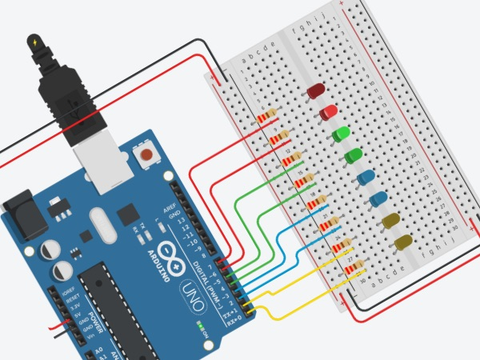

Tinkercad Circuits
Vollständiges Handbuch — Von 0 bis 100
Dieses Handbuch führt Sie Schritt für Schritt durch die Welt der elektronischen Schaltungen mit Tinkercad und Arduino. Von der ersten LED bis zur Mini-Wetterstation — alles erklärt, alles mit echten Screenshots.
Plattform, Konto, Dashboard, Bereiche
Arbeitsfläche, Toolbar, Ansichten, Verbinden
Uno R3, alle Pins, Nano, Mega erklärt
C++, alle Befehle, Code-Editor, Blöcke
Sensoren, Aktoren, ICs, passive Bauteile
Schritt-für-Schritt mit komplettem Code
Taschenrechner, Türschloss, Parkhaus, Ampel, Roboterarm...
Alle 30 Projekte: was simuliert, was echte Hardware braucht
Einsteiger bis Fortgeschritten, Gruppenarbeit
Alle Fachbegriffe auf Deutsch erklärt
Was ist Tinkercad?

Die Tinkercad-Startseite unter tinkercad.com
Tinkercad ist eine kostenlose, vollständig browserbasierte Plattform von Autodesk (dem Hersteller von AutoCAD). Man braucht keine Software herunterzuladen, keine Installation, kein teures Programm — alles läuft direkt im Webbrowser. Die Plattform wurde 2011 gegründet und 2013 von Autodesk übernommen. Heute nutzen Millionen Schüler, Studenten, Lehrer und Hobby-Bastler weltweit Tinkercad, um Elektronikprojekte zu planen, zu bauen und zu simulieren.
Das Besondere an Tinkercad Circuits ist die Simulation: Sie können eine Schaltung mit einem Arduino-Mikrocontroller und echten Sensoren zusammenbauen, Code schreiben und dann auf den "Simulation starten"-Button drücken — die Schaltung läuft virtuell, als hätten Sie echte Hardware vor sich. LEDs leuchten, Displays zeigen Text, Servos drehen sich. Das ist ideal zum Lernen, denn Fehler kosten nichts.
Die Tinkercad Circuits Oberfläche auf einen Blick
Drei Bereiche: Komponentenbibliothek links → Arbeitsfläche Mitte → Eigenschaften rechts
Die Bereiche von Tinkercad

Tinkercad bietet mehrere Bereiche: 3D Design, Circuits, Codeblocks, Sim Lab und mehr
| Bereich | Was kann ich dort? | Wofür? |
|---|---|---|
| 3D-Design | Dreidimensionale Objekte entwerfen und 3D-drucken | Gehäuse, Modelle, CAD |
| Circuits ★ | Elektronikschaltungen mit Arduino simulieren | CPS, Elektronik, Programmierung |
| Codeblocks | Visuelle Programmierung mit 3D-Objekten | Einsteiger-Programmierung |
| Sim Lab | Physik simulieren (Kräfte, Mechanik) | Naturwissenschaften |
Konto erstellen — Schritt für Schritt

Nach der Anmeldung erscheint das persönliche Dashboard
tinkercad.com.Was ist die "Cloud" — und warum spart es alles automatisch?
Cloud bedeutet, dass deine Daten nicht auf deinem Computer gespeichert werden, sondern auf Servern (riesigen Computern) irgendwo im Internet — zugänglich von überall. Tinkercad speichert automatisch alle deine Projekte in der Cloud. Das bedeutet: kein Speichern vergessen, kein "mein USB-Stick ist kaputt". Von jedem Gerät aus kannst du dich anmelden und deine Projekte öffnen.
Was bedeutet "Open Source"?
Open Source bedeutet, dass der Quellcode (der "Blueprint" des Programms) öffentlich zugänglich und frei nutzbar ist. Arduino ist Open Source — das heißt, du darfst den Code lesen, verändern und sogar deinen eigenen Arduino bauen. Millionen Menschen weltweit tragen zu Open-Source-Projekten bei und verbessern sie ständig. Das ist der Grund warum Arduino so viele Bibliotheken und Tutorials hat.
Das Tinkercad-Dashboard

Das persönliche Dashboard mit allen Projekten (hier: Hussein Azghir)
Das Dashboard ist Ihre zentrale Startseite nach der Anmeldung:
- Linke Seitenleiste: Navigation — Home, Classes, Designs, Collections, Tutorials, Challenges
- 3D Designs: Alle gespeicherten 3D-Projekte, Tutorial-Einstieg (Place It, View It, Move It)
- Circuits: Alle Ihre Schaltungsprojekte. "Create your first Circuits design" startet ein neues Projekt
- Codeblocks: Visuelle Programmierprojekte
- Tutorials: Eingebaute Tutorials — Start Simulating, Editing Components, Wiring Components

Der Circuits-Bereich im Dashboard mit eingebauten Tutorial-Kacheln: "Start Simulating", "Editing Components", "Wiring Components"

Genau das machst du in Tinkercad: einen Stromkreis aufbauen und simulieren (Wikimedia Commons)
Circuits – Die Oberfläche
Um ein neues Circuit-Projekt zu starten, klicken Sie im Dashboard auf "Circuits", dann auf den grünen Button "+ Create your first Circuits design". Das neue Projekt öffnet sich im Circuit-Editor.
Was ist eine "Simulation"?
Eine Simulation ist eine computergestützte Nachbildung der Realität. In Tinkercad simulierst du eine echte Schaltung — der Computer berechnet wie Strom fließen würde, ob LEDs leuchten würden, welche Werte Sensoren ausgeben würden. Das ist kein echtes Experiment, aber es zeigt dir das Ergebnis ohne echte Bauteile kaufen zu müssen. Fehler in der Simulation kosten nichts.
Simulation — Wie funktioniert sie?
Die Arbeitsfläche (Canvas)

Ein neues leeres Circuit-Projekt — links die Arbeitsfläche, rechts die Komponentenbibliothek
Die graue Rasterfläche in der Mitte ist Ihre Arbeitsfläche (Canvas). Hier platzieren Sie alle Bauteile und ziehen Verbindungsdrähte.
- Zoomen: Mausrad scrollen oder die +/- Buttons unten rechts
- Verschieben: Maus mit gedrückter mittlerer Maustaste oder Space + Linksklick
- Bauteil auswählen: Linksklick auf das Bauteil
- Bauteil verschieben: Bauteil anklicken und ziehen
- Mehrere auswählen: Shift + Klick oder Auswahlrahmen ziehen
- Bauteil löschen: Auswählen, dann Entf/Delete-Taste oder Papierkorb-Symbol
- Rückgängig: Strg+Z (Windows) / Cmd+Z (Mac)
Die Toolbar oben
| Symbol / Button | Funktion | Tastenkürzel |
|---|---|---|
| Rückgängig (Pfeil links) | Letzte Aktion rückgängig machen | Strg+Z |
| Wiederholen (Pfeil rechts) | Rückgängig gemachte Aktion wiederholen | Strg+Y |
| Papierkorb | Ausgewählte Bauteile löschen | Del / Backspace |
| Drehen | Ausgewähltes Bauteil um 90° drehen | R |
| Kopieren / Einfügen | Bauteil kopieren und einfügen | Strg+C / Strg+V |
| Code | Code-Editor öffnen | – |
| Start Simulation | Simulation starten | S |
| Send To | Schaltplan exportieren oder teilen | – |
Die Komponentenbibliothek
Auf der rechten Seite finden Sie alle verfügbaren Bauteile. Das Dropdown "Basic" zeigt die wichtigsten Kategorien. Sie können:
- Suchen: Im Suchfeld oben eingeben (z.B. "Arduino", "LED", "TMP36")
- Kategorien: Basic / All — im Dropdown wechseln
- Platzieren: Bauteil aus dem Panel auf die Arbeitsfläche ziehen
- Bearbeiten: Auf platziertes Bauteil klicken → Eigenschaften ändern (z.B. Widerstandswert)
Verbindungen ziehen

Tutorial "Editing Components" — Arduino Uno mit 3 blauen LEDs und 200-Ohm-Widerständen verbunden
Das Verbinden von Bauteilen ist das Herzstück von Tinkercad Circuits:
Drei Ansichten in Tinkercad
Oben rechts im Editor finden Sie drei Icons zum Wechseln der Ansicht:

Schaltplanansicht (Schematic View) — professioneller Stromlaufplan als PDF exportierbar

Bauteilliste (Component List) — alle Bauteile mit Anzahl und Typ als CSV exportierbar
- Schaltungsansicht (Standard): Reale Darstellung der Bauteile auf der Arbeitsfläche. Zum Bauen und Simulieren.
- Schaltplanansicht: Professioneller Stromlaufplan (Schematic). Als PDF speicherbar. Zeigt alle Verbindungen in der Norm-Darstellung.
- Bauteilliste: Tabelle mit allen verwendeten Bauteilen, Anzahl und Bezeichnung. Als CSV herunterladbar — ideal für Einkaufslisten.
Vollständige Tastaturkürzel
| Kürzel | Funktion |
|---|---|
| Strg + Z | Rückgängig |
| Strg + Y | Wiederholen |
| Strg + C | Kopieren |
| Strg + V | Einfügen |
| Del / Backspace | Löschen |
| R | Bauteil drehen (90°) |
| S | Simulation starten/stoppen |
| Esc | Auswahl aufheben / Draht abbrechen |
| Strg + A | Alle Bauteile auswählen |
| Mausrad | Rein-/Rauszoomen |
Projekte verwalten
- Umbenennen: Klicken Sie oben links auf den Projektnamen (Standard: "Spectacular Trug" o.ä.)
- Automatisch gespeichert: Tinkercad speichert automatisch — kein Button nötig
- Teilen: Rechts oben "Send To" → "Share Link" → Link kopieren → an Lehrer schicken
- Duplizieren: Im Dashboard → Klick auf Projekt → "Duplizieren"
Das Breadboard – Herzstück jeder Schaltung
Was ist Löten — und warum brauche ich es NICHT?
Löten ist ein Verfahren, bei dem man zwei Metallteile mit einem heißen Zinn-Legierungsdraht dauerhaft verbindet — ähnlich wie Schweißen, aber für Elektronik. Im echten Labor muss man Bauteile oft löten damit sie dauerhaft halten.
Ein Breadboard (Steckbrett) ist dafür gemacht, dass du Bauteile einfach reinsteckst und rausziehst — ohne Löten! Das macht es ideal zum Lernen und Ausprobieren. In Tinkercad musst du natürlich gar nicht löten — alles passiert virtuell.
Was ist ein Kurzschluss?
Ein Kurzschluss passiert wenn Plus (+) und Minus (−) direkt miteinander verbunden werden — ohne einen Widerstand dazwischen. Das ist wie ein Rohr das direkt in den Abfluss führt: der gesamte Strom fließt sofort ab. Im echten Leben kann das Bauteile zerstören, Drähte erhitzen oder Batterien entladen. In Tinkercad wird eine Warnung angezeigt und die Simulation verhält sich merkwürdig. Beim Breadboard: Nie Plus-Schiene direkt mit Minus-Schiene verbinden!
Das Breadboard (Steckbrett) ist eines der wichtigsten Hilfsmittel in der Elektronik. Es ermöglicht, Bauteile ohne Löten miteinander zu verbinden. In Tinkercad finden Sie es in der Kategorie "Basic" als "Breadboard Small" (170 Punkte) oder als großes Breadboard.
Aufbau des Breadboards

Schematische Darstellung: welche Punkte intern verbunden sind (Wikimedia Commons)

Vollständiges Breadboard mit roten (+) und blauen (−) Stromschienen (Wikimedia Commons)
Ein typisches Breadboard (830 Kontaktpunkte) besteht aus drei Bereichen:
- Stromschienen (Power Rails): Die langen Reihen oben und unten (+/−). Alle Punkte einer Stromschiene sind elektrisch verbunden. Rot = Plus (+), Blau/Schwarz = GND (−).
- Hauptbereich: Die kurzen Reihen in der Mitte (Spalten a-e links und f-j rechts). Jede Reihe von 5 Punkten auf einer Seite ist intern verbunden.
- Mittelkanal: Die Lücke in der Mitte trennt die linke (a-e) von der rechten (f-j) Seite. ICs werden hier hineingespannt, damit ihre Pins nicht kurzgeschlossen werden.
Wie benutze ich das Breadboard?
- Verbinden Sie die
+Stromschiene (rot) mit5Vdes Arduino - Verbinden Sie die
−Stromschiene (schwarz/blau) mitGNDdes Arduino - Stecken Sie Bauteile in die Hauptreihen des Breadboards
- Verbinden Sie Reihen untereinander oder mit den Stromschienen
- Verwenden Sie Widerstände immer in Reihe mit LEDs
Breadboard-Größen in Tinkercad
| Typ | Punkte | Für was geeignet |
|---|---|---|
| Breadboard Small | 170 | Kleine Schaltungen, erste Experimente |
| Breadboard (Standard) | 400 | Mittlere Projekte |
| Breadboard (Groß) | 830 | Komplexe Projekte, Arduino + mehrere Module |
Animierter Stromkreis: Schalter öffnet/schließt — Lampe geht an/aus (Wikimedia Commons, CC BY-SA)
Arduino – Der Mikrocontroller
Bevor wir starten: Mach dir keine Sorgen, wenn du noch nie etwas mit Elektronik gemacht hast. Dieses Kapitel erklärt alles von Grund auf — Schritt für Schritt, mit einfachen Alltagsbeispielen.
Was ist ein Mikrocontroller?
Ein Mikrocontroller ist ein winziger Computer — so klein, dass er auf einen einzigen Chip passt. Im Gegensatz zu einem normalen Computer (der Texte schreibt, Videos spielt usw.) ist ein Mikrocontroller speziell dafür gemacht, die physische Welt zu steuern.
Stell dir vor, du baust eine automatische Pflanzenbewässerung. Der Mikrocontroller:
- Liest wie feucht die Erde ist (über einen Sensor)
- Entscheidet ob Wasser nötig ist (Programm im Chip)
- Schaltet eine Wasserpumpe an oder aus
Das ist das Grundprinzip hinter jedem Arduino-Projekt: Messen → Entscheiden → Reagieren.

Arduino in Aktion: Micro-Controller liest Sensoren und steuert Aktoren (Wikimedia Commons)
Das Arduino Uno R3 Board — Was sehe ich da?
Der Arduino Uno R3 ist das am häufigsten verwendete Board — ideal für Einsteiger. "Uno" bedeutet auf Italienisch "Eins" (es war der erste standardisierte Arduino), "R3" steht für Revision 3, also die dritte überarbeitete Version.

Das echte Arduino Uno R3 Board (Foto: Wikimedia Commons, CC BY-SA)

Vollständiges Pin-Diagramm — alle Anschlüsse auf einen Blick (Wikimedia Commons, CC BY-SA)
Wenn du das Board anschaust, siehst du viele kleine Löcher an den Rändern — das sind die Pins. Daneben befinden sich verschiedene Chips, ein USB-Anschluss und eine Stromanzeige-LED.
Die wichtigsten Begriffe erklärt — bevor du weiterließt
In der folgenden Pin-Tabelle kommen Begriffe vor, die auf den ersten Blick unverständlich wirken. Hier ist eine einfache Erklärung für jeden davon:
Was ist ein PIN?
Ein Pin ist ein einzelner Anschluss am Arduino-Board — buchstäblich ein kleiner Metallstift. Über Pins verbindest du den Arduino mit der Außenwelt: du steckst Kabel oder Bauteile daran. Der Arduino Uno hat insgesamt 32 Pins für verschiedene Zwecke.
Die Nummern neben dem "D" (z.B. D0, D3, D13) sind einfach die Nummern der Pins — wie Hausnummern. Im Programm schreibst du diese Nummer, um den Arduino zu sagen, welchen Pin er benutzen soll.
Was bedeutet "Digital" vs. "Analog"?
Digital kennt nur zwei Zustände: AN oder AUS — wie ein normaler Lichtschalter. In Elektronik heißt das:
- AN = 5 Volt = Zahl "1" = HIGH
- AUS = 0 Volt = Zahl "0" = LOW
Analog kennt viele Zwischenwerte — wie ein Dimmer, mit dem du das Licht von komplett aus bis voll hell stufenlos einstellen kannst. Die analogen Pins A0–A5 können jede Spannung zwischen 0V und 5V messen und als Zahl zwischen 0 und 1023 ausgeben.
Beispiel: Ein Temperatursensor liefert 2.3V → das ist ein analoges Signal. Ein Taster liefert entweder 0V oder 5V → das ist ein digitales Signal.
Was bedeutet "I/O" (Eingang / Ausgang)?
I/O steht für englisch Input / Output, auf Deutsch: Eingang / Ausgang.
- Input (Eingang): Der Pin EMPFÄNGT Information von außen. Beispiel: Der Arduino erkennt, ob ein Taster gedrückt wird.
- Output (Ausgang): Der Pin SENDET Strom nach außen. Beispiel: Der Arduino schaltet eine LED ein.
Die meisten digitalen Pins (D0–D13) können beides! Du legst im Programm mit dem Befehl pinMode(pinnummer, INPUT) oder pinMode(pinnummer, OUTPUT) fest, was der Pin gerade tun soll.
Was ist PWM — und was bedeutet das Zeichen ~ ?
PWM steht für Pulse Width Modulation — auf Deutsch: Pulsweitenmodulation. Es klingt kompliziert, ist aber simpel:
Digital bedeutet nur AN oder AUS. Aber manchmal will man eine LED dimmen — also nicht voll hell, nicht ganz aus, sondern irgendwo dazwischen. Mit PWM trickst man das aus: Der Pin schaltet so schnell AN und AUS (490 Mal pro Sekunde!), dass das Auge es nicht merkt und nur eine mittlere Helligkeit sieht.
- Wert 0 → 0% AN → LED aus
- Wert 128 → 50% AN → LED halb hell
- Wert 255 → 100% AN → LED voll hell
PWM-Pins sind mit einer Tilde (~) markiert. Beim Uno sind das: Pin 3, 5, 6, 9, 10 und 11. Im Programm: analogWrite(pin, 0–255)
Was ist TX/RX — serielle Kommunikation?
TX = Transmit = Senden. RX = Receive = Empfangen.
Pin 0 (RX) und Pin 1 (TX) sind die "Gesprächskanäle" des Arduino zum Computer. Darüber kann der Arduino Textnachrichten senden — du siehst sie im "Seriellen Monitor" in Tinkercad. Das ist sehr nützlich zum Debuggen (Fehler finden): Du schreibst Serial.println("Hallo!") in deinen Code und siehst die Nachricht am Bildschirm.
Wichtig: Wenn du den Arduino über USB programmierst, sind Pins 0 und 1 belegt. Schließe dort nichts anderes an — sonst gibt es Konflikte!
Was ist ein Interrupt?
Stell dir vor, du lernst konzentriert und jemand klingelt an der Tür. Du unterbrichst sofort dein Lernen und gehst zur Tür — egal was du gerade gemacht hast.
Genauso funktioniert ein Interrupt: Pins 2 und 3 können das laufende Programm sofort unterbrechen, wenn sich ihr Zustand ändert (z.B. jemand drückt einen Taster). Der Arduino springt dann zu einer speziellen Funktion (ISR — Interrupt Service Routine) und kommt danach zu seiner eigentlichen Arbeit zurück.
Interrupts sind für zeitkritische Reaktionen wichtig — z.B. wenn eine Lichtschranke unterbrochen wird und der Arduino sofort stoppen soll.
Was sind GND, 5V, 3.3V, VIN?
Diese Pins liefern oder verbinden Strom:
- GND (Ground = Erdung = Masse): Das ist der Minuspol — der Rückweg des Stroms. JEDE Komponente muss mit GND verbunden sein, sonst fließt kein Strom. GND ist immer 0 Volt.
- 5V: Gibt 5 Volt Spannung aus — zum Betrieb von Komponenten direkt vom Arduino. Maximaler Strom: 500mA insgesamt.
- 3.3V: Gibt 3,3 Volt aus — für Komponenten die 5V nicht vertragen (z.B. manche Bluetooth-Module). Max. 150mA.
- VIN: Hier kannst du eine externe Stromquelle (7–12V, z.B. 9V-Batterie) anschließen, wenn kein USB verfügbar ist.
Alle Pins des Arduino Uno R3 — Übersicht
Jetzt, wo du die Begriffe kennst, macht die Tabelle Sinn:
| Pin-Nr. | Name | Was kann er? | Einfach erklärt |
|---|---|---|---|
| 0 | D0 / RX | Digital Eingang/Ausgang, Daten EMPFANGEN | Kanal zum Empfangen von Nachrichten. Im Normalbetrieb: normaler digitaler Pin. |
| 1 | D1 / TX | Digital Eingang/Ausgang, Daten SENDEN | Kanal zum Senden von Nachrichten (z.B. an Seriellen Monitor). Pins 0+1 möglichst freilassen! |
| 2 | D2 | Digital Eingang/Ausgang, Interrupt | Normaler Digital-Pin. Kann auch sofort auf Ereignisse reagieren (Interrupt-fähig). |
| 3 | D3 ~ | Digital Eingang/Ausgang, PWM, Interrupt | Kann LED dimmen oder Motorgeschwindigkeit regeln (~=PWM). Auch Interrupt-fähig. |
| 4 | D4 | Digital Eingang/Ausgang | Einfacher AN/AUS-Pin. LED an, LED aus. Taster lesen usw. |
| 5 | D5 ~ | Digital Eingang/Ausgang, PWM | Wie D4, aber zusätzlich dimmfähig (~=PWM). |
| 6 | D6 ~ | Digital Eingang/Ausgang, PWM | Wie D5 — dimmfähig. |
| 7 | D7 | Digital Eingang/Ausgang | Einfacher AN/AUS-Pin. |
| 8 | D8 | Digital Eingang/Ausgang | Einfacher AN/AUS-Pin. |
| 9 | D9 ~ | Digital Eingang/Ausgang, PWM | Dimmfähig — gut für Servo-Motoren oder RGB-LEDs. |
| 10 | D10 ~ | Digital Eingang/Ausgang, PWM | Dimmfähig. Auch für Kommunikation mit SD-Karten nutzbar. |
| 11 | D11 ~ | Digital Eingang/Ausgang, PWM | Dimmfähig. Für fortgeschrittene Kommunikation (SPI) nutzbar. |
| 12 | D12 | Digital Eingang/Ausgang | Einfacher AN/AUS-Pin. Auch für SPI-Kommunikation nutzbar. |
| 13 | D13 (LED L) | Digital Eingang/Ausgang, eingebaute LED | Besonderer Pin: Hat eine eingebaute LED direkt am Board (LED "L"). Perfekt für erste Tests ohne extra Bauteile! |
| A0–A5 | Analog 0–5 | Analoge Eingänge (auch digital nutzbar) | Messen stufenlose Werte zwischen 0V und 5V → Werte 0 bis 1023. Für Sensoren (Temperatur, Helligkeit, Poti...) |
| 5V | 5V (VCC) | Strom-Ausgang 5 Volt | Versorgt Komponenten mit Strom. Nie mehr als 500mA insgesamt abnehmen! |
| 3.3V | 3V3 | Strom-Ausgang 3,3 Volt | Für Komponenten, die nur 3,3V vertragen (ESP-Module, manche Sensoren). Max. 150mA. |
| GND | GND (Masse) | Minus / Erdung (2× vorhanden) | Der Rückweg des Stroms. MUSS mit jeder Komponente verbunden sein — sonst funktioniert gar nichts! Immer 0V. |
| VIN | VIN | Strom-Eingang extern | Hier 7–12V Batterie anschließen wenn kein USB. Interner Regler wandelt auf 5V um. |
| RST | RESET | Arduino neu starten | Wenn dieser Pin kurz auf 0V gezogen wird, startet der Arduino neu — wie ein Neustart-Knopf. |
| AREF | AREF | Externe Referenzspannung | Fortgeschritten: Setzt den Maximalwert für analoge Messungen auf eine eigene Spannung. Für Einsteiger nicht relevant. |
analogWrite() für stufenlose Steuerung. Für alle anderen Pins nur digitalWrite() mit HIGH oder LOW.Technische Daten des Arduino Uno R3 — mit Erklärungen
| Eigenschaft | Wert | Was bedeutet das? |
|---|---|---|
| Prozessor (CPU) | ATmega328P | Das "Gehirn" des Arduino — führt deinen Code aus |
| Taktfrequenz | 16 MHz | Der Prozessor macht 16 Millionen Schritte pro Sekunde — sehr schnell für unsere einfachen Aufgaben |
| Betriebsspannung | 5V | Der Arduino arbeitet intern mit 5 Volt |
| Flash-Speicher | 32 KB | Hier wird dein Programm dauerhaft gespeichert — bleibt auch ohne Strom erhalten (wie ein USB-Stick) |
| SRAM (RAM) | 2 KB | Arbeitsspeicher für laufende Berechnungen — geht verloren wenn Strom weg ist (wie PC-RAM) |
| EEPROM | 1 KB | Kleiner Dauerspeicher für Einstellungen — bleibt ohne Strom erhalten. Schreibst du selbst per Code. |
| Digitale I/O-Pins | 14 (davon 6 mit PWM) | 14 AN/AUS-Pins, 6 davon können auch dimmen |
| Analoge Eingänge | 6 (Werte 0–1023) | 6 Pins die Spannungen stufenlos messen können |
| Maximaler Strom pro Pin | 40 mA | Nie mehr als 40 Milliampere an einem Pin abnehmen! Eine normale LED braucht ~20mA. |
| USB-Anschluss | USB-B (quadratisch) | Zum Programmieren und Stromversorgung vom Computer |
Weitere Arduino-Boards in Tinkercad
Es gibt nicht nur den Uno — hier sind weitere Boards, die du in Tinkercad findest:
Arduino Nano
Kleiner, aber gleich leistungsstark. Der Nano verwendet denselben Prozessor wie der Uno (ATmega328P), passt aber auf ein Steckbrett (Breadboard). Ideal wenn du wenig Platz hast. Hat 8 analoge Eingänge (A0–A7) statt 6. In Tinkercad über die Suche "Arduino Nano" verfügbar.
Arduino Mega 2560
Für große Projekte mit vielen Bauteilen. Der Mega hat 54 digitale Pins (davon 15 PWM-fähig!), 16 analoge Eingänge und 4 serielle Ports — das Dreifache vom Uno. Für komplexe Projekte wie Roboter oder Automatisierungen. In Tinkercad verfügbar.
micro:bit
Für absolute Einsteiger und Schulen konzipiert. Hat ein eingebautes 5×5 LED-Display, zwei Taster, Bluetooth, Beschleunigungssensor (erkennt Neigung) und Kompass — alles direkt auf dem Board ohne extra Bauteile. Programmierung per Drag-and-Drop in MakeCode oder Python. In Tinkercad simulierbar.
Arduino Programmierung
Jetzt kommt das Herzstück: Wir bringen dem Arduino bei, was er tun soll — durch Programmierung. Klingt schwierig? Keine Sorge. Du musst kein Informatikstudium haben. Wir erklären alles Schritt für Schritt.
Was ist Programmierung überhaupt?
Programmierung bedeutet: Du schreibst eine Liste von Anweisungen (den Code), die der Arduino der Reihe nach ausführt. Stell dir vor, du schreibst einer Küchenhilfe eine genaue Anleitung auf einem Zettel: "1. Ofen auf 180°C vorheizen. 2. Teig formen. 3. 30 Minuten backen." — Das ist im Prinzip Code.
Arduino wird in der Programmiersprache C++ programmiert — genauer in einer vereinfachten Version, die speziell für Mikrocontroller gemacht wurde. C++ ist eine der meistverbreiteten Programmiersprachen der Welt. Du musst nicht alles über C++ wissen — nur die Teile, die für Arduino relevant sind.
Was ist ein "Sketch"?
In der Arduino-Welt nennt man ein Programm "Sketch" (englisch für "Skizze"). Das ist einfach ein anderes Wort für dein Programm. Jedes Projekt hat seinen eigenen Sketch. In Tinkercad klickst du auf den "Code"-Button um den Sketch zu öffnen und zu schreiben.
Was ist eine Bibliothek (Library)?
Stell dir vor, jemand hat bereits fertigen Code für ein LCD-Display geschrieben — du musst das Rad nicht neu erfinden. Diese vorgeschriebenen Code-Sammlungen heißen Bibliotheken (englisch: Libraries). Mit dem Befehl #include <Name.h> bindest du eine Bibliothek in deinen Sketch ein. Danach kannst du alle Funktionen dieser Bibliothek benutzen. Beispiel: #include <Servo.h> gibt dir sofort Zugriff auf alle Servo-Steuerbefehle.
Der Code-Editor in Tinkercad

Block + Text Modus: Blöcke links, automatisch generierter C++-Code rechts

Text-Modus: direkter C++-Editor mit Syntaxhervorhebung
Klicken Sie in einem Circuit-Projekt auf den "Code"-Button (oben rechts). Sie sehen drei Modi:
- Blocks: Visueller Drag-and-Drop-Editor. Ideal für den Einstieg. Vorgefertigte Blöcke für jeden Befehl.
- Text: Direkter C++-Editor. Volle Kontrolle, alle Möglichkeiten.
- Blocks + Text: Beide gleichzeitig — Blöcke links, generierter Code rechts. Perfekt zum Lernen wie Blöcke zu Code werden!
Simulation und Debugger

Während der Simulation: "Stop Simulation"-Button und der eingebaute Debugger-Hinweis
Was ist ein Debugger?
Wenn dein Programm nicht das tut was es soll, musst du den Fehler finden — das nennt man Debuggen (englisch: "bug" = Käfer, Fehler; "debug" = Fehler entfernen). Der Debugger ist ein Werkzeug das dir dabei hilft. Es hält das Programm an einer bestimmten Stelle an, damit du genau hinschauen kannst was der Arduino in diesem Moment "denkt".
Ein Breakpoint (Haltepunkt) ist eine markierte Zeile in deinem Code. Wenn die Simulation diesen Punkt erreicht, hält sie an — damit du in Ruhe prüfen kannst was gerade passiert.
Der Debugger in Tinkercad ermöglicht:
- Breakpoints (Haltepunkte): Klick auf eine Zeilennummer → Programm stoppt genau dort
- Variablenwerte lesen: Mit der Maus über eine Variable fahren zeigt ihren aktuellen Wert
- Schrittweise vorwärts: Zeile für Zeile durch den Code gehen
- Serial Monitor: Das Textausgabe-Fenster — zeigt alles was du mit
Serial.println()sendest
C++ Grundlagen für Arduino — mit einfachen Erklärungen
Was ist eine Funktion?
Eine Funktion ist ein benannter Block von Code — wie ein Rezept mit einem Namen. Du gibst dem Rezept einen Namen (z.B. "kuchenBacken"), und wenn du später "kuchenBacken" schreibst, werden alle Schritte darin ausgeführt. In Arduino schreibst du delay(1000) und sofort wartet der Arduino 1000 Millisekunden — du musst nicht selber schreiben wie das Warten funktioniert, das steckt schon in der Funktion delay().
void vor dem Namen bedeutet: Diese Funktion gibt keinen Wert zurück — sie macht einfach etwas, gibt aber keine Antwort.
Die zwei Pflichtfunktionen jedes Sketches — und warum es sie gibt
Jeder Arduino-Sketch muss genau diese zwei Funktionen haben — nicht mehr, nicht weniger. Arduino erwartet sie und ruft sie automatisch auf:
// setup() läuft EINMAL beim Start (oder nach Reset)
void setup() {
// Hier: Pins konfigurieren, Serial starten, Bibliotheken initialisieren
}
// loop() läuft ENDLOS in einer Schleife (immer wieder)
void loop() {
// Hier: der eigentliche Programmcode — Sensoren lesen, Aktoren steuern
}Denke an einen Wecker:
setup() = du stellst den Wecker einmal ein. loop() = der Wecker klingelt jeden Morgen. Setup läuft einmal, loop läuft für immer.Arduino Programmablauf — setup() & loop()
Der Arduino wiederholt loop() millionenfach pro Sekunde — bis der Strom ausgeht
Mikrocontroller in Aktion: Chip verarbeitet Eingaben und steuert Ausgaben in Echtzeit (Wikimedia Commons)
Variablen und Datentypen — Was ist das?
Was ist eine Variable?
Eine Variable ist ein Speicherplatz für einen Wert — wie eine beschriftete Schublade. Du gibst der Schublade einen Namen (temperatur) und legst einen Wert hinein (23). Später kannst du die Schublade öffnen und den Wert lesen oder ändern. Ohne Variablen müsste man jeden Wert immer neu tippen — mit Variablen kann man Werte speichern und wiederverwenden.
Beispiel: int lampenPin = 13; — das heißt: "Erstelle eine Schublade namens 'lampenPin' und lege die Zahl 13 hinein." Ab jetzt kann ich im ganzen Code lampenPin schreiben statt immer 13.
Was ist ein Datentyp?
Ein Datentyp sagt dem Arduino, welche Art von Wert in der Schublade (Variable) liegt. Warum? Weil der Arduino unterschiedliche Speichermengen braucht für: eine ganze Zahl (z.B. 42), eine Dezimalzahl (z.B. 3.14), einen Text ("Hallo") oder nur Ja/Nein (true/false). Der Typ kommt immer VOR dem Namen der Variable.
| Typ | Beispiel | Einfach erklärt |
|---|---|---|
int | int zahl = 42; | Ganze Zahlen: −32.768 bis 32.767 |
long | long gross = 100000L; | Große ganze Zahlen: ±2 Milliarden |
unsigned long | unsigned long t = millis(); | Positive Zahlen bis 4 Milliarden (für millis()) |
float | float temp = 23.5; | Dezimalzahlen (6–7 Stellen Genauigkeit) |
bool | bool an = true; | Nur true (1) oder false (0) |
char | char buchstabe = 'A'; | Ein einzelnes Zeichen (ASCII) |
String | String text = "Hallo"; | Zeichenkette (verbraucht viel RAM — sparsam einsetzen!) |
byte | byte b = 255; | 0 bis 255 (8-bit, kein Vorzeichen) |
const int | const int LED = 13; | Unveränderliche Konstante — für Pin-Nummern ideal |
Bedingungen und Schleifen
// IF-Bedingung
if (temperatur > 30) {
digitalWrite(LED_PIN, HIGH); // zu heiß → LED an
} else if (temperatur > 20) {
analogWrite(LED_PIN, 128); // warm → halb hell
} else {
digitalWrite(LED_PIN, LOW); // kalt → LED aus
}
// FOR-Schleife (5 mal wiederholen)
for (int i = 0; i < 5; i++) {
digitalWrite(LED_PIN, HIGH);
delay(200);
digitalWrite(LED_PIN, LOW);
delay(200);
}
// WHILE-Schleife (warte bis Taster gedrückt)
while (digitalRead(TASTER_PIN) == LOW) {
// Schleife läuft solange Taster nicht gedrückt
delay(10);
}
// SWITCH-CASE
switch (modus) {
case 1: digitalWrite(ROT, HIGH); break;
case 2: digitalWrite(GRUEN, HIGH); break;
default: digitalWrite(ROT, LOW);
}Alle wichtigen Arduino-Befehle
Digital I/O
| Befehl | Erklärung | Beispiel |
|---|---|---|
pinMode(pin, mode) | Pin als Eingang (INPUT) oder Ausgang (OUTPUT) definieren. Immer in setup()! | pinMode(13, OUTPUT); |
digitalWrite(pin, value) | Digitalpin auf HIGH (5V) oder LOW (0V) setzen | digitalWrite(13, HIGH); |
digitalRead(pin) | Zustand eines digitalen Eingangs lesen → HIGH oder LOW | int z = digitalRead(2); |
Analog I/O
| Befehl | Erklärung | Beispiel |
|---|---|---|
analogRead(pin) | Analogspannung lesen → Wert 0–1023 (entspricht 0–5V) | int w = analogRead(A0); |
analogWrite(pin, value) | PWM-Signal ausgeben (0=aus, 255=voll). Nur PWM-Pins (~)! | analogWrite(9, 128); |
analogReference(type) | Referenzspannung für analogRead() ändern (DEFAULT, INTERNAL, EXTERNAL) | analogReference(INTERNAL); |
Zeit
| Befehl | Erklärung | Beispiel |
|---|---|---|
delay(ms) | Programm pausieren (Millisekunden). 1000ms = 1 Sekunde. Blockiert alles! | delay(500); |
millis() | Millisekunden seit Programmstart. Für nicht-blockierendes Timing. | unsigned long t = millis(); |
micros() | Mikrosekunden seit Programmstart (1000µs = 1ms) | unsigned long t = micros(); |
delayMicroseconds(us) | Pause in Mikrosekunden | delayMicroseconds(10); |
Serial (Serieller Monitor)
| Befehl | Erklärung |
|---|---|
Serial.begin(9600) | Serielle Kommunikation starten. Immer in setup(). 9600 = Baud-Rate (Zeichen/s). |
Serial.println(wert) | Wert ausgeben + automatischer Zeilenumbruch |
Serial.print(wert) | Wert ausgeben ohne Zeilenumbruch |
Serial.available() | Anzahl empfangener Zeichen die noch nicht gelesen wurden |
Serial.read() | Ein Zeichen aus dem Empfangspuffer lesen |
Serial.parseInt() | Empfangene Zahl als int einlesen |
Nützliche Hilfsfunktionen
// Wert umrechnen (z.B. Potentiometer 0–1023 → Winkel 0–180°)
int winkel = map(pot_wert, 0, 1023, 0, 180);
// Wert auf Bereich begrenzen (Clipping)
int begrenzt = constrain(wert, 0, 255);
// Zufallszahl zwischen 1 und 6 (Würfel)
int wuerfel = random(1, 7); // random(min, max) → max ist EXKLUSIV
randomSeed(analogRead(0)); // Zufall initialisieren (immer zuerst)
// Ton auf Pin 8: Frequenz 440 Hz (Kammerton A), Dauer 500ms
tone(8, 440, 500);
noTone(8);
// Mathematische Hilfsfunktionen
int groesser = max(a, b); // größeren Wert zurückgeben
int kleiner = min(a, b); // kleineren Wert zurückgeben
int betrag = abs(wert); // Absolutwert (kein Vorzeichen)
double wurzel = sqrt(16); // Quadratwurzel → 4.0
double pot = pow(2, 8); // Potenz → 256.0
// Interrupts (reagieren sofort auf Pin-Änderung)
attachInterrupt(digitalPinToInterrupt(2), isr_funktion, FALLING);
// RISING, FALLING, CHANGE, LOWNicht-blockierendes Timing mit millis()
delay() blockiert das gesamte Programm — während des Wartens kann kein Taster gelesen, kein Sensor ausgewertet, keine andere LED gesteuert werden. Die professionelle Alternative ist millis():
// FALSCH: delay() blockiert alles!
void loop() {
digitalWrite(LED, HIGH);
delay(1000); // ← Taster NICHT lesbar in dieser Zeit
digitalWrite(LED, LOW);
delay(1000);
}
// RICHTIG: millis() — non-blocking, alles läuft parallel
unsigned long letzteZeit = 0;
int ledZustand = LOW;
void loop() {
unsigned long jetzt = millis();
if (jetzt - letzteZeit >= 1000) { // 1000ms vergangen?
letzteZeit = jetzt;
ledZustand = (ledZustand == LOW) ? HIGH : LOW;
digitalWrite(LED, ledZustand);
}
// Hier kann gleichzeitig noch anderes passieren!
if (digitalRead(TASTER) == HIGH) {
digitalWrite(LED2, HIGH); // ← funktioniert ohne Unterbrechung
}
}millis() gibt immer den richtigen Wert zurück, auch wenn das Ergebnis von jetzt - letzteZeit nach einem Überlauf (nach ~49 Tagen) überläuft — dank unsigned-Arithmetik bleibt die Differenz korrekt.Wichtige Bibliotheken
| Bibliothek | #include | Wofür? |
|---|---|---|
| Servo | #include <Servo.h> | Servo-Motoren steuern (0–180°) |
| LiquidCrystal | #include <LiquidCrystal.h> | LCD-Displays 16×2 ansteuern |
| Wire | #include <Wire.h> | I2C-Kommunikation (SDA/SCL) |
| SPI | #include <SPI.h> | SPI-Kommunikation |
| EEPROM | #include <EEPROM.h> | Werte dauerhaft speichern (bleiben nach Reset) |
| Stepper | #include <Stepper.h> | Schrittmotoren steuern |
| SoftwareSerial | #include <SoftwareSerial.h> | Zusätzliche serielle Ports auf beliebigen Pins |
Alle Komponenten in Tinkercad Circuits
In diesem Kapitel lernst du alle Bauteile kennen, die du in Tinkercad verwenden kannst. Bevor wir starten, klären wir die wichtigsten Grundbegriffe der Elektronik — die du in fast jeder Beschreibung wiederfindest:
Grundbegriffe Elektronik: Spannung, Strom, Widerstand
Stell dir Wasser in einem Rohr vor:
- Spannung (Volt, V): Der "Wasserdruck" — wie stark das Wasser drückt. Der Arduino arbeitet mit 5V. Eine 9V-Batterie hat mehr Druck. Ohne Spannung fließt kein Strom.
- Strom (Ampere, A / Milliampere, mA): Die "Wassermenge pro Sekunde" — wie viel Strom fließt. 1000 mA = 1 A. Eine LED braucht ~20 mA. Ein Motor braucht viel mehr.
- Widerstand (Ohm, Ω): Die "Verengung im Rohr" — bremst den Strom. Je mehr Widerstand, desto weniger Strom fließt. Formel: U = I × R (Spannung = Strom × Widerstand)
- mV (Millivolt): 1/1000 Volt. Sensoren geben oft sehr kleine Spannungen aus — z.B. 750 mV = 0,75 V.
Was ist ein Spannungsteiler?
Ein Spannungsteiler ist eine einfache Schaltung mit zwei Widerständen in Reihe. Warum braucht man das? Manche Sensoren (wie der LDR) ändern nur ihren Widerstand — sie liefern keine Spannung. Mit einem Spannungsteiler wandeln wir die Widerstandsänderung in eine messbare Spannungsänderung um:
5V → Sensor/LDR → Messpunkt (zu A0) → 10kΩ-Widerstand → GND
Am Messpunkt sehen wir dann eine Spannung, die sich je nach Sensorwert ändert — und genau das liest analogRead(A0).
Was ist ein Sensor?
Ein Sensor ist ein Bauteil das die physische Welt misst und in ein elektrisches Signal umwandelt — das der Arduino dann lesen kann. Genauso wie deine Sinne (Augen, Ohren, Haut) der Welt Signale geben, sind Sensoren die "Sinne" des Arduino.
Beispiele: Ein Temperatursensor misst Wärme → liefert Spannung. Ein Ultraschallsensor misst Entfernung → liefert Zeitdauer. Ein Lichtresistor misst Helligkeit → ändert seinen Widerstand.

Ultraschall-Sensor: Schallwellen werden ausgesandt, reflektiert und empfangen → Distanz berechnet

DC-Motor: Das Magnetfeld rotiert die Spule — Strom erzeugt Bewegung (Wikimedia Commons)
6.1 Sensoren
Temperatursensoren
TMP36 – Analoger Temperatursensor
Der TMP36 ist der häufigste Temperatursensor in Tinkercad. Er gibt eine Spannung proportional zur Temperatur aus — je wärmer, desto mehr Volt am Signal-Pin.
- Pins (Flachseite vorne): Links = VCC (5V — Stromversorgung), Mitte = Signal (zu A0 — hier liest du), Rechts = GND (Minuspol)
- Ausgabe: 10 mV pro °C, plus 500 mV Offset. Bei 25°C → 750 mV. Bei 0°C → 500 mV. Bei 100°C → 1500 mV.
- Messbereich: −40°C bis +125°C
- Formel:
temperatur = (analogRead(A0) * 5.0 / 1023.0 - 0.5) * 100 - Anwendung: Thermometer, Thermostat, Temperaturalarm, Kühlüberwachung
LM35 – Präzisions-Temperatursensor
Ähnlich wie TMP36, aber noch einfachere Formel: 10 mV/°C ab 0°C, kein negativer Offset.
- Formel:
temperatur = analogRead(A0) * 500.0 / 1023.0 - Messbereich: 2°C bis 150°C (kein Negativbereich!)
Distanzsensoren
HC-SR04 – Ultraschall-Distanzsensor

HC-SR04 Ultraschallsensor — links Sender (T), rechts Empfänger (E)
Messprinzip: Schallwelle wird ausgesandt, reflektiert und der Arduino misst die Laufzeit
Misst Abstände durch Schallwellen (ähnlich wie Fledermäuse). Sendet einen Ultraschall-Burst und misst die Laufzeit des Echos.
- Pins: VCC (5V), Trig (Auslöser-Signal → Ausgang), Echo (Echo-Signal → Eingang), GND
- Messbereich: 2 cm bis 400 cm, Genauigkeit ±3 mm
- Distanzformel:
cm = pulseIn(ECHO, HIGH) * 0.034 / 2 - Anwendung: Roboter-Hinderniserkennung, Parkassistent, Füllstandsmessung, Einbruchalarm
Lichtsensoren
LDR – Fotowiderstand (Light Dependent Resistor / Photoresistor)
Der LDR ändert seinen Widerstand je nach Lichtmenge. Bei Helligkeit: niedriger Widerstand. Bei Dunkelheit: hoher Widerstand.
- Anschluss: Als Spannungsteiler mit 10 kΩ Festwiderstand: 5V → LDR → Knoten (zu A0) → 10 kΩ → GND
- Ausgabe:
analogRead(A0)→ ~0 (sehr dunkel) bis ~1023 (sehr hell) - Anwendung: Automatisches Nachtlicht, Jalousie, Tag-/Nacht-Steuerung
Bewegungssensoren
PIR-Sensor – Passiv-Infrarot-Bewegungssensor
Erkennt die Infrarotstrahlung (Wärme) von Menschen und Tieren. "Passiv" bedeutet: er sendet nichts aus, empfängt nur.
- Pins: VCC (5V), Signal (digital HIGH bei Bewegung), GND
- Ausgabe: Digital — HIGH (5V) bei Bewegung erkannt, LOW sonst
- Nachhaltezeit: Signal bleibt einige Sekunden HIGH nach letzter Erkennung
- Anwendung: Einbruchalarm, automatisches Licht, Besucherzähler, Benachrichtigungssystem
Neigungsschalter (Tilt Sensor)
Einfacher Schalter mit Quecksilber- oder Metallkugel, die bei Neigung Kontakte verbindet. Ideal für Sturzdetektion.
- Ausgabe: Digital (HIGH/LOW) — geschlossen wenn geneigt
- Anwendung: Sturzerkennung, Erschütterungsalarm, Orientierungserkennung
Eingabe-Sensoren
Potentiometer
Ein drehbarer Widerstand mit 3 Anschlüssen. Ideal für analoge Eingaben (Lautstärke, Helligkeit, Winkel).
- Pins: Links = GND, Mitte = Signal (zu A0), Rechts = 5V (oder umgekehrt)
- Ausgabe:
analogRead(A0)→ 0 bis 1023 (linear) - Anwendung: Lautstärkeregler, Dimmer, Servo-Handsteuerung, Joystick
Taster (Push Button)
Druckschalter: gedrückt = Stromfluss, losgelassen = kein Strom. Benötigt Pull-down Widerstand!
- Pull-down: 10 kΩ zwischen Signalpin und GND → definiert LOW wenn nicht gedrückt
- Intern Pull-up:
pinMode(pin, INPUT_PULLUP)→ kein externer Widerstand nötig, Logik invertiert (LOW = gedrückt) - Anwendung: Start/Stop, Menünavigation, Ereignisauslöser, Zähler
Flex-Sensor
Flexibler Sensor — sein Widerstand ändert sich mit der Biegung. Flach: ~25 kΩ, stark gebogen: ~100 kΩ.
- Wie LDR anschließen (Spannungsteiler mit 47 kΩ)
Force Sensor (FSR) – Kraftsensor
Widerstand ändert sich mit ausgeübtem Druck. Kein Druck: ~1 MΩ, voller Druck: ~200 Ω.
- Wie LDR anschließen (Spannungsteiler mit 10 kΩ)
Feuchtigkeits- & Klimasensoren
DHT11 – Temperatur- & Luftfeuchtigkeitssensor

DHT11 – günstiger Einstiegssensor (Wikimedia Commons)
Der DHT11 misst gleichzeitig Temperatur (0–50°C, ±2°C) und Luftfeuchtigkeit (20–90% RH, ±5%). Ein digitales Single-Wire-Protokoll — nur 1 Datenleitung nötig.
- Pins (Vorderseite): VCC (3.3–5V), Data (zu Digital-Pin + 10 kΩ Pull-up zu VCC), NC (nicht belegt), GND
- Bibliothek:
#include <DHT.h>(Adafruit DHT sensor library) - Messrate: maximal 1× pro Sekunde
- Anwendung: Wetterstation, Raumklima, Gewächshaus, Klimaanlage
#include <DHT.h>
const int DHT_PIN = 7;
DHT dht(DHT_PIN, DHT11); // DHT22 → einfach DHT22 statt DHT11
void setup() { Serial.begin(9600); dht.begin(); }
void loop() {
delay(2000);
float feuchte = dht.readHumidity();
float temp = dht.readTemperature(); // Celsius
if (isnan(feuchte) || isnan(temp)) {
Serial.println("Fehler: Sensor nicht verbunden!");
return;
}
Serial.print("Temp: "); Serial.print(temp); Serial.print(" C ");
Serial.print("Feuchte: "); Serial.print(feuchte); Serial.println("%");
}DHT22 – Präzisions-Temperatur- & Feuchtigkeitssensor

Der DHT22 (auch AM2302) ist die präzisere Version des DHT11 — teurer aber deutlich genauer.
| Eigenschaft | DHT11 | DHT22 |
|---|---|---|
| Temperatur-Bereich | 0–50°C | −40 bis +80°C |
| Temperatur-Genauigkeit | ±2°C | ±0.5°C |
| Feuchtigkeits-Bereich | 20–90% RH | 0–100% RH |
| Feuchtigkeits-Genauigkeit | ±5% | ±2–5% |
| Messrate | 1×/Sek. | 0.5×/Sek. (alle 2s) |
DHT11 durch DHT22 ersetzen!Umweltsensoren
MQ-2 – Gassensor (Rauch, LPG, Methan)
Der MQ-2 erkennt brennbare Gase und Rauch. Er hat eine beheizte Metalloxid-Schicht — je mehr Gas, desto leitfähiger.
- Erkannte Gase: LPG, Methan (CH₄), Wasserstoff, Rauch, Alkohol, Propan
- Pins: VCC (5V), GND, DOUT (Digital: Alarm ja/nein), AOUT (Analog: Konzentration 0–1023)
- Aufwärmzeit: 20–30 Sekunden nach dem Einschalten!
- Schwellenwert (DOUT): Per Trimmpotentiometer auf dem Modul einstellbar
- Anwendung: Rauchmelder, Gasalarm, Brandfrüherkennung, Luftqualitätsstation
const int MQ2_ANALOG = A0, MQ2_DIGITAL = 7;
const int BUZZER = 8;
void setup() {
Serial.begin(9600);
pinMode(MQ2_DIGITAL, INPUT);
pinMode(BUZZER, OUTPUT);
Serial.println("MQ-2 wird aufgewaermt... 30 Sekunden");
delay(30000);
}
void loop() {
int rohwert = analogRead(MQ2_ANALOG);
int alarm = digitalRead(MQ2_DIGITAL);
Serial.print("Gas-Level: "); Serial.println(rohwert);
if (alarm == LOW) { // LOW = Schwelle überschritten
Serial.println("ALARM: GAS/RAUCH ERKANNT!");
tone(BUZZER, 3000);
} else { noTone(BUZZER); }
delay(500);
}Bodenfeuchtesensor (Soil Moisture Sensor)
Zwei leitende Sonden messen den elektrischen Widerstand im Boden. Feuchter Boden leitet besser → niedrigerer Widerstand → höherer Analogwert.
- Pins: VCC (3.3–5V), GND, AOUT (Analog), DOUT (Digital mit Schwellenwert)
- Werte: Trocken ~1000, feucht ~300, im Wasser ~0
- Achtung: Nur kurz einschalten (Pin steuert VCC) um Korrosion zu vermeiden!
- Anwendung: Automatische Pflanzenbewässerung, Gewächshaus-Steuerung
const int SENSOR = A0, PUMPE = 9;
const int SCHWELLE = 500; // unter 500 = zu trocken
void setup() {
pinMode(PUMPE, OUTPUT);
Serial.begin(9600);
}
void loop() {
int feuchte = analogRead(SENSOR);
Serial.print("Feuchte: "); Serial.println(feuchte);
if (feuchte > SCHWELLE) {
digitalWrite(PUMPE, HIGH); // Pumpe/Ventil an
delay(3000); // 3 Sekunden wässern
digitalWrite(PUMPE, LOW);
}
delay(5000);
}Regensensor (Rain Sensor)
Ähnlich wie Bodenfeuchtesensor — misst ob Tropfen auf der Platine vorhanden sind. Leiterbahnen werden durch Wasser kurzgeschlossen.
- Analog-Ausgang: ~1023 = trocken, ~0 = nass
- Digital-Ausgang: LOW wenn es regnet (Schwelle per Poti einstellbar)
- Anwendung: Auto-Scheibenwischer, Markisensteuerung, Regenalarm, Pflanzenschutz
void loop() {
int regen = analogRead(A0);
if (regen < 400) {
Serial.println("Es regnet!");
} else {
Serial.println("Kein Regen.");
}
delay(1000);
}Schallsensor (Sound Sensor / KY-038)
Erkennt Töne und Geräusche über ein Kondensatormikrofon. Reagiert auf Klatschen, laute Töne, Sprache.
- Pins: VCC, GND, AOUT (Lautstärke 0–1023), DOUT (HIGH bei Geräusch)
- Empfindlichkeit: Per Trimmpotentiometer auf dem Modul einstellbar
- Anwendung: Klatsch-Schalter, Lautstärkemessung, Sound-aktivierte Lampe, Einschlafwächter
const int SOUND_D = 7, SOUND_A = A0, LED = 13;
void setup() { pinMode(LED, OUTPUT); pinMode(SOUND_D, INPUT); }
void loop() {
if (digitalRead(SOUND_D) == HIGH) {
digitalWrite(LED, !digitalRead(LED)); // Toggle
delay(300); // Entprellung
}
}Eingabe-Module
IR-Empfänger + Fernbedienung
Ein Infrarot-Empfänger (TSOP4838, VS1838B) empfängt Signale einer handelsüblichen Fernbedienung. Jeder Tastendruck sendet einen einzigartigen Code.
- Pins: Signal (zu Digital-Pin), GND, VCC (5V)
- Bibliothek:
#include <IRremote.h> - Protokolle: NEC, Sony SIRC, RC5, RC6 — alle unterstützt
- Anwendung: TV-Fernbedienung steuert Arduino, Projektor, smarte Lampe, Robotersteuerung
#include <IRremote.h>
IRrecv ir(11); // IR-Empfänger an Pin 11
decode_results signal;
void setup() {
Serial.begin(9600);
ir.enableIRIn();
}
void loop() {
if (ir.decode(&signal)) {
Serial.print("Code: 0x");
Serial.println(signal.value, HEX);
ir.resume(); // nächsten Code empfangen
}
}Joystick-Modul (KY-023)
Analoger 2-Achsen-Joystick mit Drucktaster. Gibt X- und Y-Position als Analogwert aus.
- Pins: VCC (5V), GND, VRx (X-Achse → A0), VRy (Y-Achse → A1), SW (Taster → Digital-Pin)
- Werte Mitte: X ≈ 512, Y ≈ 512. Links/Rechts/Oben/Unten → 0 oder 1023
- Taster: LOW wenn gedrückt (hat internen Pull-up)
- Anwendung: Robotersteuerung, Menünavigation, Spielcontroller, Kamerasteuerung
void setup() { Serial.begin(9600); pinMode(7, INPUT_PULLUP); }
void loop() {
int x = analogRead(A0);
int y = analogRead(A1);
int klick = digitalRead(7);
Serial.print("X:"); Serial.print(x);
Serial.print(" Y:"); Serial.print(y);
Serial.print(" Klick:"); Serial.println(klick == LOW ? "JA" : "nein");
delay(200);
}Rotary Encoder (KY-040) – Drehgeber

Rotary Encoder Modul (Wikimedia Commons, CC BY 4.0)

Animation: Encoder gibt Pulse aus je nach Drehrichtung (Wikimedia Commons)
Ein Rotary Encoder erkennt Drehbewegungen und Drehrichtung — unbegrenzte Umdrehungen möglich (kein Endanschlag wie beim Potentiometer).
- Pins: CLK (zu Pin 2), DT (zu Pin 3), SW (Drucktaster, zu Pin 4), VCC (+), GND
- Funktionsprinzip: CLK und DT geben Rechteck-Pulse aus. Wenn CLK vor DT → Rechtsdrehen; wenn DT vor CLK → Linksdrehen
- Anwendung: Menü-Navigation, Lautstärke, Kanalwahl, Motorgeschwindigkeit, 3D-Drucker-Steuerrad
const int CLK=2, DT=3, SW=4;
int position = 0;
int letzterCLK;
void setup() {
pinMode(CLK, INPUT); pinMode(DT, INPUT); pinMode(SW, INPUT_PULLUP);
letzterCLK = digitalRead(CLK);
Serial.begin(9600);
}
void loop() {
int clkNeu = digitalRead(CLK);
if (clkNeu != letzterCLK && clkNeu == HIGH) {
position += (digitalRead(DT) != clkNeu) ? 1 : -1;
Serial.print("Position: "); Serial.println(position);
}
letzterCLK = clkNeu;
if (digitalRead(SW) == LOW) { position = 0; delay(200); }
}Hall-Effekt-Sensor (KY-003, A3144)
Erkennt Magnetfelder. Wenn ein Magnet in der Nähe ist → LOW-Signal. Ideal für berührungslose Drehzahlmessung.
- Pins: VCC, GND, Signal (Digital OUT)
- Varianten: Digitaler Hall-Sensor (EIN/AUS), analoger Hall-Sensor (Feldstärke messen)
- Anwendung: Türkontakt, Fahrrad-Tachometer, Motorumdrehungsmessung, Smart Lock
unsigned long letzteUmdrehung = 0;
int upm = 0;
void loop() {
if (digitalRead(7) == LOW) { // Magnet erkannt
unsigned long jetzt = millis();
unsigned long periode = jetzt - letzteUmdrehung;
if (periode > 50) { // Entprellung
upm = 60000 / periode;
Serial.print("RPM: "); Serial.println(upm);
letzteUmdrehung = jetzt;
}
}
}Kapazitiver Berührungssensor (TTP223)
Reagiert auf Berührung durch die Änderung der elektrischen Kapazität — kein mechanischer Kontakt nötig. Der Sensor erkennt sogar Berührung durch dünne Materialien hindurch.
- Pins: VCC (3.3–5V), GND, Signal (HIGH bei Berührung)
- Anwendung: Touch-Lampe, berührungsloser Schalter, Eingabe-Pad, Türklingel
4×4 Matrix-Keypad
16 Tasten (0–9, A–D, *, #) in einem kompakten Modul. Benötigt nur 8 Pins (4 Zeilen + 4 Spalten) statt 16.
- Bibliothek:
#include <Keypad.h> - Anwendung: PIN-Code-Eingabe, Taschenrechner, Menü-Auswahl, Safe-Schloss
#include <Keypad.h>
const int ZEILEN=4, SPALTEN=4;
char tasten[ZEILEN][SPALTEN] = {
{'1','2','3','A'},
{'4','5','6','B'},
{'7','8','9','C'},
{'*','0','#','D'}
};
byte zeilen_pins[ZEILEN] = {9,8,7,6};
byte spalten_pins[SPALTEN] = {5,4,3,2};
Keypad kp = Keypad(makeKeymap(tasten), zeilen_pins, spalten_pins, ZEILEN, SPALTEN);
void setup() { Serial.begin(9600); }
void loop() {
char taste = kp.getKey();
if (taste) { Serial.println(taste); }
}6.2 Aktoren & Ausgabe
LED – Light Emitting Diode
Die häufigste Ausgabekomponente. Leuchtet wenn Strom in Durchlassrichtung fließt.
- Anode (+): Längeres Bein → über Widerstand zum Arduino-Pin
- Kathode (−): Kürzeres Bein → zu GND
- Vorwiderstand PFLICHT:
R = (5V − U_LED) / 0.02A - Standard: Rot/Gelb (U≈2V) → 150 Ω → nehme 220 Ω. Blau/Weiß (U≈3.2V) → 90 Ω → nehme 100 Ω.

LED blinkt — das klassische erste Arduino-Projekt (Wikimedia Commons)
RGB-LED
Drei LEDs (Rot, Grün, Blau) in einem Gehäuse. Durch Mischen beliebige Farben möglich (16 Millionen Farben mit PWM).
- Gemeinsame Kathode (häufiger): 4 Pins: GND (lang), R, G, B — je ein 220 Ω Widerstand
- Farben mischen:
analogWrite()für R/G/B auf drei PWM-Pins (0–255) - Gelb = R:255 G:200 B:0 | Lila = R:255 G:0 B:255 | Weiß = R:255 G:255 B:255
7-Segment-Anzeige
Zeigt Zahlen 0–9 und einige Buchstaben. Besteht aus 7 LEDs (Segmente a–g) und optionalem Dezimalpunkt (dp).
- Varianten: Gemeinsame Anode (GND durch Segment schaltet) oder gemeinsame Kathode (5V durch Segment schaltet)
- Benötigt: 7–8 digitale Pins (oder Schieberegister 74HC595 für nur 3 Pins)
LCD 16×2 – Flüssigkristallanzeige
Zeigt 2 Zeilen à 16 Zeichen. Standard-Display für Arduino-Projekte. Günstig und einfach zu bedienen.
- Bibliothek:
#include <LiquidCrystal.h> - Anschluss: 4-Bit-Modus benötigt 6 Arduino-Pins (RS, EN, D4–D7)
- Kontrast: Potentiometer am VO-Pin einstellen (muss justiert werden!)
- Anwendung: Temperaturanzeige, Statusmeldungen, Menüs, einfache Spielanzeigen
Servo-Motor SG90

Servo-Motor mit Arduino und Potentiometer — Winkel 0°–180° über PWM-Signal (Wikimedia Commons)
Dreht sich präzise auf einen bestimmten Winkel (0–180°). Hat eingebaute Positions-Rückmeldung — dreht genau dahin, wohin man sagt.
- Pins: Braun = GND, Rot = 5V, Orange = Signal (PWM-Pin)
- Bibliothek:
#include <Servo.h> - Stromaufnahme: 100–250 mA → bei mehreren Servos externe Stromversorgung empfohlen!
- Anwendung: Roboterarm, Schloss, Klappe, Zeiger, Lenkmechanismus
DC-Motor (Gleichstrommotor)
Dreht sich kontinuierlich. Benötigt einen Motortreiber (H-Brücke), da der Arduino-Pin max. 40 mA liefert, Motoren aber viel mehr brauchen.
- Motortreiber: L293D (steuert 2 Motoren, bis 600 mA je Motor)
- Drehrichtung: Durch Umkehren der Spannung
- Geschwindigkeit: Durch PWM auf Enable-Pin
Piezo-Buzzer

Piezoelektrischer Effekt: Elektrisches Feld verformt Keramikscheibe → erzeugt Schall (Wikimedia Commons)
Erzeugt Töne durch schnelles elektrisches Vibrieren einer Piezokeramik. Zwei Arten:
- Aktiver Buzzer: Hat eigene Schaltung — gibt immer gleichen Ton aus.
digitalWrite(pin, HIGH)reicht. - Passiver Buzzer (Tinkercad Standard): Frequenz von außen vorgeben — ideal für Melodien. Befehl:
tone(pin, frequenz, dauer) - Noten: Alle Frequenzen in der Tabelle unten
| Note | Hz | Note | Hz | Note | Hz |
|---|---|---|---|---|---|
| C3 | 131 | C4 (mittl.) | 262 | C5 | 523 |
| D3 | 147 | D4 | 294 | D5 | 587 |
| E3 | 165 | E4 | 330 | E5 | 659 |
| F3 | 175 | F4 | 349 | F5 | 698 |
| G3 | 196 | G4 | 392 | G5 | 784 |
| A3 | 220 | A4 (Kammerton) | 440 | A5 | 880 |
| H3/B3 | 247 | H4/B4 | 494 | H5/B5 | 988 |
// Melodie: Für Elise (Anfang)
int noten[] = {659,623,659,623,659,494,587,523,440,0,
262,330,440,494,0,330,415,494,523};
int dauer[] = {150,150,150,150,150,150,150,150,300,150,
150,150,300,150,150,150,150,300};
for (int i=0; i<19; i++) {
if(noten[i]>0) tone(8, noten[i], dauer[i]);
delay(dauer[i]+30);
noTone(8);
}LCD 16×2 mit I2C-Adapter (nur 2 Drähte!)
Der I2C-Backpack (Adresse 0x27 oder 0x3F) reduziert die Verbindungen von 6 auf nur 2 Datenleitungen (SDA + SCL). In Tinkercad als separates Modul: "LCD 16x2 + I2C".
- Verbindung: VCC → 5V | GND → GND | SDA → A4 | SCL → A5
- Bibliothek:
#include <LiquidCrystal_I2C.h>(in Tinkercad als "LiquidCrystal I2C" suchen)
#include <Wire.h>
#include <LiquidCrystal_I2C.h>
LiquidCrystal_I2C lcd(0x27, 16, 2); // Adresse 0x27, 16 Spalten, 2 Zeilen
void setup() {
lcd.init();
lcd.backlight(); // Hintergrundlicht an
lcd.setCursor(0, 0);
lcd.print("Hallo I2C!");
lcd.setCursor(0, 1);
lcd.print("Nur 2 Kabel :)");
}
void loop() {}Relais
Ein elektronisch schaltbarer mechanischer Schalter. Mit 5V-Signal (vom Arduino) größere Lasten schalten — in echter Hardware auch 230V Steckdosen, 12V Motoren etc. In Tinkercad nur simuliert.
- Pins: VCC (5V), GND, IN (Steuerpin vom Arduino), NO (normally open), COM, NC (normally closed)
- Anwendung: Hausgeräte schalten, Heizung, Pumpen, Türöffner

Relais-Prinzip: Elektromagnet schaltet Kontakt — wie eine elektrische Klingel (Wikimedia Commons)
Erweiterte Ausgabe-Module
OLED-Display 0.96" (SSD1306) – I2C
Kleines aber gestochen scharfes Display (128×64 Pixel) mit Selbstleuchttechnik — kein Hintergrundlicht nötig. Sehr energiesparend und gut lesbar auch bei direktem Sonnenlicht.
- Verbindung (I2C): VCC → 3.3V oder 5V | GND → GND | SDA → A4 | SCL → A5
- Bibliotheken:
#include <Wire.h>+#include <Adafruit_SSD1306.h>+#include <Adafruit_GFX.h> - Auflösung: 128 × 64 Pixel, monochromatisch (weiß auf schwarz)
- Anwendung: Sensor-Dashboard, Statusanzeige, Mini-Spielfeld, Datenlogger-Ausgabe
#include <Wire.h>
#include <Adafruit_GFX.h>
#include <Adafruit_SSD1306.h>
Adafruit_SSD1306 oled(128, 64, &Wire, -1);
void setup() {
oled.begin(SSD1306_SWITCHCAPVCC, 0x3C); // Adresse 0x3C oder 0x3D
oled.clearDisplay();
oled.setTextSize(2);
oled.setTextColor(WHITE);
oled.setCursor(0, 0);
oled.println("Hallo!");
oled.setTextSize(1);
oled.println("gaia-byte.de");
oled.display(); // WICHTIG: erst display() zeigt tatsächlich etwas!
}
void loop() {}drawLine(), drawRect(), drawCircle(), drawBitmap() — damit lassen sich auch einfache Grafiken und Icons darstellen.NeoPixel / WS2812B – Adressierbare RGB-LEDs
Jede NeoPixel-LED enthält einen eigenen kleinen Controller-Chip (WS2812B). Mit nur 1 Datenleitung können beliebig viele LEDs unabhängig in jeder Farbe und Helligkeit gesteuert werden.
- Pins: VCC (5V — bei vielen LEDs EXTERNE Versorgung!), GND, DIN (Dateneingang)
- Bibliothek:
#include <Adafruit_NeoPixel.h> - Farben: 16,7 Millionen Farben (je 0–255 für R, G, B)
- Helligkeit:
strip.setBrightness(50);— immer auf 50 oder weniger setzen, sonst zu viel Strom! - Anwendung: Ambilight, Lauflicht, Stimmungslicht, Weihnachtsbeleuchtung, LED-Stripes
#include <Adafruit_NeoPixel.h>
const int PIN = 6, ANZAHL = 8; // 8 LEDs am Strip
Adafruit_NeoPixel strip(ANZAHL, PIN, NEO_GRB + NEO_KHZ800);
void setup() {
strip.begin();
strip.setBrightness(50); // max. 50/255 für sicheren Betrieb am Arduino
}
void loop() {
// Regenbogen-Lauflicht
for (int i = 0; i < ANZAHL; i++) {
strip.clear();
strip.setPixelColor(i, strip.Color(255, 0, 0)); // Rot
strip.show();
delay(100);
}
// Alle Blau auf einmal
for (int i = 0; i < ANZAHL; i++)
strip.setPixelColor(i, strip.Color(0, 0, 255));
strip.show(); delay(500);
}Schrittmotor 28BYJ-48 + ULN2003 Treiber
Der 28BYJ-48 ist ein günstiger Unipolar-Schrittmotor mit eingebautem Getriebe. 2048 Schritte = 1 volle Umdrehung. Er dreht sich sehr präzise, aber langsam.
- Treiber: ULN2003 Modul (im Set enthalten) — 4 Steuer-Leitungen + VCC + GND
- Anschluss: IN1→9, IN2→10, IN3→11, IN4→12 | VCC → 5V externe Versorgung | GND gemeinsam
- Bibliothek:
#include <Stepper.h>(eingebaut, kein Download nötig) - Schrittanzahl: 2048 Schritte/Umdrehung (mit Getriebe), max. ~15 RPM
- Anwendung: 3D-Drucker-Achse, Kamera-Slider, Vorhangsteuerung, Teleskop-Ausrichtung
#include <Stepper.h>
const int SCHRITTE = 2048;
Stepper motor(SCHRITTE, 9, 11, 10, 12); // Pins: IN1,IN3,IN2,IN4 (Reihenfolge wichtig!)
void setup() {
motor.setSpeed(10); // 10 RPM (max ~15 beim 28BYJ-48)
}
void loop() {
motor.step(SCHRITTE); // 1 volle Umdrehung rechts
delay(1000);
motor.step(-SCHRITTE); // 1 volle Umdrehung links
delay(1000);
}RFID-Leser RC522
Liest RFID-Karten und -Tags über elektromagnetische Felder (13.56 MHz). Jede Karte hat eine einzigartige UID (Unique Identifier) — ideal für Zugangskontrolle.
- Verbindung (SPI): SDA→10, SCK→13, MOSI→11, MISO→12, GND→GND, RST→9, 3.3V→3.3V (!)
- Achtung: 3.3V nicht 5V! Der RC522 ist 3.3V-Logik. Direkt an den 3.3V-Pin des Arduino!
- Bibliothek:
#include <MFRC522.h>+#include <SPI.h> - Reichweite: ca. 1–5 cm
- Anwendung: Türöffner, Zeiterfassung, Bibliothekssystem, Schüler-Anwesenheit
#include <SPI.h>
#include <MFRC522.h>
MFRC522 rfid(10, 9); // SDA=10, RST=9
void setup() {
Serial.begin(9600); SPI.begin(); rfid.PCD_Init();
Serial.println("Karte vorhalten...");
}
void loop() {
if (!rfid.PICC_IsNewCardPresent() || !rfid.PICC_ReadCardSerial()) return;
Serial.print("UID: ");
for (byte i=0; i < rfid.uid.size; i++) {
Serial.print(rfid.uid.uidByte[i] < 0x10 ? " 0" : " ");
Serial.print(rfid.uid.uidByte[i], HEX);
}
Serial.println();
}HC-SR04 Ultraschall — Foto & Detail

HC-SR04 Ultraschall-Sensor — links Sender (T), rechts Empfänger (R) (Wikimedia Commons, CC BY-SA)
Das silberne "Auge" links ist der Ultraschallsender (Trig), rechts der Empfänger (Echo). Das Funktionsprinzip ist identisch zum Fledermaus-Echolot.
Servo SG90 — Foto & Details

Tower Pro SG90 Micro Servo mit Zubehör (Wikimedia Commons, CC BY-SA)
PIR Sensor — Foto & Details

PIR-Bewegungssensor mit weißer Fresnel-Linse die den Erkennungsbereich fokussiert (Wikimedia Commons)
Die weiße Kunststoff-Kuppel ist eine Fresnel-Linse — sie bündelt die Infrarotstrahlung von einem breiten Winkelbereich (~120°) auf den empfindlichen Pyroelektrischen Sensor darunter.
6.3 Passive Bauteile
Widerstand – Farbcode lesen
Widerstände werden durch farbige Ringe codiert. Bei 4-Ring-Widerständen: Ring 1 = 1. Ziffer, Ring 2 = 2. Ziffer, Ring 3 = Multiplikator, Ring 4 = Toleranz.
| Farbe | Ziffer | Multiplikator | Toleranz |
|---|---|---|---|
| Schwarz | 0 | ×1 | – |
| Braun | 1 | ×10 | ±1% |
| Rot | 2 | ×100 | ±2% |
| Orange | 3 | ×1.000 | – |
| Gelb | 4 | ×10.000 | – |
| Grün | 5 | ×100.000 | ±0.5% |
| Blau | 6 | ×1.000.000 | ±0.25% |
| Violett | 7 | – | ±0.1% |
| Grau | 8 | – | – |
| Weiß | 9 | – | – |
| Gold | – | ×0.1 | ±5% |
| Silber | – | ×0.01 | ±10% |
Widerstandswert-Rechner (Farbcode → Ohm)
Ring 1: Ring 2: Multiplikator:
Kondensator (Capacitor)
Speichert elektrische Energie kurzfristig. Kann Spannungsspitzen dämpfen und Energiepuffer sein.
- Elektrolyt-Kondensator: Polarisiert (+ und − beachten!), große Kapazitäten (1 µF bis 10.000 µF). Langer Pin = +.
- Keramik-Kondensator: Nicht polarisiert, kleine Kapazitäten (1 pF bis 1 µF). Gut für Entstörung.
- Einheit: Farad (F). Üblich: µF (Mikrofarad = 10⁻⁶ F), nF (Nanofarad), pF (Pikofarad).
- Anwendung: Spannungsstabilisierung, RC-Tiefpass-Filter, Timer mit 555
Transistor NPN (2N2222, BC547)

BC547 NPN-Transistor — drei Beine: Emitter, Basis, Kollektor (Wikimedia Commons)
Transistor als elektronischer Schalter:
Arduino Pin → 1kΩ → Basis
Motor/LED → Kollektor
Emitter → GND
Basis HIGH → Kollektor-Emitter leitet → Motor läuft
Basis LOW → Kollektor-Emitter sperrt → Motor aus
Elektronisch steuerbarer Schalter. Mit wenig Basisstrom (ca. 1 mA) einen größeren Kollektorstrom (bis 600 mA) schalten.
- Pins: Basis (B) = Steuereingang, Kollektor (C) = Ausgang+, Emitter (E) = Ausgang−/GND
- Basiswiderstand: 1 kΩ von Arduino-Pin zur Basis
- Anwendung: Motoren und LEDs schalten, Relais ansteuern, Verstärker
Diode (1N4007)
Lässt Strom nur in eine Richtung fließen. Wichtig als Schutzdiode an Motoren/Relais (Freilaufdiode gegen Induktionsspitzen).

Brückengleichrichter: 4 Dioden wandeln Wechselstrom in Gleichstrom (Wikimedia Commons)

Relais mit Freilaufdiode: Schutzdiode verhindert Induktionsspannung beim Abschalten (Wikimedia Commons)
6.4 Integrierte Schaltkreise (ICs)
Was ist ein IC (Integrierter Schaltkreis)?
Ein IC (Integrierter Schaltkreis, englisch: Integrated Circuit) ist eine ganze Schaltung — mit Transistoren, Widerständen und Kondensatoren — die auf einen winzigen Siliziumchip gepackt wurde. Ein IC sieht aus wie ein schwarzes Plastikgehäuse mit vielen Metallbeinen (Pins). Statt viele einzelne Bauteile zusammenzubauen, benutzt du einfach den einen fertigen IC-Chip.
Beispiel: Der L293D-IC enthält 4 Transistoren, 8 Dioden und Schutzschaltungen — alles in einem 16-Pin-Chip. Ohne IC müsstest du das alles manuell aufbauen.
555-Timer

NE555 — der meistverkaufte IC aller Zeiten (Wikimedia Commons)
Einer der meistverkauften Chips der Welt (~1 Milliarde Stück/Jahr). Extrem vielseitig für Zeit- und Frequenzanwendungen.
- Astabiler Modus: Blinkt/oscilliert kontinuierlich. Frequenz:
f = 1.44 / ((R1 + 2×R2) × C) - Monostabiler Modus: Gibt einen einzigen Impuls aus. Dauer:
t = 1.1 × R × C - Anwendung: Blinker, Ton-Generator, Zeitschalter, PWM ohne Arduino
74HC595 – Schieberegister
Erweitert die Ausgänge des Arduino: 3 Pins steuern 8 Ausgänge. Mehrere kaskadierbar (3 Pins → 16/24/32... Ausgänge).
- Arduino-Funktion:
shiftOut(dataPin, clockPin, MSBFIRST, byteWert); - Anwendung: Viele LEDs, 7-Segment-Displays, LED-Matrizen

LED-Matrix in Aktion: Multiplex-Ansteuerung über Schieberegister — hier eine animierte Kaffeetasse (Wikimedia Commons)
L293D – H-Brücke (Motortreiber)

H-Brücke Schaltung animiert: Transistoren schalten → Strom ändert Richtung → Motor dreht sich (Wikimedia Commons)
Ermöglicht DC-Motoren in beide Richtungen zu drehen und Geschwindigkeit per PWM zu regeln. Steuert 2 Motoren gleichzeitig.
- Max. Strom: 600 mA pro Kanal (Spitze 1.2 A)
- Betriebsspannung Motor: 4.5 V bis 36 V (separate Versorgung!)
- Anwendung: Roboter, Fahrzeuge, Lüfter, Pumpen
LM741 – Operationsverstärker (Op-Amp)
Klassischer Operationsverstärker zum Verstärken, Vergleichen oder Berechnen von Analogsignalen.
LM7805 – Spannungsregler 5V
Wandelt 7–35 V stabil in 5 V um. Für eigene Stromversorgung außerhalb von Tinkercad. Braucht Kühlkörper bei hohem Strom.
Schaltkreis-Theorie
In diesem Kapitel lernst du die Theorie hinter Schaltkreisen. Das klingt trocken — aber ohne diese Grundlagen kann man Schaltungen nicht verstehen oder Fehler beheben. Alle Formeln werden mit Alltagsbeispielen erklärt.
Das Ohmsche Gesetz — die wichtigste Formel der Elektronik
Das Ohmsche Gesetz wurde 1827 von dem deutschen Physiker Georg Simon Ohm entdeckt. Es beschreibt, wie Spannung, Strom und Widerstand zusammenhängen:

Gedächtnis-Dreieck: Finger auf die gesuchte Größe legen → die verbleibenden zwei zeigen die Formel
| Größe | Einheit | Symbol | Erklärung |
|---|---|---|---|
| Spannung | Volt (V) | U | Der "Druck" im Stromkreis — Antriebskraft für Elektronen |
| Strom | Ampere (A) | I | Wieviel Ladung pro Sekunde fließt (Stärke des Flusses) |
| Widerstand | Ohm (Ω) | R | Wie stark der Stromfluss behindert wird |
| Leistung | Watt (W) | P | P = U × I — verbrauchte elektrische Leistung |
LED-Vorwiderstand berechnen — Warum braucht eine LED einen Widerstand?
Eine LED (Leuchtdiode) ist kein normaler Widerstand — sie hat eine feste Durchlassspannung (englisch: forward voltage). Das ist die Spannung die sie "verbraucht" wenn sie leuchtet. Rote LEDs: ~2V. Blaue/weiße LEDs: ~3,2V. Den Rest der Spannung (5V minus LED-Spannung) muss ein Vorwiderstand "vernichten" — sonst fließt zu viel Strom und die LED verbrennt.
Gegeben: Arduino 5V, rote LED (Durchlassspannung U_LED = 2V, empfohlener Strom I = 20 mA = 0,02 A)
R = (U_Versorgung - U_LED) / I_LED
R = (5V - 2V) / 0.02A
R = 3V / 0.02A = 150 Ω → nächster Standardwert: 220 Ω
Verlustleistung: P = (U_Versorgung - U_LED) × I = 3V × 0.02A = 60 mW
LC-Schwingkreis: Energie pendelt zwischen Kondensator (Spannung) und Spule (Strom) — Grundlage für Radiosender und Filter (Wikimedia Commons)
Reihen- und Parallelschaltung
Was ist Reihen- vs. Parallelschaltung?
Reihenschaltung: Bauteile werden hintereinander verbunden — wie Dominosteine in einer Reihe. Der Strom hat nur einen Weg. Fällt eines aus, fällt alles aus. Ältere Weihnachtsbaumlichter waren oft so geschaltet — eine Birne kaputt, alle aus.
Parallelschaltung: Bauteile werden nebeneinander verbunden — jedes hat seinen eigenen Weg vom Plus- zum Minuspol. Fällt eines aus, laufen die anderen weiter. Haushalts-Steckdosen sind parallel geschaltet — du kannst eine Lampe ausstecken ohne dass der Rest ausgeht.
| Eigenschaft | Reihenschaltung | Parallelschaltung |
|---|---|---|
| Strom | Überall gleich (I₁ = I₂ = I) | Teilt sich auf (I = I₁ + I₂) |
| Spannung | Teilt sich auf (U = U₁ + U₂) | Überall gleich (U₁ = U₂ = U) |
| Widerstand gesamt | Addiert: R = R₁ + R₂ | Kleiner als kleinster: 1/R = 1/R₁ + 1/R₂ |
| Typisches Beispiel | LED mit Vorwiderstand | Mehrere LEDs direkt an 5V/GND |
| Ausfall einer Komponente | Alle gehen aus | Rest läuft weiter |
Reihen- vs. Parallelschaltung — Visueller Vergleich
PWM – Pulsweiten-Modulation
PWM simuliert analoge Ausgangsspannungen mit digitalen Mitteln. Der Pin schaltet sehr schnell (490–980 Hz) zwischen HIGH und LOW. Das Verhältnis Ein-Zeit zu Gesamt-Zeit heißt Duty Cycle.

PWM-Animation: Der Duty Cycle ändert sich von 0% bis 100% — das Signal ist immer HIGH oder LOW, aber im Durchschnitt ergibt sich eine mittlere Spannung (Wikimedia Commons)
| analogWrite() | Duty Cycle | Effektive Spannung | Wirkung auf LED |
|---|---|---|---|
| 0 | 0% | 0V | Aus |
| 64 | 25% | ~1.25V | Sehr schwach |
| 128 | 50% | ~2.5V | Halbe Helligkeit |
| 192 | 75% | ~3.75V | Dreiviertel hell |
| 255 | 100% | 5V | Volle Helligkeit |
I2C-Bus — Viele Geräte mit nur 2 Drähten
Was ist ein "Bus"?
Ein Bus ist in der Elektronik eine gemeinsame Leitung, über die mehrere Geräte kommunizieren können — wie eine Stadtbus-Linie, die an mehreren Haltestellen hält. Statt jedes Gerät einzeln zu verkabeln, teilen sich alle Geräte dieselben Drähte und bekommen jeweils eine eigene Adresse (wie Hausnummern). Der Arduino ruft jedes Gerät bei seiner Adresse auf.

I2C-Bus: 1 Master (Arduino) steuert mehrere Slaves über nur 2 Leitungen (SDA + SCL) mit je eigener Adresse (Wikimedia Commons)
I2C (ausgesprochen "I-Quadrat-C", steht für "Inter-Integrated Circuit") ist ein Kommunikationsprotokoll das es erlaubt, viele Geräte mit nur 2 Drähten zu verbinden — genial wenn man Platz sparen will:
- SDA (Serial Data): Daten-Leitung → Arduino A4 (Uno) / Pin 20 (Mega)
- SCL (Serial Clock): Takt-Leitung → Arduino A5 (Uno) / Pin 21 (Mega)
- Jedes Gerät hat eine eigene Adresse (7-bit, z.B. 0x27 für LCD mit I2C-Backpack)
- Bis zu 127 verschiedene Adressen gleichzeitig möglich!
- Pull-up Widerstände (4.7 kΩ) auf SDA und SCL zu 5V nötig
SPI-Bus — Schneller aber mehr Drähte
SPI (Serial Peripheral Interface) ist ein anderes Kommunikationsprotokoll — schneller als I2C, aber braucht 4 Drähte statt 2. Wird für schnelle Übertragungen benutzt (z.B. SD-Karten, TFT-Displays).
Begriffserklärung: Master = derjenige, der das Gespräch steuert (hier: der Arduino). Slave = das Gerät das antwortet (LCD, Sensor, etc.).
- MOSI: Master Out Slave In → Daten vom Arduino zum Gerät
- MISO: Master In Slave Out → Daten vom Gerät zum Arduino
- SCK: Takt-Leitung
- SS/CS: Chip Select — wählt das angesprochene Gerät aus

Signalvergleich: SDA und SCL im I2C-Bus — Daten und Taktsignal synchronisiert (Wikimedia Commons)
Pull-up und Pull-down Widerstände — Was passiert ohne sie?
Das Problem: "Floating" (schwebender Eingang)
Stell dir vor, du fragst jemanden "Bist du da?" und bekommst keine Antwort — du weißt nicht ob sie da sind oder nicht. Genauso geht es dem Arduino wenn ein Eingangs-Pin nicht angeschlossen ist: Er "hört" zufällige Signale aus der Luft (Elektromagnetische Störungen) und gibt sinnlose Werte zurück. Das nennt man einen floating input (schwebender Eingang).
Die Lösung: Ein Pull-up oder Pull-down Widerstand "zieht" den Pin auf einen eindeutigen Wert (HIGH oder LOW) wenn nichts angeschlossen ist.
Ein Widerstand "zieht" den Eingang auf einen definierten Pegel:
| Variante | Schaltung | Zustand ohne Eingabe | Zustand mit Taster |
|---|---|---|---|
| Pull-down (10 kΩ) | Signal-Pin → 10 kΩ → GND | LOW (0V) | HIGH (5V) |
| Pull-up extern (10 kΩ) | Signal-Pin → 10 kΩ → 5V | HIGH (5V) | LOW (0V) bei Taster zu GND |
| Pull-up intern | INPUT_PULLUP | HIGH (5V) | LOW wenn Taster zu GND |
Alle Projekte – Schritt für Schritt (P1–P30)
Jetzt wird es praktisch! Hier findest du alle 30 Projekte an einem Ort — von der simplen blinkenden LED (P1) über die Mini-Wetterstation bis zu komplexen Geräten wie Taschenrechner, Parkhaus-Schranke und Roboterarm (P19–P30). Sie sind nach Schwierigkeit sortiert: P1–P12 Grundlagen, P13–P18 fortgeschrittene Bauteile, P19–P30 komplexe Kombi-Projekte. Jedes Projekt hat eine Bauteilliste, einen Schaltplan, eine Verbindungstabelle (jedes Kabel einzeln) und fertigen Code. Lies alles sorgfältig durch bevor du loslegst.
Was bedeuten die Begriffe in den Verbindungstabellen?
In allen Projekten kommen diese Begriffe immer wieder vor:
- D2, D11, … (das „D") und A0, A1, …: Der Arduino hat zwei Sorten nummerierter Pins. D = Digital (an/aus), es gibt D0 bis D13 — auf dem Board steht dort nur die nackte Zahl (0…13). A = Analog (misst Werte), es gibt A0 bis A5. Also ist „D11" einfach der Pin mit der Aufschrift 11. Das „D" schreibt man nur zur Klarheit, damit man ihn nicht mit einem Analog-Pin verwechselt. Im Code schreibst du bei digitalen Pins nur die Zahl (
digitalWrite(11, HIGH)), bei analogen mit A (analogRead(A0)). - LED — Anode (+) / Kathode (−): Eine LED hat zwei Beine. Das längere Bein ist die Anode (Pluspol, da fließt Strom rein). Das kürzere Bein ist die Kathode (Minuspol, Strom fließt raus). Anode immer zum Arduino-Pin, Kathode immer zu GND.
- Ω (Ohm): Die Einheit des Widerstands. 220 Ω ist ein kleiner Widerstand (Schutz für LEDs). 10 kΩ = 10.000 Ω ist ein großer Widerstand (Pull-down/Pull-up).
- Verbindungstabelle (Von → Nach): "Von" = wo startet das Kabel. "Nach" = wo endet das Kabel. Im Tinkercad: Klick auf einen Pin und dann auf den Zielpunkt — ein farbiges Kabel erscheint automatisch.
- Drahtfarben: Nur zur Übersicht — in Tinkercad funktioniert jede Farbe gleich. Konvention: Rot = 5V/Plus, Schwarz = GND/Minus, andere Farben = Signal.
- IN REIHE: Zwei Bauteile "in Reihe" schalten bedeutet: das Ende des ersten ist mit dem Anfang des zweiten verbunden — wie Dominosteine in einer Reihe.
Einsteiger | 10 Min
Einsteiger | 15 Min
Einsteiger | 20 Min
Einsteiger | 15 Min
Einsteiger | 20 Min
Mittel | 25 Min
Mittel | 30 Min
Mittel | 20 Min
Mittel | 35 Min
Mittel | 25 Min
Fortgeschritten | 45 Min
Fortgeschritten | 40 Min
Blinkende LED – Hello World!
Das erste Programm das ein Anfänger in jeder Programmiersprache schreibt, heißt traditionell "Hello World" — es tut nur das Allernötigste. In der Elektronik ist das entsprechend eine blinkende LED: einfach, aber du lernst dabei alles Grundlegende — wie man einen Pin konfiguriert, eine LED anschließt und Code schreibt.
Benötigte Bauteile
| Bauteil | Wert | Anzahl |
|---|---|---|
| Arduino Uno R3 | – | 1 |
| LED | Rot oder beliebige Farbe | 1 |
| Widerstand | 220 Ω | 1 |
Schaltplan
Arduino D13 → 220Ω Widerstand → LED Anode → LED Kathode → GND
Verbindungen
| Von | Nach | Drahtfarbe |
|---|---|---|
| Arduino D13 | Widerstand (ein Ende) | Gelb |
| Widerstand (anderes Ende) | LED Anode (+, langes Bein) | Gelb |
| LED Kathode (−, kurzes Bein) | Arduino GND | Schwarz |
Code
// Projekt 1: Blinkende LED
const int LED_PIN = 13;
void setup() {
pinMode(LED_PIN, OUTPUT);
}
void loop() {
digitalWrite(LED_PIN, HIGH); // LED an
delay(1000); // 1 Sekunde warten
digitalWrite(LED_PIN, LOW); // LED aus
delay(1000); // 1 Sekunde warten
}Variationen
- Herzschlag: delay(100), delay(100), delay(800) — zweimaliges kurzes Blinken
- SOS: 3× kurz (200ms), 3× lang (600ms), 3× kurz
- Schneller/langsamer: delay(200) = schnell, delay(2000) = langsam
LED mit Taster steuern
Taster gedrückt → LED leuchtet. Losgelassen → LED aus. Sie lernen digitale Eingaben zu lesen.
Benötigte Bauteile
| Bauteil | Wert | Anzahl |
|---|---|---|
| Arduino Uno R3 | – | 1 |
| LED | beliebige Farbe | 1 |
| Widerstand (LED) | 220 Ω | 1 |
| Taster | – | 1 |
| Widerstand (Pull-down) | 10 kΩ | 1 |
Schaltplan
LED an D13 (über 220 Ω) → GND. Taster zwischen 5V und D2, dazu 10 kΩ von D2 nach GND.
Verbindungen (Bauplan)
| Von | Nach | Drahtfarbe |
|---|---|---|
| Arduino 5V | Taster (eine Seite) | Rot |
| Taster (andere Seite) | Arduino D2 UND 10 kΩ | Blau |
| 10 kΩ (anderes Ende) | Arduino GND | Schwarz |
| Arduino D13 | 220 Ω → LED Anode | Gelb |
| LED Kathode | Arduino GND | Schwarz |
const int TASTER = 2, LED = 13;
void setup() {
pinMode(TASTER, INPUT);
pinMode(LED, OUTPUT);
}
void loop() {
if (digitalRead(TASTER) == HIGH) {
digitalWrite(LED, HIGH); // Taster gedrückt → LED an
} else {
digitalWrite(LED, LOW); // Taster los → LED aus
}
}digitalWrite(LED, digitalRead(TASTER)); macht genau dasselbe in einer Zeile.Lauflicht – 5 LEDs
5 LEDs leuchten nacheinander vor und zurück — klassisches Knight-Rider-Lauflicht. Hier lernen Sie Arrays und for-Schleifen.

Typische Lauflicht-Schaltung: Arduino Uno + Breadboard mit 5 bunten LEDs (gelb, rot, grün, blau, braun) je mit 220 Ω Vorwiderstand
Benötigte Bauteile
| Bauteil | Wert | Anzahl |
|---|---|---|
| Arduino Uno R3 | – | 1 |
| LED | verschiedene Farben empfohlen | 5 |
| Widerstand | 220 Ω je LED | 5 |
Schaltplan
5 LEDs an D8–D12, jede über einen eigenen 220-Ω-Widerstand; alle kurzen Beine gemeinsam an GND.
Verbinden: D8 → 220Ω → LED1, D9 → LED2, D10 → LED3, D11 → LED4, D12 → LED5. Alle LED-Kathoden zu GND.
const int pins[] = {8, 9, 10, 11, 12};
const int N = 5;
const int PAUSE = 120;
void setup() {
for (int i = 0; i < N; i++) pinMode(pins[i], OUTPUT);
}
void loop() {
// Vorwärts
for (int i = 0; i < N; i++) {
digitalWrite(pins[i], HIGH); delay(PAUSE);
digitalWrite(pins[i], LOW);
}
// Rückwärts
for (int i = N-1; i >= 0; i--) {
digitalWrite(pins[i], HIGH); delay(PAUSE);
digitalWrite(pins[i], LOW);
}
}Dimmbares Licht mit PWM
Mit einem Potentiometer die Helligkeit einer LED stufenlos von 0% bis 100% steuern.
Schaltplan
Poti-Mitte an A0 (misst die Stellung), LED an D9 (~PWM) über 220 Ω zu GND. Der ~ bedeutet: dimmbar.
Verbindungen (Bauplan)
| Von | Nach |
|---|---|
| Potentiometer links | GND |
| Potentiometer mitte | A0 |
| Potentiometer rechts | 5V |
| D9 (~PWM) | 220 Ω → LED Anode |
| LED Kathode | GND |
const int POT = A0, LED = 9;
void setup() {
pinMode(LED, OUTPUT);
Serial.begin(9600);
}
void loop() {
int rohwert = analogRead(POT); // 0–1023
int hell = map(rohwert, 0, 1023, 0, 255); // 0–255
analogWrite(LED, hell);
Serial.print("Pot: "); Serial.print(rohwert);
Serial.print(" Hell: "); Serial.println(hell);
delay(50);
}Temperaturmessung mit TMP36
Der TMP36 misst die Temperatur und gibt sie als Spannung an seinem mittleren Bein aus. Er hat drei Beine (Flachseite nach vorne): links, Mitte, rechts.
Schaltplan
TMP36: linkes Bein an 5V, mittleres Bein (Signal) an A0, rechtes Bein an GND.
Anschluss (Bauplan)
| TMP36 Pin | Arduino Pin |
|---|---|
| Links (VCC) | 5V |
| Mitte (Signal) | A0 |
| Rechts (GND) | GND |
void setup() { Serial.begin(9600); }
void loop() {
int roh = analogRead(A0);
float volt = roh * 5.0 / 1023.0; // Spannung in Volt
float temp = (volt - 0.5) * 100.0; // Celsius
Serial.print("Temp: ");
Serial.print(temp, 1);
Serial.println(" C");
delay(1000);
}Ultraschall-Distanzwarner (HC-SR04)
Misst den Abstand zu einem Objekt und warnt mit Buzzer: je näher, desto schneller/höher.
Schaltplan
HC-SR04: VCC→5V, GND→GND, Trig→D9, Echo→D10. Buzzer: + an D8, − an GND.
Verbindungen (Bauplan)
| Bauteil/Pin | Arduino Pin |
|---|---|
| HC-SR04 VCC | 5V |
| HC-SR04 GND | GND |
| HC-SR04 Trig | D9 |
| HC-SR04 Echo | D10 |
| Buzzer + | D8 |
| Buzzer − | GND |
const int TRIG=9, ECHO=10, BUZZ=8;
void setup() {
pinMode(TRIG,OUTPUT); pinMode(ECHO,INPUT); pinMode(BUZZ,OUTPUT);
Serial.begin(9600);
}
float messen() {
digitalWrite(TRIG,LOW); delayMicroseconds(2);
digitalWrite(TRIG,HIGH); delayMicroseconds(10);
digitalWrite(TRIG,LOW);
return pulseIn(ECHO,HIGH) * 0.034 / 2;
}
void loop() {
float d = messen();
Serial.print("Distanz: "); Serial.print(d); Serial.println(" cm");
if (d < 10) {
tone(BUZZ, 2000); // sehr nah: Dauerton hoch
} else if (d < 30) {
tone(BUZZ, 800, 150); delay(300); // mittel: Piepen
} else if (d < 60) {
tone(BUZZ, 400, 100); delay(600); // weit: langsam
} else {
noTone(BUZZ); // sehr weit: kein Ton
}
delay(100);
}Automatische Ampel
Drei LEDs bilden eine Ampel: Rot, Gelb, Grün. Jede LED hängt über einen eigenen 220-Ω-Widerstand an einem Pin.
Schaltplan
Rot→D11, Gelb→D12, Grün→D13 — jede LED über eigenen 220-Ω-Widerstand, alle kurzen Beine an GND.
Verbindungen (Bauplan)
| LED | Arduino Pin | Widerstand |
|---|---|---|
| Rot | D11 | 220 Ω |
| Gelb | D12 | 220 Ω |
| Grün | D13 | 220 Ω |
const int R=11, G_=12, GR=13;
void aus() { digitalWrite(R,LOW); digitalWrite(G_,LOW); digitalWrite(GR,LOW); }
void setup() {
pinMode(R,OUTPUT); pinMode(G_,OUTPUT); pinMode(GR,OUTPUT);
}
void loop() {
aus(); digitalWrite(R,HIGH); delay(4000); // Rot: 4s
aus(); digitalWrite(G_,HIGH); delay(1000); // Gelb: 1s
aus(); digitalWrite(GR,HIGH); delay(4000); // Grün: 4s
aus(); digitalWrite(G_,HIGH); delay(1000); // Gelb: 1s
}Servo-Motor mit Potentiometer
Ein Potentiometer steuert den Winkel eines Servomotors (0°–180°). Der Servo hat drei Kabel: braun (Minus), rot (Plus), orange (Signal).
Schaltplan
Poti-Mitte → A0. Servo: orange (Signal) → D9, rot → 5V, braun → GND.
Verbindungen (Bauplan)
| Bauteil/Pin | Arduino Pin |
|---|---|
| Servo braun (GND) | GND |
| Servo rot (VCC) | 5V |
| Servo orange (Signal) | D9 (~) |
| Potentiometer links | GND |
| Potentiometer mitte | A0 |
| Potentiometer rechts | 5V |
#include <Servo.h>
Servo servo;
void setup() {
servo.attach(9); // Servo an D9
}
void loop() {
int pot = analogRead(A0);
int winkel = map(pot, 0, 1023, 0, 180);
servo.write(winkel);
delay(15);
}LCD-Display mit Text und Uhr
Das LCD 16×2 zeigt 2 Zeilen à 16 Zeichen. In Tinkercad suchen: "LCD 16x2" oder "LCD1602".
Schaltplan
LCD parallel: RS→D12, E→D11, D4–D7→D5/D4/D3/D2. Details für jeden der 16 Pins in der Tabelle unten.
Verbindungen (Bauplan) – jeder LCD-Pin einzeln
| LCD Pin | Bedeutung | Arduino |
|---|---|---|
| 1 (VSS) | GND | GND |
| 2 (VDD) | Versorgung | 5V |
| 3 (VO) | Kontrast | Potentiometer Mitte |
| 4 (RS) | Register Select | D12 |
| 5 (RW) | Read/Write → immer Write | GND |
| 6 (EN) | Enable | D11 |
| 11 (D4) | Datenleitungen | D5 |
| 12 (D5) | Datenleitungen | D4 |
| 13 (D6) | Datenleitungen | D3 |
| 14 (D7) | Datenleitungen | D2 |
| 15 (A) | LED Hintergrundbeleuchtung + | 5V (über 220 Ω) |
| 16 (K) | LED Hintergrundbeleuchtung − | GND |
#include <LiquidCrystal.h>
LiquidCrystal lcd(12, 11, 5, 4, 3, 2);
unsigned long startzeit;
void setup() {
lcd.begin(16, 2);
lcd.print("Hallo! :)");
lcd.setCursor(0, 1);
lcd.print("gaia-byte.de");
startzeit = millis();
}
void loop() {
unsigned long sek = (millis() - startzeit) / 1000;
lcd.setCursor(0, 0);
lcd.print("Zeit: "); lcd.print(sek); lcd.print("s ");
delay(200);
}Bewegungsalarm mit PIR-Sensor
Der PIR-Sensor erkennt Bewegung (Wärme). Bei Bewegung leuchtet die LED und der Buzzer piept.
Schaltplan
PIR-Signal → D7, LED → D13 (über 220 Ω), Buzzer + → D8. Alle Minus-Anschlüsse an GND.
Verbindungen (Bauplan)
| Bauteil/Pin | Arduino Pin |
|---|---|
| PIR VCC | 5V |
| PIR GND | GND |
| PIR Signal | D7 |
| LED + 220 Ω | D13 |
| Buzzer + | D8 |
| Buzzer − | GND |
const int PIR=7, LED=13, BUZZ=8;
int letzterZustand = LOW;
void setup() {
pinMode(PIR, INPUT); pinMode(LED, OUTPUT); pinMode(BUZZ, OUTPUT);
Serial.begin(9600);
Serial.println("PIR wird initialisiert...");
delay(5000); // PIR braucht 5s zum "Aufwärmen"
Serial.println("Bereit!");
}
void loop() {
int bewegung = digitalRead(PIR);
if (bewegung == HIGH && letzterZustand == LOW) {
Serial.println("ALARM: Bewegung erkannt!");
digitalWrite(LED, HIGH);
tone(BUZZ, 2000, 500);
}
if (bewegung == LOW && letzterZustand == HIGH) {
Serial.println("Keine Bewegung mehr.");
digitalWrite(LED, LOW);
}
letzterZustand = bewegung;
delay(200);
}Mini-Wetterstation
Kombiniert TMP36 (Temperatur) + LDR (Helligkeit) + LCD (Anzeige). Ein vollständiges Sensorprojekt.
Schaltplan
TMP36 → A0, LDR (mit 10-kΩ-Spannungsteiler) → A1, LCD parallel wie in Projekt 9.
Verbindungen (Bauplan)
| Bauteil/Pin | Arduino |
|---|---|
| TMP36 mitte (Signal) | A0 |
| LDR + 10 kΩ Spannungsteiler | A1 |
| LCD (wie Projekt 9) | Pins 2,3,4,5,11,12 |
#include <LiquidCrystal.h>
LiquidCrystal lcd(12, 11, 5, 4, 3, 2);
void setup() { lcd.begin(16, 2); }
void loop() {
// Temperatur
float volt = analogRead(A0) * 5.0 / 1023.0;
float temp = (volt - 0.5) * 100.0;
// Helligkeit in Prozent
int licht = map(analogRead(A1), 0, 1023, 0, 100);
// Zeile 1: Temperatur
lcd.setCursor(0, 0);
lcd.print("Temp: "); lcd.print(temp, 1); lcd.print("C ");
// Zeile 2: Helligkeit
lcd.setCursor(0, 1);
lcd.print("Licht: "); lcd.print(licht); lcd.print("% ");
delay(500);
}DC-Motor Steuerung mit L293D
Ein DC-Motor braucht mehr Strom, als ein Arduino-Pin liefern kann. Der Treiber-Chip L293D (H-Brücke) schaltet den Motorstrom und erlaubt Vorwärts/Rückwärts. Der Motor bekommt eine eigene 9V-Versorgung.
Schaltplan
Arduino D9/D8/D7 → L293D (EN1/IN1/IN2) → Motor. Motor-Strom aus separater 9V-Batterie (VSS). Gemeinsame Masse!
Verbindungen (Bauplan)
| L293D Pin | Verbindung |
|---|---|
| Pin 1 (EN1) | Arduino D9 (PWM) |
| Pin 2 (IN1) | Arduino D8 |
| Pin 7 (IN2) | Arduino D7 |
| Pin 3 (OUT1) | Motor Anschluss 1 |
| Pin 6 (OUT2) | Motor Anschluss 2 |
| Pin 8 (VSS) | 9V Batterie + (SEPARAT!) |
| Pin 4+5+12+13 (GND) | GND (gemeinsam mit Arduino) |
| Pin 16 (VCC) | Arduino 5V |
const int EN=9, IN1=8, IN2=7;
void setup() {
pinMode(EN,OUTPUT); pinMode(IN1,OUTPUT); pinMode(IN2,OUTPUT);
}
void vorwaerts(int v) {
analogWrite(EN, v);
digitalWrite(IN1,HIGH); digitalWrite(IN2,LOW);
}
void rueckwaerts(int v) {
analogWrite(EN, v);
digitalWrite(IN1,LOW); digitalWrite(IN2,HIGH);
}
void bremsen() {
analogWrite(EN, 0);
}
void loop() {
vorwaerts(200); delay(2000);
bremsen(); delay(500);
rueckwaerts(150); delay(2000);
bremsen(); delay(500);
}Weitere Projekte – P13 bis P18
Sechs weitere vollständige Projekte — von der Wetterstation bis zum digitalen Piano. Diese Projekte bauen auf Kapitel 8 und 15 auf und nutzen fortgeschrittene Bauteile. Beachte hier besonders die Tinkercad-Hinweise: einige Module (OLED, RFID) gibt es in der Simulation nicht.
- ✓ voll simulierbar — alle Bauteile in Tinkercad vorhanden
- ⚠ mit Ersatzteil — ein fehlendes Modul durch Poti/TMP36 ersetzen (das Prinzip bleibt gleich)
- ✗ echte Hardware — Bauteil oder Bibliothek fehlt in Tinkercad (z.B. OLED SSD1306, RFID RC522)

OLED SSD1306 (128×64 Pixel) — winzig aber brilliant scharf, verbindet über I2C (Wikimedia Commons)

WS2812B NeoPixel — adressierbare RGB-LED mit eingebautem Kontroller, nur 1 Datenkabel für viele LEDs
Neue Bauteile in diesem Kapitel
- DHT22: Temperatur- UND Luftfeuchtigkeitssensor in einem. Genauer als der TMP36. Gibt digitale Werte aus (kein analogRead nötig).
- OLED SSD1306: Kleines schwarz-weißes OLED-Display (128×64 Pixel). Verbindet sich über I2C. Viel schärfer als LCD. Braucht die Bibliothek "Adafruit SSD1306".
- RFID RC522: Liest berührungslose Chipkarten (wie Bustickets oder Hotelschlüssel). Verbindet sich über SPI. Jede Karte hat eine eindeutige UID (Nummer).
- NeoPixel (WS2812B): Intelligente RGB-LEDs die sich alle mit nur einem Datenkabel steuern lassen — jede einzeln in jeder Farbe. Eine LED kann hunderte Farben zeigen.
- Microphone/Soundsensor: Misst die Lautstärke der Umgebung als analogen Wert (0–1023). Je lauter, desto höher der Wert.
Digitale Wetterstation mit OLED
Eine vollwertige Wetterstation: Der DHT22 misst Temperatur und Luftfeuchtigkeit, der BMP280 den Luftdruck (und errechnet daraus die Höhe über Normalnull). Alle Werte erscheinen gestochen scharf auf dem OLED-Display. Du lernst hier, wie mehrere Sensoren am selben I2C-Bus zusammenarbeiten — jedes Gerät hat eine eigene Adresse.
Benötigte Bauteile
| Bauteil | Wert / Typ | Anzahl |
|---|---|---|
| Arduino Uno R3 | – | 1 |
| DHT22 | Temperatur + Luftfeuchte | 1 |
| BMP280 | Luftdruck (I2C 0x76) | 1 |
| OLED SSD1306 | 128×64, I2C 0x3C | 1 |
| Widerstand | 10 kΩ (DHT22 Pull-up) | 1 |
Schaltplan
DHT22 an D7 (mit 10k Pull-up), OLED + BMP280 teilen sich den I2C-Bus (A4/A5) mit je eigener Adresse
Verbindungen (Bauplan)
| Von | Nach | Hinweis |
|---|---|---|
| DHT22 Data | Arduino D7 | + 10 kΩ nach 5V |
| OLED + BMP280 SDA | Arduino A4 | gemeinsam |
| OLED + BMP280 SCL | Arduino A5 | gemeinsam |
| Alle VCC / GND | 3.3V / GND | OLED/BMP280 an 3.3V |
Code
#include <Wire.h>
#include <DHT.h>
#include <Adafruit_BMP280.h>
#include <Adafruit_SSD1306.h>
#include <Adafruit_GFX.h>
DHT dht(7, DHT22);
Adafruit_BMP280 bmp;
Adafruit_SSD1306 oled(128, 64, &Wire, -1);
void setup() {
dht.begin(); bmp.begin(0x76);
oled.begin(SSD1306_SWITCHCAPVCC, 0x3C);
}
void loop() {
float temp = dht.readTemperature();
float hum = dht.readHumidity();
float hpa = bmp.readPressure() / 100.0;
oled.clearDisplay();
oled.setTextSize(1); oled.setTextColor(WHITE);
oled.setCursor(0,0); oled.print("Temp: "); oled.print(temp,1); oled.println(" C");
oled.setCursor(0,16); oled.print("Feuchte: "); oled.print(hum,1); oled.println("%");
oled.setCursor(0,32); oled.print("Druck: "); oled.print(hpa,1); oled.println(" hPa");
oled.setCursor(0,48); oled.print("Hoehe: "); oled.print(bmp.readAltitude(1013.25),0); oled.println(" m");
oled.display();
delay(2000);
}RFID-Türschloss mit Karte
Ein berührungsloses Zutrittssystem: Der RC522 liest RFID-Karten (wie Bus- oder Hotelkarten). Jede Karte hat eine eindeutige Nummer (UID). Ist die Karte bekannt, öffnet der Servo die Tür und die grüne LED leuchtet — sonst Alarm mit roter LED und Buzzer. Du lernst das SPI-Protokoll und den Vergleich von Byte-Arrays.
Benötigte Bauteile
| Bauteil | Wert / Typ | Anzahl |
|---|---|---|
| Arduino Uno R3 | – | 1 |
| RFID-Leser RC522 | SPI, 3.3V | 1 |
| Servomotor SG90 | Türriegel | 1 |
| LED grün / rot | je 220 Ω | 2 |
| Piezo-Buzzer | – | 1 |
Schaltplan
RC522 über SPI (D9–D13), Servo D3, grüne LED D5, rote LED D6, Buzzer D8. RC522 an 3.3V!
Verbindungen (Bauplan)
| RC522 | Arduino |
|---|---|
| SDA/SS / SCK | D10 / D13 |
| MOSI / MISO / RST | D11 / D12 / D9 |
| VCC / GND | 3.3V / GND |
| Servo Signal / grün / rot / Buzzer | D3 / D5 / D6 / D8 |
erlaubteUID eintragenCode
#include <SPI.h>
#include <MFRC522.h>
#include <Servo.h>
MFRC522 rfid(10, 9);
Servo servo;
const int LED_OK=5, LED_ERR=6, BUZZER=8;
// Erlaubte UIDs — hier deine Karten eintragen!
byte erlaubteUID[] = {0xDE, 0xAD, 0xBE, 0xEF};
void setup() {
SPI.begin(); rfid.PCD_Init(); servo.attach(3); servo.write(0);
pinMode(LED_OK,OUTPUT); pinMode(LED_ERR,OUTPUT); pinMode(BUZZER,OUTPUT);
}
void loop() {
if (!rfid.PICC_IsNewCardPresent() || !rfid.PICC_ReadCardSerial()) return;
bool ok = true;
for(int i=0; i<4; i++) ok &= (rfid.uid.uidByte[i] == erlaubteUID[i]);
if(ok) {
digitalWrite(LED_OK, HIGH); servo.write(90);
delay(3000);
servo.write(0); digitalWrite(LED_OK, LOW);
} else {
digitalWrite(LED_ERR, HIGH); tone(BUZZER, 1000, 500);
delay(1000); digitalWrite(LED_ERR, LOW);
}
}rfid.uid.uidByte[i] ausgibst, während du die Karte an den Leser hältst. Notiere die 4 Bytes und trage sie oben ein.Digitales Piano (8 Töne)
Acht Taster spielen eine komplette C-Dur-Tonleiter (C, D, E, F, G, A, H, C). Beim Drücken erzeugt der Arduino über den Buzzer die passende Frequenz. Du lernst hier den internen Pull-up-Widerstand (INPUT_PULLUP) — dadurch brauchst du keine externen Widerstände — und die tone()-Funktion zur Tonerzeugung.
Benötigte Bauteile
| Bauteil | Wert / Typ | Anzahl |
|---|---|---|
| Arduino Uno R3 | – | 1 |
| Taster | je eine Taste | 8 |
| Piezo-Buzzer | oder kleiner Lautsprecher | 1 |
Warum keine Widerstände?
Mit pinMode(pin, INPUT_PULLUP) aktiviert der Arduino einen eingebauten Pull-up-Widerstand. Der Pin ist dann normal HIGH; drückt man den Taster gegen GND, wird er LOW. Das spart 8 externe Widerstände.
Schaltplan
8 Taster an D2–D9 (andere Seite an GND, interner Pull-up), Buzzer an D10
Verbindungen (Bauplan)
| Taste (Ton) | Arduino Pin |
|---|---|
| C / D / E / F | D2 / D3 / D4 / D5 |
| G / A / H / C5 | D6 / D7 / D8 / D9 |
| Alle Taster (andere Seite) | GND |
| Buzzer + | D10 (− an GND) |
Code
const int TASTEN[] = {2,3,4,5,6,7,8,9};
const int BUZZER = 10;
const int NOTEN[] = {262,294,330,349,392,440,494,523}; // C4-C5
const char* NAMEN[] = {"C","D","E","F","G","A","H","C5"};
void setup() {
for(int i=0; i<8; i++) pinMode(TASTEN[i], INPUT_PULLUP);
Serial.begin(9600);
}
void loop() {
bool gespielt = false;
for(int i=0; i<8; i++) {
if(digitalRead(TASTEN[i]) == LOW) {
tone(BUZZER, NOTEN[i]);
Serial.println(NAMEN[i]);
gespielt = true;
}
}
if(!gespielt) noTone(BUZZER);
}tone() und delay() ab.Gas-Alarm mit Lüfter & NeoPixel-Status
Ein Gaswarnsystem mit vier Stufen: Der MQ-2 misst brennbare Gase/Rauch. Ein NeoPixel-Ring zeigt den Status farbig (grün → gelb → orange → rot). Bei Gefahr schalten sich Buzzer und Lüfter automatisch ein. Das ist ein echtes CPS-Sicherheitssystem: Sensor → Auswertung → mehrere Aktoren.
Benötigte Bauteile
| Bauteil | Wert / Typ | Anzahl |
|---|---|---|
| Arduino Uno R3 | – | 1 |
| Gassensor MQ-2 | Analog-Ausgang | 1 |
| NeoPixel-Ring | 8 LEDs (WS2812B) | 1 |
| Lüfter + Treiber | DC-Motor über L293D/Relais | 1 |
| Piezo-Buzzer | – | 1 |
Schaltplan
MQ-2 → A0 · NeoPixel-Ring DIN → D6 · Buzzer → D8 · Lüfter → D9 (über L293D/Relais)
Verbindungen (Bauplan)
| Von | Nach |
|---|---|
| MQ-2 Analog-Ausgang (A0) | Arduino A0 (VCC 5V, GND) |
| NeoPixel-Ring DIN | Arduino D6 (VCC 5V, GND) |
| Buzzer + | Arduino D8 |
| Lüfter (über Treiber) | Arduino D9 |
Code
#include <Adafruit_NeoPixel.h>
Adafruit_NeoPixel ring(8, 6, NEO_GRB + NEO_KHZ800);
const int BUZZER=8, LUEFTER=9;
void setStatus(int stufe) {
ring.clear();
uint32_t farbe;
switch(stufe) {
case 0: farbe=ring.Color(0,255,0); noTone(BUZZER); digitalWrite(LUEFTER,LOW); break; // Grün
case 1: farbe=ring.Color(255,255,0); noTone(BUZZER); digitalWrite(LUEFTER,LOW); break; // Gelb
case 2: farbe=ring.Color(255,128,0); noTone(BUZZER); digitalWrite(LUEFTER,HIGH); break; // Orange
case 3: farbe=ring.Color(255,0,0); tone(BUZZER,3000); digitalWrite(LUEFTER,HIGH); break; // Rot!
}
for(int i=0;i<8;i++) ring.setPixelColor(i,farbe);
ring.show();
}
void loop() {
int gas = analogRead(A0);
if (gas < 200) setStatus(0);
else if (gas < 400) setStatus(1);
else if (gas < 600) setStatus(2);
else setStatus(3);
delay(300);
}Automatisches Gewächshaus
Ein sich selbst versorgendes Mini-Gewächshaus: Der DHT11 misst die Temperatur, ein Bodenfeuchtesensor die Erdfeuchte. Ist die Erde zu trocken, läuft die Wasserpumpe; ist es zu warm, springt der Lüfter an. Das LCD zeigt alle Werte. Ein klassischer Mehrgrößen-Regelkreis, wie ihn echte Smart-Farming-Systeme nutzen.
LiquidCrystal_I2C das parallele LCD wie in Projekt 9 (I2C-LCD wird in Tinkercad nicht simuliert) — dann läuft die komplette Steuerung in der Simulation.Benötigte Bauteile
| Bauteil | Wert / Typ | Anzahl |
|---|---|---|
| Arduino Uno R3 | – | 1 |
| DHT11 | Temperatur/Feuchte | 1 |
| Bodenfeuchtesensor | Analog-Ausgang | 1 |
| Wasserpumpe + Relais | 5V/12V-Pumpe | 1 |
| Lüfter + Treiber | über L293D | 1 |
| LCD-Display | 16×2 (I2C 0x27) | 1 |
Schaltplan
DHT11 → D7 · Bodenfeuchte → A0 · Pumpe → D8 · Lüfter → D9 · LCD über I2C (A4/A5)
Verbindungen (Bauplan)
| Von | Nach |
|---|---|
| DHT11 Data | Arduino D7 |
| Bodenfeuchte (Signal) | Arduino A0 |
| Pumpe-Relais / Lüfter-Treiber | D8 / D9 |
| LCD SDA / SCL | A4 / A5 |
| Alle VCC / GND | 5V / GND |
Code
#include <DHT.h>
#include <LiquidCrystal_I2C.h>
DHT dht(7, DHT11);
LiquidCrystal_I2C lcd(0x27, 16, 2);
const int PUMPE=8, LUEFTER=9;
void setup() {
dht.begin(); lcd.begin(); lcd.backlight();
pinMode(PUMPE,OUTPUT); pinMode(LUEFTER,OUTPUT);
}
void loop() {
float temp = dht.readTemperature();
int erde = analogRead(A0);
lcd.setCursor(0,0); lcd.print("Temp: "); lcd.print(temp,1); lcd.print("C ");
lcd.setCursor(0,1); lcd.print("Erde: "); lcd.print(erde > 500 ? "TROCKEN" : "OK ");
digitalWrite(PUMPE, erde > 500 ? HIGH : LOW);
digitalWrite(LUEFTER, temp > 28 ? HIGH : LOW);
delay(5000);
}? :-Ausdruck (z.B. erde > 500 ? HIGH : LOW) ist eine Kurzform für if/else in einer Zeile: „ist die Bedingung wahr, nimm den ersten Wert, sonst den zweiten". Praktisch für kurze Entscheidungen.NeoPixel Audio-Visualizer
Ein Lichtorgel-Effekt: Der Schallsensor KY-038 misst die Lautstärke der Umgebung. Je lauter es ist, desto mehr LEDs des NeoPixel-Strips leuchten auf — in Regenbogenfarben. So wird Musik sichtbar. Du lernst, analoge Messwerte auf eine LED-Anzahl abzubilden (map).
Benötigte Bauteile
| Bauteil | Wert / Typ | Anzahl |
|---|---|---|
| Arduino Uno R3 | – | 1 |
| Schallsensor KY-038 | Analog-Ausgang | 1 |
| NeoPixel-Strip | 12 LEDs (WS2812B) | 1 |
Schaltplan
KY-038 → A0 · NeoPixel-Strip Dateneingang (DIN) → D6 (VCC 5V, GND gemeinsam)
Verbindungen (Bauplan)
| Von | Nach |
|---|---|
| KY-038 Analog-Ausgang (AO) | Arduino A0 |
| NeoPixel-Strip DIN | Arduino D6 |
| Alle VCC / GND | 5V / GND |
Code
#include <Adafruit_NeoPixel.h>
Adafruit_NeoPixel strip(12, 6, NEO_GRB + NEO_KHZ800);
uint32_t regenbogen(int pos) {
pos = pos % 256;
if(pos < 85) return strip.Color(pos*3, 255-pos*3, 0);
if(pos < 170) { pos-=85; return strip.Color(255-pos*3, 0, pos*3); }
pos-=170; return strip.Color(0, pos*3, 255-pos*3);
}
void setup() { strip.begin(); strip.setBrightness(60); }
void loop() {
int laut = analogRead(A0);
int aktiv = map(constrain(laut, 0, 1023), 0, 1023, 0, 12);
strip.clear();
for(int i=0; isetPixelColor(i, regenbogen(i*20));
strip.show();
delay(30);
} map(laut, 0, 1023, 0, 12) rechnet den Lautstärke-Messwert (0–1023) auf die Zahl aktiver LEDs (0–12) um. map() ist eine der nützlichsten Arduino-Funktionen für Sensor-Anzeigen.Komplexe Projekte – P19 bis P30
Die bisherigen Projekte waren Bausteine. Jetzt setzen wir sie zu echten Geräten zusammen: einem funktionierenden Taschenrechner, einem Code-Türschloss, einem Reaktions-Messgerät, einer Parkhaus-Schranke mit Fahrzeugzähler und einem echten Regelkreis (Thermostat). Jedes Projekt hat einen kompletten Schaltplan, eine Verbindungstabelle (Bauplan), eine Schritt-für-Schritt-Anleitung und den vollständigen, in Tinkercad lauffähigen Code.
Warum sind diese Projekte „komplex"?
Ein einfaches Projekt hat einen Eingang und einen Ausgang (Taster → LED). Ein komplexes Projekt kombiniert mehrere Sensoren, mehrere Aktoren und eine Logik mit Zuständen (State Machine). Der Arduino muss sich merken, was vorher passiert ist — z.B. welche Ziffern schon eingegeben wurden, ob die Schranke offen ist, oder wie viele Autos im Parkhaus stehen. Genau das macht ein Cyber-Physisches System aus: Software (Cyber) steuert und regelt die reale Welt (Physisch) auf Basis von Messwerten.
Fortgeschritten | 45 Min | Keypad + LCD
Fortgeschritten | 40 Min | Keypad + Servo
Mittel | 30 Min | LCD + Taster
Mittel | 25 Min | 7 LEDs
Fortgeschritten | 35 Min | 7-Segment
Profi | 60 Min | 2× Ultraschall + Servo
Profi | 50 Min | TMP36 + LCD + Lüfter
Fortgeschritten | 40 Min | 28BYJ-48
Profi | 55 Min | 8 LEDs + Taster
Fortgeschritten | 40 Min | LCD + Taster
Fortgeschritten | 35 Min | Spannungsteiler
Fortgeschritten | 40 Min | 2 Servos + Joystick
Taschenrechner mit Tastenfeld & LCD
Ein echter, funktionierender Taschenrechner: Über ein 4×4-Tastenfeld gibst du Zahlen und Rechenoperationen ein, das Ergebnis erscheint auf dem LCD-Display. Du lernst hier das Wichtigste über Zustands-Logik: Der Arduino muss sich merken, welche Zahl gerade eingegeben wird, welche Rechenart gewählt wurde und wann das Ergebnis berechnet werden soll.
Tastenbelegung des 4×4-Feldes
Das Tastenfeld hat aufgedruckt: Ziffern 0–9, Buchstaben A B C D und die Symbole * #. Wir belegen sie im Code so:
- A = Plus (+) | B = Minus (−) | C = Mal (×) | D = Geteilt (÷)
- # = Gleich (=) berechnet das Ergebnis | * = Clear (alles löschen)
Benötigte Bauteile
| Bauteil | Wert / Typ | Anzahl |
|---|---|---|
| Arduino Uno R3 | – | 1 |
| Tastenfeld (Keypad) | 4×4 Matrix | 1 |
| LCD-Display | 16×2 (HD44780 / LCD1602) | 1 |
| Potentiometer | 10 kΩ (Kontrast) | 1 |
| Widerstand | 220 Ω (Hintergrundlicht) | 1 |
Schaltplan
Überblick: Tastenfeld links am Arduino, LCD rechts. Welches Kabel genau wohin kommt, steht einzeln in der Tabelle unten.
Verbindungen (Bauplan) – jedes Kabel einzeln
Das Tastenfeld hat 8 Anschlüsse (Pin 1 bis 8, von links). Die ersten vier sind die Reihen, die letzten vier die Spalten. Ziehe die Kabel genau so, eines nach dem anderen:
| Von (ein Kabel) | Nach | Drahtfarbe |
|---|---|---|
| Keypad Pin 1 | Arduino D9 | Gelb |
| Keypad Pin 2 | Arduino D8 | Gelb |
| Keypad Pin 3 | Arduino D7 | Gelb |
| Keypad Pin 4 | Arduino D6 | Gelb |
| Keypad Pin 5 | Arduino D5 | Grün |
| Keypad Pin 6 | Arduino D4 | Grün |
| Keypad Pin 7 | Arduino D3 | Grün |
| Keypad Pin 8 | Arduino D2 | Grün |
Jetzt das LCD. Es hat 16 Anschlüsse (Pin 1 bis 16). Wir brauchen davon nur diese:
| Von (LCD-Anschluss) | Nach | Drahtfarbe |
|---|---|---|
| LCD Pin 1 (VSS) | Arduino GND (Minus) | Schwarz |
| LCD Pin 2 (VDD) | Arduino 5V (Plus) | Rot |
| LCD Pin 3 (VO) | Potentiometer Mitte | Orange |
| LCD Pin 4 (RS) | Arduino D10 | Blau |
| LCD Pin 5 (RW) | Arduino GND (Minus) | Schwarz |
| LCD Pin 6 (E) | Arduino D11 | Blau |
| LCD Pin 11 (D4) | Arduino D12 | Weiß |
| LCD Pin 12 (D5) | Arduino D13 | Weiß |
| LCD Pin 13 (D6) | Arduino A0 | Weiß |
| LCD Pin 14 (D7) | Arduino A1 | Weiß |
| LCD Pin 15 (A) | Arduino 5V über 220 Ω | Rot |
| LCD Pin 16 (K) | Arduino GND (Minus) | Schwarz |
Zum Schluss das Potentiometer (dreht den Kontrast des Displays):
| Von (Poti-Anschluss) | Nach | Drahtfarbe |
|---|---|---|
| Poti linkes Bein | Arduino GND (Minus) | Schwarz |
| Poti mittleres Bein | LCD Pin 3 (VO) | Orange |
| Poti rechtes Bein | Arduino 5V (Plus) | Rot |
Schritt für Schritt in Tinkercad
Keypad-Bibliothek ist in Tinkercad schon vorhanden — du musst nichts extra installieren.1, 2, dann C (das ist Mal ×), dann 8, dann # (das ist Gleich =). Auf dem Display steht 96.Code
#include <Keypad.h>
#include <LiquidCrystal.h>
// LCD: RS, E, D4, D5, D6, D7
LiquidCrystal lcd(10, 11, 12, 13, A0, A1);
const byte ZEILEN = 4, SPALTEN = 4;
char tasten[ZEILEN][SPALTEN] = {
{'1','2','3','A'}, // A = +
{'4','5','6','B'}, // B = -
{'7','8','9','C'}, // C = *
{'*','0','#','D'} // # = ergibt =, * = Loeschen, D = /
};
byte zeilenPins[ZEILEN] = {9,8,7,6};
byte spaltenPins[SPALTEN] = {5,4,3,2};
Keypad feld = Keypad(makeKeymap(tasten), zeilenPins, spaltenPins, ZEILEN, SPALTEN);
long zahl1 = 0, zahl2 = 0;
char op = 0; // aktuelle Rechenart
bool zweiteZahl = false; // tippen wir gerade die 2. Zahl?
void setup() {
lcd.begin(16, 2);
lcd.print("Taschenrechner");
lcd.setCursor(0, 1); lcd.print("A+ B- C* D/ #=");
}
long rechne() {
switch(op) {
case '+': return zahl1 + zahl2;
case '-': return zahl1 - zahl2;
case '*': return zahl1 * zahl2;
case '/': return (zahl2 != 0) ? zahl1 / zahl2 : 0;
}
return zahl2;
}
void zeigeEingabe() {
lcd.clear();
lcd.print(zahl1);
if(op) { lcd.print(' '); lcd.print(op); lcd.print(' '); lcd.print(zahl2); }
}
void loop() {
char k = feld.getKey();
if(!k) return; // keine Taste gedrueckt
if(k >= '0' && k <= '9') { // Ziffer
if(!zweiteZahl) zahl1 = zahl1 * 10 + (k - '0');
else zahl2 = zahl2 * 10 + (k - '0');
zeigeEingabe();
}
else if(k == 'A' || k == 'B' || k == 'C' || k == 'D') { // Operator
op = (k=='A')?'+':(k=='B')?'-':(k=='C')?'*':'/';
zweiteZahl = true;
zeigeEingabe();
}
else if(k == '#') { // = berechnen
long e = rechne();
lcd.clear();
lcd.print(zahl1); lcd.print(op); lcd.print(zahl2); lcd.print('=');
lcd.setCursor(0, 1); lcd.print(e);
zahl1 = e; zahl2 = 0; op = 0; zweiteZahl = false; // Ergebnis weiterrechnen
}
else if(k == '*') { // Clear
zahl1 = 0; zahl2 = 0; op = 0; zweiteZahl = false;
lcd.clear(); lcd.print("Geloescht");
}
}1, 2, dann C (×), dann 8, dann # (=) → Anzeige „96". Das Ergebnis bleibt stehen und du kannst direkt weiterrechnen (z.B. A 4 # für +4).float statt long rechnen, oder eine Prozent-Taste ergänzen. Für negative Ergebnisse funktioniert das Minus bereits automatisch.Code-Türschloss mit Servo
Ein elektronisches Zahlenschloss: Du gibst über das Tastenfeld einen 4-stelligen Geheimcode ein. Stimmt er, dreht ein Servo den „Riegel" auf (0°→90°) und die grüne LED leuchtet. Bei falschem Code blinkt die rote LED und der Buzzer piept. Du lernst hier den Vergleich von Zeichenketten und eine einfache State Machine für Zugangskontrolle — ein klassisches CPS-Sicherheitsthema.
Benötigte Bauteile
| Bauteil | Wert / Typ | Anzahl |
|---|---|---|
| Arduino Uno R3 | – | 1 |
| Tastenfeld (Keypad) | 4×4 Matrix | 1 |
| Servomotor | SG90 (Micro-Servo) | 1 |
| LED grün / rot | je 220 Ω Vorwiderstand | 2 |
| Piezo-Buzzer | – | 1 |
Schaltplan
Keypad → D2–D9 | Servo → D10 | grüne LED → D11 | rote LED → D12 | Buzzer → D13
Verbindungen (Bauplan) – jedes Kabel einzeln
Zuerst das Tastenfeld (8 Anschlüsse, Pin 1 bis 8 von links) — genau wie in Projekt 19:
| Von (ein Kabel) | Nach | Drahtfarbe |
|---|---|---|
| Keypad Pin 1 | Arduino D9 | Gelb |
| Keypad Pin 2 | Arduino D8 | Gelb |
| Keypad Pin 3 | Arduino D7 | Gelb |
| Keypad Pin 4 | Arduino D6 | Gelb |
| Keypad Pin 5 | Arduino D5 | Grün |
| Keypad Pin 6 | Arduino D4 | Grün |
| Keypad Pin 7 | Arduino D3 | Grün |
| Keypad Pin 8 | Arduino D2 | Grün |
Jetzt Servo, die zwei LEDs und den Buzzer. Eine LED hat ein langes Bein (Plus, Anode) und ein kurzes Bein (Minus, Kathode):
| Von | Nach | Drahtfarbe |
|---|---|---|
| Servo mittleres Kabel (Signal) | Arduino D10 | Gelb |
| Servo rotes Kabel (Plus) | Arduino 5V | Rot |
| Servo braunes Kabel (Minus) | Arduino GND | Schwarz |
| Grüne LED langes Bein (+) | 220 Ω → Arduino D11 | Grün |
| Grüne LED kurzes Bein (−) | Arduino GND | Schwarz |
| Rote LED langes Bein (+) | 220 Ω → Arduino D12 | Rot |
| Rote LED kurzes Bein (−) | Arduino GND | Schwarz |
| Buzzer + (langes Bein) | Arduino D13 | Lila |
| Buzzer − (kurzes Bein) | Arduino GND | Schwarz |
Schritt für Schritt in Tinkercad
GEHEIM = "1234" deinen eigenen Geheimcode.# (= bestätigen). Richtig → Servo dreht auf, grüne LED an. Falsch → rote LED blinkt, Buzzer piept. * löscht die Eingabe.Code
#include <Keypad.h>
#include <Servo.h>
const byte Z = 4, S = 4;
char tasten[Z][S] = {
{'1','2','3','A'}, {'4','5','6','B'},
{'7','8','9','C'}, {'*','0','#','D'}
};
byte zPins[Z] = {9,8,7,6}, sPins[S] = {5,4,3,2};
Keypad feld = Keypad(makeKeymap(tasten), zPins, sPins, Z, S);
Servo riegel;
const int SERVO=10, LED_OK=11, LED_ERR=12, BUZZER=13;
const String GEHEIM = "1234"; // <-- dein Geheimcode
String eingabe = "";
void setup() {
riegel.attach(SERVO); riegel.write(0); // 0 = verriegelt
pinMode(LED_OK,OUTPUT); pinMode(LED_ERR,OUTPUT); pinMode(BUZZER,OUTPUT);
Serial.begin(9600); Serial.println("Code eingeben, # = OK, * = loeschen");
}
void oeffne() {
digitalWrite(LED_OK, HIGH); riegel.write(90); // aufschliessen
Serial.println("OFFEN");
delay(3000);
riegel.write(0); digitalWrite(LED_OK, LOW); // wieder zu
}
void alarm() {
for(int i=0; i<3; i++) {
digitalWrite(LED_ERR, HIGH); tone(BUZZER, 1200); delay(150);
digitalWrite(LED_ERR, LOW); noTone(BUZZER); delay(150);
}
}
void loop() {
char k = feld.getKey();
if(!k) return;
if(k == '#') { // Eingabe pruefen
if(eingabe == GEHEIM) oeffne();
else alarm();
eingabe = "";
}
else if(k == '*') { // loeschen
eingabe = ""; Serial.println("geloescht");
}
else { // Ziffer anhaengen
eingabe += k;
Serial.print("*"); // verdeckte Anzeige
}
}* — wie bei einer echten PIN-Eingabe. Die Ziffern selbst bleiben geheim.Reaktionsspiel – Wie schnell bist du?
Nach einer zufälligen Wartezeit leuchtet die LED auf — dann musst du so schnell wie möglich den Taster drücken. Der Arduino misst deine Reaktionszeit in Millisekunden und zeigt sie auf dem LCD an. Drückst du zu früh (Frühstart), gibt es eine Fehlermeldung. Du lernst hier präzise Zeitmessung mit millis() und Zufallszahlen.
Benötigte Bauteile
| Bauteil | Wert / Typ | Anzahl |
|---|---|---|
| Arduino Uno R3 | – | 1 |
| LCD-Display | 16×2 | 1 |
| LED | rot, 220 Ω | 1 |
| Taster | mit 10 kΩ Pull-down | 1 |
| Potentiometer | 10 kΩ (Kontrast) | 1 |
Schaltplan
LCD → D2–D5, D11, D12 | Signal-LED → D8 | Taster → D7 (mit 10k Pull-down)
Verbindungen (Bauplan) – jedes Kabel einzeln
Zuerst das LCD (16 Anschlüsse, Pin 1 bis 16). Der Kontrast wird über ein Potentiometer eingestellt:
| Von (LCD-Anschluss) | Nach | Drahtfarbe |
|---|---|---|
| LCD Pin 1 (VSS) | Arduino GND (Minus) | Schwarz |
| LCD Pin 2 (VDD) | Arduino 5V (Plus) | Rot |
| LCD Pin 3 (VO) | Potentiometer Mitte | Orange |
| LCD Pin 4 (RS) | Arduino D12 | Blau |
| LCD Pin 5 (RW) | Arduino GND (Minus) | Schwarz |
| LCD Pin 6 (E) | Arduino D11 | Blau |
| LCD Pin 11 (D4) | Arduino D5 | Weiß |
| LCD Pin 12 (D5) | Arduino D4 | Weiß |
| LCD Pin 13 (D6) | Arduino D3 | Weiß |
| LCD Pin 14 (D7) | Arduino D2 | Weiß |
| LCD Pin 15 (A) | Arduino 5V über 220 Ω | Rot |
| LCD Pin 16 (K) | Arduino GND (Minus) | Schwarz |
Jetzt die Signal-LED und der Taster. Der Taster braucht einen 10-kΩ-Widerstand als „Pull-down" (zieht den Pin auf 0, solange nicht gedrückt wird):
| Von | Nach | Drahtfarbe |
|---|---|---|
| LED langes Bein (+) | 220 Ω → Arduino D8 | Rot |
| LED kurzes Bein (−) | Arduino GND | Schwarz |
| Taster erstes Bein | Arduino 5V | Rot |
| Taster zweites Bein | Arduino D7 | Grün |
| Taster zweites Bein | 10 kΩ → Arduino GND | Schwarz |
| Poti linkes / rechtes Bein | GND / 5V | Schwarz / Rot |
Schritt für Schritt in Tinkercad
Code
#include <LiquidCrystal.h>
LiquidCrystal lcd(12, 11, 5, 4, 3, 2);
const int LED=8, TASTER=7;
void setup() {
lcd.begin(16, 2);
pinMode(LED, OUTPUT); pinMode(TASTER, INPUT);
randomSeed(analogRead(A5)); // Zufall aus Rauschen
}
void loop() {
lcd.clear(); lcd.print("Achtung...");
digitalWrite(LED, LOW);
long warte = random(2000, 5000); // 2–5 s zufaellig
// Waehrend der Wartezeit auf Fruehstart pruefen
unsigned long start = millis();
while(millis() - start < warte) {
if(digitalRead(TASTER) == HIGH) {
lcd.clear(); lcd.print("Zu frueh!");
lcd.setCursor(0,1); lcd.print("Warte aufs Licht");
delay(2000); return;
}
}
// Licht an -> Zeit laeuft
digitalWrite(LED, HIGH);
lcd.clear(); lcd.print("JETZT!");
unsigned long t0 = millis();
while(digitalRead(TASTER) == LOW) { } // auf Druck warten
unsigned long reaktion = millis() - t0;
digitalWrite(LED, LOW);
lcd.clear(); lcd.print("Zeit: "); lcd.print(reaktion); lcd.print(" ms");
lcd.setCursor(0,1);
if(reaktion < 250) lcd.print("Blitzschnell!");
else if(reaktion < 400) lcd.print("Sehr gut");
else lcd.print("Geht besser :)");
delay(4000);
}Elektronischer Würfel
Sieben LEDs sind wie die Augen eines Würfels angeordnet. Drückst du den Taster, „rollt" der Würfel und zeigt eine Zufallszahl von 1 bis 6 als echtes Würfelbild. Du lernst, wie man mit einem Array einzelne LED-Muster (Bitmuster) ansteuert.
LED-Anordnung wie ein Würfel
Die 7 LEDs bilden ein Würfel-Muster. Je nach Augenzahl leuchten unterschiedliche LEDs:
0 3 Position der 7 LEDs:
1 6 4 0=oben-links 1=mitte-links 2=unten-links
2 5 3=oben-rechts 4=mitte-rechts 5=unten-rechts
6=Mitte (nur bei 1,3,5)
Benötigte Bauteile
| Bauteil | Wert / Typ | Anzahl |
|---|---|---|
| Arduino Uno R3 | – | 1 |
| LED | beliebige Farbe, je 220 Ω | 7 |
| Taster | mit 10 kΩ Pull-down | 1 |
Schaltplan
7 LEDs an D2–D8 (Position 0–6), Taster an D9. Jede LED über eigenen 220 Ω zu GND.
Verbindungen (Bauplan) – jedes Kabel einzeln
Die 7 LEDs bekommen die Positionsnummern 0 bis 6 (siehe Würfel-Bild oben). Jede LED hat ein langes Bein (+) und ein kurzes Bein (−). Das lange Bein kommt über einen eigenen 220-Ω-Widerstand an den Arduino-Pin, das kurze Bein an GND:
| LED (Position) | langes Bein (+) über 220 Ω an | kurzes Bein (−) an |
|---|---|---|
| LED 0 (oben links) | Arduino D2 | GND |
| LED 1 (mitte links) | Arduino D3 | GND |
| LED 2 (unten links) | Arduino D4 | GND |
| LED 3 (oben rechts) | Arduino D5 | GND |
| LED 4 (mitte rechts) | Arduino D6 | GND |
| LED 5 (unten rechts) | Arduino D7 | GND |
| LED 6 (Mitte) | Arduino D8 | GND |
Und der Taster zum Würfeln (mit 10-kΩ-Pull-down):
| Von | Nach | Drahtfarbe |
|---|---|---|
| Taster erstes Bein | Arduino 5V | Rot |
| Taster zweites Bein | Arduino D9 | Grün |
| Taster zweites Bein | 10 kΩ → Arduino GND | Schwarz |
Schritt für Schritt in Tinkercad
Code
const int LEDS[7] = {2,3,4,5,6,7,8};
const int TASTER = 9;
// Welche LEDs leuchten fuer Augenzahl 1..6? (1 = an)
const byte muster[7][7] = {
//0 1 2 3 4 5 6 (Positionen)
{0,0,0,0,0,0,0}, // 0 (ungenutzt)
{0,0,0,0,0,0,1}, // 1 -> nur Mitte
{1,0,0,0,0,1,0}, // 2 -> diagonal
{1,0,0,0,0,1,1}, // 3
{1,0,1,1,0,1,0}, // 4 -> vier Ecken
{1,0,1,1,0,1,1}, // 5
{1,1,1,1,1,1,0} // 6 -> zwei volle Spalten
};
void zeige(int zahl) {
for(int i=0; i<7; i++)
digitalWrite(LEDS[i], muster[zahl][i]);
}
void setup() {
for(int i=0; i<7; i++) pinMode(LEDS[i], OUTPUT);
pinMode(TASTER, INPUT);
randomSeed(analogRead(A0));
}
void loop() {
if(digitalRead(TASTER) == HIGH) {
// Wuerfel-Animation: schnell durchblinken
for(int i=0; i<12; i++) {
zeige(random(1,7));
delay(60 + i*15); // wird langsamer
}
zeige(random(1,7)); // Endergebnis
delay(400);
}
}digitalWrite zu schreiben, speichert die Tabelle das Aussehen jeder Augenzahl. Sehr elegant und leicht erweiterbar.Countdown-Timer mit 7-Segment-Anzeige
Eine große 7-Segment-Ziffer zählt auf Tastendruck von 9 auf 0 herunter. Bei 0 ertönt der Buzzer. Du lernst, wie eine 7-Segment-Anzeige aus 7 Balken (Segmente a–g) jede Ziffer bildet — die Grundlage jeder Digitaluhr und jedes Displays.
Wie funktioniert eine 7-Segment-Anzeige?
Sieben LED-Balken (Segmente a bis g) formen eine „8". Schaltet man die richtigen ein, entsteht jede Ziffer. Für eine 3 z.B. leuchten a, b, c, d, g. Wir nutzen eine Common-Cathode-Anzeige (gemeinsamer Minuspol an GND).
Benötigte Bauteile
| Bauteil | Wert / Typ | Anzahl |
|---|---|---|
| Arduino Uno R3 | – | 1 |
| 7-Segment-Anzeige | 1-stellig, Common Cathode | 1 |
| Widerstand | 220 Ω (je Segment) | 7 |
| Taster + Buzzer | 10 kΩ Pull-down | je 1 |
Schaltplan
Segmente a–g an D2–D8 (je 220 Ω), Common Cathode an GND, Taster D9, Buzzer D10
Verbindungen (Bauplan) – jedes Kabel einzeln
Die 7-Segment-Anzeige hat für jedes der sieben Segmente (a bis g) einen eigenen Anschluss. Jedes Segment ist eine kleine LED und braucht einen eigenen 220-Ω-Widerstand. Die Anschlüsse sind auf dem Bauteil beschriftet:
| Segment (Anschluss) | über 220 Ω an | Drahtfarbe |
|---|---|---|
| Segment a | Arduino D2 | Weiß |
| Segment b | Arduino D3 | Weiß |
| Segment c | Arduino D4 | Weiß |
| Segment d | Arduino D5 | Weiß |
| Segment e | Arduino D6 | Weiß |
| Segment f | Arduino D7 | Weiß |
| Segment g | Arduino D8 | Weiß |
Dazu die gemeinsame Masse, der Start-Taster und der Buzzer:
| Von | Nach | Drahtfarbe |
|---|---|---|
| Anzeige COM/GND (gemeinsame Kathode) | Arduino GND | Schwarz |
| Taster erstes Bein | Arduino 5V | Rot |
| Taster zweites Bein | Arduino D9 | Grün |
| Taster zweites Bein | 10 kΩ → Arduino GND | Schwarz |
| Buzzer + (langes Bein) | Arduino D10 | Lila |
| Buzzer − (kurzes Bein) | Arduino GND | Schwarz |
Schritt für Schritt in Tinkercad
Code
const int SEG[7] = {2,3,4,5,6,7,8}; // a,b,c,d,e,f,g
const int TASTER=9, BUZZER=10;
// Segmenttabelle: welche Segmente leuchten fuer Ziffer 0..9
const byte ZIFFERN[10][7] = {
// a b c d e f g
{1,1,1,1,1,1,0}, // 0
{0,1,1,0,0,0,0}, // 1
{1,1,0,1,1,0,1}, // 2
{1,1,1,1,0,0,1}, // 3
{0,1,1,0,0,1,1}, // 4
{1,0,1,1,0,1,1}, // 5
{1,0,1,1,1,1,1}, // 6
{1,1,1,0,0,0,0}, // 7
{1,1,1,1,1,1,1}, // 8
{1,1,1,1,0,1,1} // 9
};
void zeigeZiffer(int z) {
for(int i=0; i<7; i++)
digitalWrite(SEG[i], ZIFFERN[z][i]);
}
void setup() {
for(int i=0; i<7; i++) pinMode(SEG[i], OUTPUT);
pinMode(TASTER, INPUT); pinMode(BUZZER, OUTPUT);
zeigeZiffer(9);
}
void loop() {
if(digitalRead(TASTER) == HIGH) {
for(int z=9; z>=0; z--) { // Countdown 9..0
zeigeZiffer(z);
delay(1000);
}
tone(BUZZER, 2000, 800); // Zeit abgelaufen!
delay(1000);
zeigeZiffer(9); // zurueck auf 9
}
}ZIFFERN-Tabelle ist ein „Zeichensatz". Willst du Buchstaben zeigen (A, b, C, d, E, F), fügst du einfach weitere Zeilen hinzu — so entstehen Wörter wie „HELP" oder „CoOL".Parkhaus-Schranke mit Fahrzeugzähler
Ein komplettes Parkhaus-System: Ein Ultraschallsensor an der Einfahrt, einer an der Ausfahrt. Kommt ein Auto und ist noch Platz frei, öffnet der Servo die Schranke und der Zähler steigt. Bei Ausfahrt sinkt er wieder. Ist das Parkhaus voll, bleibt die Schranke zu und die rote „VOLL"-LED leuchtet. Das LCD zeigt die freien Plätze. Dies ist ein echtes Cyber-Physisches System mit mehreren Sensoren, Aktoren und Zustandslogik.
Benötigte Bauteile
| Bauteil | Wert / Typ | Anzahl |
|---|---|---|
| Arduino Uno R3 | – | 1 |
| Ultraschallsensor HC-SR04 | Einfahrt + Ausfahrt | 2 |
| Servomotor SG90 | Schranke | 1 |
| LED grün / rot | frei / voll, je 220 Ω | 2 |
| LCD-Display | 16×2 | 1 |
Schaltplan
2× Ultraschall (D2/D3, D4/D5) · Servo D6 · LEDs D7/D8 · LCD an D9–D13 + A0
Verbindungen (Bauplan) – jedes Kabel einzeln
Jeder Ultraschallsensor (HC-SR04) hat 4 Anschlüsse: VCC, Trig, Echo, GND. Wir haben zwei davon — einen für die Einfahrt, einen für die Ausfahrt:
| Von (Sensor-Anschluss) | Nach | Drahtfarbe |
|---|---|---|
| Einfahrt-Sensor VCC | Arduino 5V | Rot |
| Einfahrt-Sensor Trig | Arduino D2 | Gelb |
| Einfahrt-Sensor Echo | Arduino D3 | Grün |
| Einfahrt-Sensor GND | Arduino GND | Schwarz |
| Ausfahrt-Sensor VCC | Arduino 5V | Rot |
| Ausfahrt-Sensor Trig | Arduino D4 | Gelb |
| Ausfahrt-Sensor Echo | Arduino D5 | Grün |
| Ausfahrt-Sensor GND | Arduino GND | Schwarz |
Dann die Schranke (Servo), die zwei Anzeige-LEDs und das LCD:
| Von | Nach | Drahtfarbe |
|---|---|---|
| Servo mittleres Kabel (Signal) | Arduino D6 | Gelb |
| Servo rot / braun | 5V / GND | Rot / Schwarz |
| Grüne LED „FREI" langes Bein | 220 Ω → Arduino D7 | Grün |
| Rote LED „VOLL" langes Bein | 220 Ω → Arduino D8 | Rot |
| Beide LED kurze Beine | Arduino GND | Schwarz |
| LCD Pin 1 / 2 (VSS / VDD) | GND / 5V | Schwarz / Rot |
| LCD Pin 3 (VO) | Potentiometer Mitte | Orange |
| LCD Pin 4 (RS) / Pin 6 (E) | D9 / D10 | Blau |
| LCD Pin 5 (RW) | Arduino GND | Schwarz |
| LCD Pin 11/12/13/14 (D4–D7) | D11 / D12 / D13 / A0 | Weiß |
| LCD Pin 15 / 16 (A / K) | 5V über 220 Ω / GND | Rot / Schwarz |
Schritt für Schritt in Tinkercad
Code
#include <Servo.h>
#include <LiquidCrystal.h>
LiquidCrystal lcd(9, 10, 11, 12, 13, A0);
Servo schranke;
const int TRIG_E=2, ECHO_E=3; // Einfahrt
const int TRIG_A=4, ECHO_A=5; // Ausfahrt
const int SERVO=6, LED_FREI=7, LED_VOLL=8;
const int PLAETZE = 5; // Kapazitaet
int belegt = 0;
float abstand(int trig, int echo) {
digitalWrite(trig, LOW); delayMicroseconds(2);
digitalWrite(trig, HIGH); delayMicroseconds(10);
digitalWrite(trig, LOW);
return pulseIn(echo, HIGH) * 0.034 / 2;
}
void anzeige() {
lcd.clear();
lcd.print("Frei: "); lcd.print(PLAETZE - belegt); lcd.print(" / "); lcd.print(PLAETZE);
bool voll = (belegt >= PLAETZE);
digitalWrite(LED_VOLL, voll);
digitalWrite(LED_FREI, !voll);
lcd.setCursor(0,1); lcd.print(voll ? "** VOLL **" : "Willkommen");
}
void schrankeAuf() {
schranke.write(90); delay(2000); schranke.write(0);
}
void setup() {
lcd.begin(16,2); schranke.attach(SERVO); schranke.write(0);
pinMode(TRIG_E,OUTPUT); pinMode(ECHO_E,INPUT);
pinMode(TRIG_A,OUTPUT); pinMode(ECHO_A,INPUT);
pinMode(LED_FREI,OUTPUT); pinMode(LED_VOLL,OUTPUT);
anzeige();
}
void loop() {
// Auto an der Einfahrt (naeher als 15 cm) und noch Platz?
if(abstand(TRIG_E, ECHO_E) < 15 && belegt < PLAETZE) {
belegt++; schrankeAuf(); anzeige();
delay(1000);
}
// Auto an der Ausfahrt?
if(abstand(TRIG_A, ECHO_A) < 15 && belegt > 0) {
belegt--; schrankeAuf(); anzeige();
delay(1000);
}
delay(100);
}Thermostat – ein echter Regelkreis
Ein Thermostat ist das Paradebeispiel eines Regelkreises: Mit dem Potentiometer stellst du die Wunschtemperatur (Sollwert) ein, der TMP36 misst die tatsächliche Temperatur (Istwert). Ist es zu kalt, schaltet die „Heizung" (rote LED) ein; ist es zu warm, läuft der „Lüfter" (Motor/blaue LED). Im Zielbereich leuchtet grün. Eine Hysterese verhindert nervöses Hin- und Herschalten — genau wie bei einer echten Heizungssteuerung.
Was ist Hysterese?
Würde die Heizung exakt bei „Soll" aus- und wieder anschalten, würde sie bei kleinsten Schwankungen ständig klackern. Deshalb definieren wir ein Toleranzband (z.B. ±1 °C): Heizung an unter Soll−1, aus über Soll+1. Dazwischen bleibt alles ruhig. Das ist das Grundprinzip eines Zweipunktreglers.
Benötigte Bauteile
| Bauteil | Wert / Typ | Anzahl |
|---|---|---|
| Arduino Uno R3 | – | 1 |
| Temperatursensor TMP36 | Istwert | 1 |
| Potentiometer 10 kΩ | Sollwert | 1 |
| LED rot / blau / grün | Heizung / Lüfter / OK | 3 |
| LCD-Display | 16×2 | 1 |
Schaltplan
TMP36 → A0 · Sollwert-Poti → A1 · LEDs D8/D9/D10 · LCD an D2–D5, D11, D12
Verbindungen (Bauplan) – jedes Kabel einzeln
Der TMP36 und das Potentiometer haben je 3 Beine (außen Plus und Minus, in der Mitte das Signal). Das Signal-Bein geht an einen Analog-Eingang:
| Von | Nach | Drahtfarbe |
|---|---|---|
| TMP36 linkes Bein | Arduino 5V | Rot |
| TMP36 mittleres Bein (Signal) | Arduino A0 | Gelb |
| TMP36 rechtes Bein | Arduino GND | Schwarz |
| Poti linkes Bein | Arduino GND | Schwarz |
| Poti mittleres Bein (Signal) | Arduino A1 | Gelb |
| Poti rechtes Bein | Arduino 5V | Rot |
Die drei Status-LEDs (jede mit eigenem 220-Ω-Widerstand):
| Von | Nach | Drahtfarbe |
|---|---|---|
| Rote LED „Heizung" langes Bein | 220 Ω → Arduino D8 | Rot |
| Blaue LED „Lüfter" langes Bein | 220 Ω → Arduino D9 | Blau |
| Grüne LED „OK" langes Bein | 220 Ω → Arduino D10 | Grün |
| Alle drei LED kurze Beine | Arduino GND | Schwarz |
Und das LCD (mit Kontrast-Poti Pin 3):
| Von (LCD-Anschluss) | Nach | Drahtfarbe |
|---|---|---|
| LCD Pin 1 / 2 | GND / 5V | Schwarz / Rot |
| LCD Pin 3 (VO) | zweites Poti Mitte (Kontrast) | Orange |
| LCD Pin 4 (RS) / Pin 6 (E) | D12 / D11 | Blau |
| LCD Pin 5 (RW) | Arduino GND | Schwarz |
| LCD Pin 11/12/13/14 (D4–D7) | D5 / D4 / D3 / D2 | Weiß |
| LCD Pin 15 / 16 | 5V über 220 Ω / GND | Rot / Schwarz |
Schritt für Schritt in Tinkercad
Code
#include <LiquidCrystal.h>
LiquidCrystal lcd(12, 11, 5, 4, 3, 2);
const int HEIZ=8, LUEFT=9, OK=10;
const float HYST = 1.0; // Toleranzband +/- 1 Grad
void setup() {
lcd.begin(16,2);
pinMode(HEIZ,OUTPUT); pinMode(LUEFT,OUTPUT); pinMode(OK,OUTPUT);
}
void loop() {
// Istwert vom TMP36 in Grad Celsius
float volt = analogRead(A0) * 5.0 / 1023.0;
float ist = (volt - 0.5) * 100.0;
// Sollwert vom Poti: 15..30 Grad
float soll = map(analogRead(A1), 0, 1023, 15, 30);
bool heizen = false, kuehlen = false;
if(ist < soll - HYST) heizen = true; // zu kalt
else if(ist > soll + HYST) kuehlen = true; // zu warm
// dazwischen: beides aus -> im Zielbereich
digitalWrite(HEIZ, heizen);
digitalWrite(LUEFT, kuehlen);
digitalWrite(OK, !heizen && !kuehlen);
lcd.clear();
lcd.print("Ist:"); lcd.print(ist,1); lcd.print(" Soll:"); lcd.print(soll,0);
lcd.setCursor(0,1);
lcd.print(heizen ? "HEIZEN" : kuehlen ? "KUEHLEN" : "OK - im Bereich");
delay(500);
}Schrittmotor-Positionierer (28BYJ-48)
Ein Schrittmotor dreht sich nicht einfach los — er bewegt sich in exakten Schritten zu einer präzisen Position. Genau das brauchen 3D-Drucker, CNC-Fräsen und Roboterarme. Hier steuerst du mit einem Poti die Zielposition: Drehst du das Poti, folgt der Motorzeiger genau nach (0°–360°). Du lernst die Ansteuerung über den ULN2003-Treiber und die Stepper-Bibliothek.
Warum ein Treiber (ULN2003)?
Der Arduino-Pin liefert nur ~20 mA — viel zu wenig für einen Motor. Der ULN2003 ist ein Verstärker: Das schwache Arduino-Signal schaltet die stärkeren Motorspulen. Der 28BYJ-48 hat ein Getriebe und schafft 2048 Halbschritte pro Umdrehung — dadurch sehr feine, kraftvolle Bewegungen.
Benötigte Bauteile
| Bauteil | Wert / Typ | Anzahl |
|---|---|---|
| Arduino Uno R3 | – | 1 |
| Schrittmotor | 28BYJ-48 (5V) | 1 |
| Treiberplatine | ULN2003 | 1 |
| Potentiometer | 10 kΩ (Zielposition) | 1 |
Schaltplan
Poti A0 → Arduino IN1–IN4 (D8–D11) → ULN2003 → Motor. Motor + ULN2003 an eigene 5V!
Verbindungen (Bauplan) – jedes Kabel einzeln
Die Treiberplatine ULN2003 hat vier Steuer-Eingänge (IN1 bis IN4). Verbinde jeden mit einem Arduino-Pin:
| Von (ULN2003) | Nach | Drahtfarbe |
|---|---|---|
| IN1 | Arduino D8 | Gelb |
| IN2 | Arduino D9 | Grün |
| IN3 | Arduino D10 | Blau |
| IN4 | Arduino D11 | Lila |
| ULN2003 „+" (VCC) | Arduino 5V | Rot |
| ULN2003 „−" (GND) | Arduino GND | Schwarz |
Der Motor wird mit seinem 5-poligen Stecker direkt in die weiße Buchse der ULN2003-Platine gesteckt (kein einzelnes Verkabeln nötig). Dazu das Potentiometer, das die Zielposition vorgibt:
| Von | Nach | Drahtfarbe |
|---|---|---|
| Motorstecker (5-polig) | weiße Buchse der ULN2003 | Stecker |
| Poti linkes Bein | Arduino GND | Schwarz |
| Poti mittleres Bein (Signal) | Arduino A0 | Gelb |
| Poti rechtes Bein | Arduino 5V | Rot |
Schritt für Schritt in Tinkercad
Code
#include <Stepper.h>
const int SCHRITTE = 2048; // Halbschritte pro Umdrehung
// Reihenfolge 8,10,9,11 ist fuer 28BYJ-48 korrekt!
Stepper motor(SCHRITTE, 8, 10, 9, 11);
int aktuellePos = 0;
void setup() {
motor.setSpeed(10); // 10 Umdrehungen/Minute
Serial.begin(9600);
}
void loop() {
// Poti 0..1023 -> Zielposition 0..2048 Schritte (0..360 Grad)
int ziel = map(analogRead(A0), 0, 1023, 0, SCHRITTE);
int diff = ziel - aktuellePos;
if(abs(diff) > 5) { // nur bei echter Aenderung bewegen
motor.step(diff); // zur neuen Position drehen
aktuellePos = ziel;
Serial.print("Position: ");
Serial.print(map(ziel, 0, SCHRITTE, 0, 360));
Serial.println(" Grad");
}
}Ampelkreuzung mit Fußgängerampel
Eine komplette Kreuzung: Hauptstraße und Querstraße bekommen abwechselnd Grün, dazu eine Fußgängerampel mit Anforderungstaster. Drückt ein Fußgänger, bekommt er beim nächsten Rot der Hauptstraße Grün. Das ist eine echte State Machine (Zustandsautomat) — die zentrale Denkweise jeder Verkehrs- und Anlagensteuerung.
Benötigte Bauteile
| Bauteil | Wert / Typ | Anzahl |
|---|---|---|
| Arduino Uno R3 | – | 1 |
| LED rot / gelb / grün | Hauptstraße, je 220 Ω | 3 |
| LED rot / gelb / grün | Querstraße, je 220 Ω | 3 |
| LED rot / grün | Fußgänger, je 220 Ω | 2 |
| Taster | Anforderung, 10 kΩ | 1 |
Schaltplan
Haupt: D2/D3/D4 · Quer: D5/D6/D7 · Fußgänger: D8/D9 · Taster: D10. Jede LED über 220 Ω zu GND.
Verbindungen (Bauplan) – jedes Kabel einzeln
Es sind 8 LEDs. Jede hat ein langes Bein (+), das über einen eigenen 220-Ω-Widerstand an den Arduino-Pin geht, und ein kurzes Bein (−) an GND:
| LED | langes Bein (+) über 220 Ω an | kurzes Bein (−) an |
|---|---|---|
| Hauptstraße rot | Arduino D2 | GND |
| Hauptstraße gelb | Arduino D3 | GND |
| Hauptstraße grün | Arduino D4 | GND |
| Querstraße rot | Arduino D5 | GND |
| Querstraße gelb | Arduino D6 | GND |
| Querstraße grün | Arduino D7 | GND |
| Fußgänger rot | Arduino D8 | GND |
| Fußgänger grün | Arduino D9 | GND |
Dazu der Anforderungstaster für Fußgänger (mit 10-kΩ-Pull-down):
| Von | Nach | Drahtfarbe |
|---|---|---|
| Taster erstes Bein | Arduino 5V | Rot |
| Taster zweites Bein | Arduino D10 | Grün |
| Taster zweites Bein | 10 kΩ → Arduino GND | Schwarz |
Schritt für Schritt in Tinkercad
Code
// Ampelkreuzung mit Fussgaengerampel
const int H_ROT=2, H_GELB=3, H_GRUEN=4; // Hauptstrasse
const int Q_ROT=5, Q_GELB=6, Q_GRUEN=7; // Querstrasse
const int F_ROT=8, F_GRUEN=9; // Fussgaenger
const int TASTER=10;
bool anforderung = false;
void haupt(bool r,bool g,bool gr){ digitalWrite(H_ROT,r); digitalWrite(H_GELB,g); digitalWrite(H_GRUEN,gr); }
void quer(bool r,bool g,bool gr){ digitalWrite(Q_ROT,r); digitalWrite(Q_GELB,g); digitalWrite(Q_GRUEN,gr); }
void fuss(bool r,bool g){ digitalWrite(F_ROT,r); digitalWrite(F_GRUEN,g); }
// Warten und dabei staendig den Taster pruefen
void warte(unsigned long ms){
unsigned long start = millis();
while(millis() - start < ms)
if(digitalRead(TASTER) == HIGH) anforderung = true;
}
void setup(){
int pins[] = {H_ROT,H_GELB,H_GRUEN,Q_ROT,Q_GELB,Q_GRUEN,F_ROT,F_GRUEN};
for(int i=0; i<8; i++) pinMode(pins[i], OUTPUT);
pinMode(TASTER, INPUT);
}
void loop(){
haupt(0,0,1); quer(1,0,0); fuss(1,0); // Haupt frei
warte(5000);
haupt(0,1,0); warte(1500); // Haupt gelb
haupt(1,0,0); warte(1000); // alles rot
if(anforderung){ // Fussgaenger will laufen
fuss(0,1); warte(5000); fuss(1,0);
anforderung = false; warte(1000);
}
quer(0,0,1); warte(4000); // Quer frei
quer(0,1,0); warte(1500); // Quer gelb
quer(1,0,0); warte(1000); // alles rot
}warte()-Funktion: Statt delay() (das den Taster „taub" macht) prüft sie während der Wartezeit ständig den Anforderungstaster. So geht kein Tastendruck verloren — ein wichtiges Muster in der Steuerungstechnik.Digitaluhr mit Stellfunktion
Eine echte Uhr auf dem LCD, die Stunden, Minuten und Sekunden zählt. Mit zwei Tastern stellst du Stunde und Minute. Du lernst, wie man mit millis() die Zeit misst, ohne den Programmablauf mit delay() zu blockieren — die Grundlage jeder Uhr, jedes Timers und jeder gleichzeitigen Steuerung.
Benötigte Bauteile
| Bauteil | Wert / Typ | Anzahl |
|---|---|---|
| Arduino Uno R3 | – | 1 |
| LCD-Display | 16×2 | 1 |
| Taster | Stunde + / Minute + | 2 |
| Potentiometer | 10 kΩ (Kontrast) | 1 |
Schaltplan
LCD an D2–D5, D11, D12 · Taster „Stunde+" D8 · Taster „Minute+" D9 (interner Pull-up)
Verbindungen (Bauplan) – jedes Kabel einzeln
Das LCD (16 Anschlüsse), Kontrast über ein Potentiometer:
| Von (LCD-Anschluss) | Nach | Drahtfarbe |
|---|---|---|
| LCD Pin 1 (VSS) | Arduino GND | Schwarz |
| LCD Pin 2 (VDD) | Arduino 5V | Rot |
| LCD Pin 3 (VO) | Potentiometer Mitte | Orange |
| LCD Pin 4 (RS) | Arduino D12 | Blau |
| LCD Pin 5 (RW) | Arduino GND | Schwarz |
| LCD Pin 6 (E) | Arduino D11 | Blau |
| LCD Pin 11 (D4) | Arduino D5 | Weiß |
| LCD Pin 12 (D5) | Arduino D4 | Weiß |
| LCD Pin 13 (D6) | Arduino D3 | Weiß |
| LCD Pin 14 (D7) | Arduino D2 | Weiß |
| LCD Pin 15 (A) | Arduino 5V über 220 Ω | Rot |
| LCD Pin 16 (K) | Arduino GND | Schwarz |
Die zwei Stell-Taster. Sie nutzen den internen Pull-up — deshalb brauchst du keine zusätzlichen Widerstände, nur ein Kabel zum Pin und eines zu GND:
| Von | Nach | Drahtfarbe |
|---|---|---|
| Taster „Stunde+" erstes Bein | Arduino D8 | Grün |
| Taster „Stunde+" zweites Bein | Arduino GND | Schwarz |
| Taster „Minute+" erstes Bein | Arduino D9 | Grün |
| Taster „Minute+" zweites Bein | Arduino GND | Schwarz |
| Poti linkes / rechtes Bein | GND / 5V | Schwarz / Rot |
Schritt für Schritt in Tinkercad
Code
#include <LiquidCrystal.h>
LiquidCrystal lcd(12, 11, 5, 4, 3, 2);
const int BTN_H=8, BTN_M=9;
int stunde=12, minute=0, sekunde=0;
unsigned long letzte=0;
void setup(){
lcd.begin(16,2);
pinMode(BTN_H, INPUT_PULLUP);
pinMode(BTN_M, INPUT_PULLUP);
lcd.print("Digitaluhr");
}
void zweistellig(int z){ if(z<10) lcd.print('0'); lcd.print(z); }
void loop(){
// jede Sekunde eins weiter -- ohne delay()
if(millis() - letzte >= 1000){
letzte += 1000;
if(++sekunde >= 60){ sekunde=0;
if(++minute >= 60){ minute=0;
if(++stunde >= 24) stunde=0; } }
}
// Uhr stellen
if(digitalRead(BTN_H)==LOW){ stunde=(stunde+1)%24; delay(200); }
if(digitalRead(BTN_M)==LOW){ minute=(minute+1)%60; sekunde=0; delay(200); }
lcd.setCursor(0,1);
zweistellig(stunde); lcd.print(':');
zweistellig(minute); lcd.print(':');
zweistellig(sekunde); lcd.print(" ");
}millis() statt delay(1000)? Mit delay würde der Arduino eine Sekunde lang „schlafen" und die Taster nicht lesen. millis() lässt die Uhr laufen UND reagiert sofort auf Tasten — echtes Multitasking.Digitales Voltmeter
Baue dein eigenes Messgerät: Das Voltmeter misst eine Spannung und zeigt sie auf dem LCD an. Da der Arduino nur bis 5 V messen kann, nutzen wir einen Spannungsteiler aus zwei Widerständen — so lassen sich auch höhere Spannungen (bis 10 V) messen. Du lernst das Kernprinzip jeder Messtechnik: physikalische Größe → Spannung → Zahl.
Wie funktioniert der Spannungsteiler?
Zwei gleiche Widerstände (je 10 kΩ) in Reihe halbieren die Spannung: Liegen 10 V an, misst der Arduino in der Mitte nur 5 V. Im Code multiplizieren wir den Messwert wieder mit dem Faktor 2, um die echte Spannung zu erhalten. Nie mehr als 5 V direkt an einen Arduino-Pin legen!
Benötigte Bauteile
| Bauteil | Wert / Typ | Anzahl |
|---|---|---|
| Arduino Uno R3 | – | 1 |
| LCD-Display | 16×2 | 1 |
| Widerstand | 10 kΩ (Spannungsteiler) | 2 |
| Messquelle | Batterie / Netzteil (≤ 10 V) | 1 |
Schaltplan
Messspannung → R1 → (Abgriff A0) → R2 → GND. Der Abgriff zwischen R1 und R2 geht an A0.
Verbindungen (Bauplan) – jedes Kabel einzeln
Zuerst der Spannungsteiler aus zwei 10-kΩ-Widerständen (R1 und R2). Wichtig ist der Abgriff in der Mitte — dort, wo R1 und R2 sich treffen, geht ein Kabel zu A0:
| Von | Nach | Drahtfarbe |
|---|---|---|
| Messspannung Plus (+) | R1 (oberes Ende) | Rot |
| R1 (unteres Ende) | Verbindungspunkt „Abgriff" | — |
| R2 (oberes Ende) | Verbindungspunkt „Abgriff" | — |
| Abgriff (zwischen R1 und R2) | Arduino A0 | Gelb |
| R2 (unteres Ende) | Arduino GND | Schwarz |
| Messquelle Minus (−) | Arduino GND (gemeinsame Masse!) | Schwarz |
Dann das LCD zum Anzeigen (mit Kontrast-Poti):
| Von (LCD-Anschluss) | Nach | Drahtfarbe |
|---|---|---|
| LCD Pin 1 / 2 | GND / 5V | Schwarz / Rot |
| LCD Pin 3 (VO) | Potentiometer Mitte | Orange |
| LCD Pin 4 (RS) / Pin 6 (E) | D12 / D11 | Blau |
| LCD Pin 5 (RW) | Arduino GND | Schwarz |
| LCD Pin 11/12/13/14 (D4–D7) | D5 / D4 / D3 / D2 | Weiß |
| LCD Pin 15 / 16 | 5V über 220 Ω / GND | Rot / Schwarz |
Schritt für Schritt in Tinkercad
Code
#include <LiquidCrystal.h>
LiquidCrystal lcd(12, 11, 5, 4, 3, 2);
// Teiler R1=R2=10k -> Faktor 2 (misst bis ~10 V)
const float FAKTOR = 2.0;
void setup(){ lcd.begin(16,2); lcd.print("Voltmeter"); }
void loop(){
int roh = analogRead(A0);
float uPin = roh * 5.0 / 1023.0; // Spannung am Pin
float uMess = uPin * FAKTOR; // echte Spannung
lcd.setCursor(0,1);
lcd.print("U = "); lcd.print(uMess, 2); lcd.print(" V ");
delay(300);
}Pan-Tilt-Kopf mit Joystick
Zwei Servos bilden einen beweglichen Kopf: einer dreht links/rechts (Pan), einer neigt hoch/runter (Tilt). Mit einem Joystick steuerst du beide gleichzeitig — wie bei einer Überwachungskamera oder einem kleinen Roboterarm. Du lernst, zwei analoge Achsen einzulesen und auf Servo-Winkel abzubilden.
Benötigte Bauteile
| Bauteil | Wert / Typ | Anzahl |
|---|---|---|
| Arduino Uno R3 | – | 1 |
| Servomotor SG90 | Pan + Tilt | 2 |
| Joystick-Modul | 2 Achsen (VRx, VRy) | 1 |
Schaltplan
Joystick VRx → A0, VRy → A1 · Servo Pan → D9 · Servo Tilt → D10 (alle VCC 5V, GND)
Verbindungen (Bauplan) – jedes Kabel einzeln
Der Joystick hat 5 Anschlüsse: VCC, GND, VRx (links/rechts), VRy (hoch/runter) und SW (Druckknopf, den wir hier nicht brauchen):
| Von (Joystick) | Nach | Drahtfarbe |
|---|---|---|
| VCC (+5V) | Arduino 5V | Rot |
| GND | Arduino GND | Schwarz |
| VRx (X-Achse) | Arduino A0 | Gelb |
| VRy (Y-Achse) | Arduino A1 | Grün |
Und die zwei Servos. Jeder Servo hat drei Kabel: orange = Signal, rot = Plus, braun = Minus:
| Von (Servo) | Nach | Drahtfarbe |
|---|---|---|
| Servo Pan Signal (orange) | Arduino D9 | Gelb |
| Servo Pan Plus (rot) | Arduino 5V | Rot |
| Servo Pan Minus (braun) | Arduino GND | Schwarz |
| Servo Tilt Signal (orange) | Arduino D10 | Gelb |
| Servo Tilt Plus (rot) | Arduino 5V | Rot |
| Servo Tilt Minus (braun) | Arduino GND | Schwarz |
Hinweis: Falls Tinkercad kein Joystick-Modul hat, nimm stattdessen zwei Potentiometer — VRx wird dann Poti 1 (Mitte an A0), VRy Poti 2 (Mitte an A1). Der Code bleibt gleich.
Schritt für Schritt in Tinkercad
Code
#include <Servo.h>
Servo pan, tilt;
void setup(){
pan.attach(9);
tilt.attach(10);
}
void loop(){
int x = analogRead(A0); // Joystick links/rechts
int y = analogRead(A1); // Joystick hoch/runter
int wPan = map(x, 0, 1023, 0, 180);
int wTilt = map(y, 0, 1023, 0, 180);
pan.write(wPan);
tilt.write(wTilt);
delay(20); // Servos Zeit zum Bewegen geben
}Tinkercad für CPS (Cyber-Physical Systems)
Was ist ein Cyber-Physical System (CPS)?
Das klingt kompliziert, ist aber eine simple Idee: Ein Cyber-Physical System verknüpft die digitale Welt (Software, Algorithmen, Computer) mit der physischen Welt (Motoren, Sensoren, Maschinen).
Alltagsbeispiele:
- Automatische Türen im Supermarkt — Sensor erkennt dich → Computer öffnet die Tür
- Heizung mit Thermostat — Temperatursensor misst → Heizung schaltet ein/aus
- Antiblockiersystem (ABS) im Auto — Sensor erkennt Blockieren → Computer regelt Bremskraft
Mit Arduino und Tinkercad kannst du genau solche Systeme selbst bauen und simulieren.
Was bedeutet "Sense-Compute-Actuate"?
Das ist das Grundprinzip jedes CPS — auf Deutsch: Messen → Berechnen → Handeln. Das Wort Aktor bezeichnet dabei jedes Bauteil das etwas bewegt oder verändert — Motor, LED, Buzzer, Servo sind alles Aktoren.
CPS Regelkreis: Sense → Compute → Actuate
Cyber-Physical Systems (CPS) verbinden die digitale Welt mit der physischen Welt. Jedes CPS folgt dem Sense-Compute-Actuate-Kreislauf:
Umwelt messen
Entscheiden
Welt verändern
CPS-Anwendungen in Tinkercad simulieren
| CPS-Anwendung | Sensor (Tinkercad) | Controller | Aktor (Tinkercad) |
|---|---|---|---|
| Smart Home Heizung | TMP36 | Arduino Uno | Servo (Thermostat) / Relais |
| Automatisches Licht | LDR + PIR | Arduino Uno | LED / Relais |
| Parkassistent | HC-SR04 | Arduino Uno | Buzzer + LED-Leiste |
| Bewässerungsanlage | Feuchtigkeitssensor | Arduino Uno | Servo (Ventil) |
| Einbruchalarm | PIR + Tilt Sensor | Arduino Uno | Buzzer + LCD |
| Produktionszähler | HC-SR04 (Detektor) | Arduino Uno | LCD (Zähler) |
| Wettermessstation | TMP36 + LDR | Arduino Uno | LCD + Serial Monitor |
| Autonomes Fahrzeug | HC-SR04 (vorne) | Arduino Uno | L293D + 2× DC-Motor |
CPS-Eigenschaften in Tinkercad simulierbar
- Echtzeitsensorik: Sensoren lesen in jedem loop()-Durchlauf (ca. alle paar ms)
- Regelkreis: Messen → Berechnen → Steuern — beliebig oft pro Sekunde
- Mehrere Sensoren gleichzeitig: TMP36 + LDR + PIR + HC-SR04 parallel auslesen
- Datalogging: Serial.println() gibt alle Werte mit Zeitstempel aus
- Fehlertoleranz: if/else Logik für Ausfallsicherheit programmierbar

CPS in der Praxis: Sensor misst Sonnenlicht → Controller regelt Ladung → Akku wird geladen — ein echter Sense-Compute-Actuate Regelkreis (Wikimedia Commons)
Projektvorschläge für Kursteilnehmer
Wie benutze ich diese Liste?
Die Projekte sind in drei Schwierigkeitsstufen eingeteilt — fange bei Einsteiger an und steigere dich nach oben. Jedes Projekt kannst du vollständig in Tinkercad Circuits simulieren, ohne echte Hardware zu kaufen. Bei den Projekten mit einem "Kernbauteile"-Eintrag suchst du genau nach diesem Bauteil in der Tinkercad-Komponentenliste (rechte Seite). Alle benötigten Bauteile sind kostenlos in Tinkercad enthalten.
★ = Anfänger | ★★ = Mittelstufe | ★★★ = Fortgeschritten
Lernpfad — Von Null zum Experten
★ Einsteiger (Woche 1–2)
| # | Projektname | Beschreibung | Kernbauteile |
|---|---|---|---|
| 1 | Blinkende LED | LED blinkt im Sekundentakt | LED, 220 Ω |
| 2 | SOS-Blinker | Morsezeichen SOS als LED-Sequenz | LED, 220 Ω |
| 3 | Taster-LED | Taster ein → LED leuchtet | LED, Taster, 10 kΩ |
| 4 | Toggle-Schalter | Taster drücken → LED-Zustand wechselt | LED, Taster |
| 5 | LED-Dimmer | Potentiometer regelt LED-Helligkeit (PWM) | LED, Potentiometer |
| 6 | Polizeilicht | 2 blaue LEDs abwechselnd sehr schnell blinken | 2× LED |
| 7 | Buzzer-Alarm | Taster → Buzzer piept mit tone() | Buzzer, Taster |
| 8 | Melodie spielen | Bekannte Melodie mit tone() und Frequenzwerten | Buzzer |
| 9 | Countdown-Timer | 10–9–8–...–0 im Serial Monitor ausgeben | – |
| 10 | 3-LED-Lauflicht | 3 LEDs nacheinander leuchten, vorwärts und rückwärts | 3× LED |
★★ Mittel (Woche 3–4)
| # | Projektname | Beschreibung | Kernbauteile |
|---|---|---|---|
| 11 | Digitales Thermometer | TMP36 lesen, Temp. im Serial Monitor anzeigen | TMP36 |
| 12 | Temperatur-Alarm | Über 30°C → rote LED + Buzzer piept | TMP36, LED, Buzzer |
| 13 | Ampelsteuerung | Vollständige Ampelsequenz Rot-Gelb-Grün | 3× LED |
| 14 | Parkassistent | HC-SR04 + Buzzer: näher → schnelleres Piepen | HC-SR04, Buzzer |
| 15 | Bewegungslicht | PIR erkennt → LED geht an, nach 5s automatisch aus | PIR, LED |
| 16 | Helligkeitsregler | LDR: je dunkler die Umgebung, desto heller die LED | LDR, LED, PWM |
| 17 | Servo-Handsteuerung | Potentiometer dreht Servo-Winkel präzise | Servo, Potentiometer |
| 18 | Digitaler Würfel | Taster → Zufallszahl 1–6, auf 6 LEDs als Würfelmuster | 6× LED, Taster |
| 19 | Reaktionstest | Zufällige Zeit → LED an → Taster drücken → Zeit messen | LED, Taster |
| 20 | Sekunden-Uhr LCD | Vergangene Sekunden seit Start auf LCD anzeigen | LCD 16×2 |
★★★ Fortgeschritten (Woche 5–6)
| # | Projektname | Beschreibung | Kernbauteile |
|---|---|---|---|
| 21 | Mini-Wetterstation | Temp + Helligkeit auf LCD anzeigen, beide Zeilen | TMP36, LDR, LCD |
| 22 | Smart Safe | Geheime Taster-Kombination öffnet Servo-Schloss | 3× Taster, Servo, LCD |
| 23 | Auto-Bewässerung | Bodenfeuchtesensor < Schwelle → Servo öffnet Ventil | Feuchte-Sensor, Servo |
| 24 | RGB-Farbmixer | 3 Potentiometer steuern je einen Farbkanal (R, G, B) | RGB-LED, 3× Poti |
| 25 | Alarmsystem | PIR + Code per Taster + LCD-Statusanzeige + Buzzer | PIR, 4× Taster, LCD |
| 26 | Mini-Roboterarm | 3 Servos via 3 Potentiometer unabhängig steuern | 3× Servo, 3× Poti |
| 27 | DC-Motorsteuerung | L293D + 2 Taster: vorwärts / rückwärts / Geschwindigkeit | L293D, DC-Motor, 2× Taster |
| 28 | Zähler-Display | Taster erhöht Zähler, zweiter setzt zurück → auf LCD | LCD, 2× Taster |
| 29 | Ultraschall-Lineal | Distanz in cm und Zoll auf LCD mit Balken-Grafik | HC-SR04, LCD |
| 30 | Intelligentes Nachtlicht | LDR: ab Dunkelheit → LED langsam einblenden per PWM | LDR, LED (PWM) |
Gruppenprojekte (3–4 Personen)
| # | Projektname | Beschreibung | Schwierigkeit |
|---|---|---|---|
| G1 | Smart Home Modell | Temperatur + Licht + Sicherheit + LCD-Dashboard | ★★★★ |
| G2 | Miniklimaanlage | TMP36 → bei Überhitzung → Servo-Klappe + Lüfter | ★★★ |
| G3 | Fertigungslinie | HC-SR04 zählt Objekte auf Förderband, LCD zeigt Stand | ★★★ |
| G4 | Autonomes Fahrzeug | HC-SR04 vorne + L293D + 2 Motoren: fährt und weicht aus | ★★★★ |
| G5 | Multi-Sensor-Station | 5 Sensoren + Serial-Datalog + Alarm-System + Display | ★★★★ |
Häufige Fehler und ihre Lösungen
Fehler sind normal — und lehrreich!
Kein Anfänger baut eine Schaltung beim ersten Mal perfekt. Die meisten Fehler sind dieselben für alle — darum gibt es diese Liste. Bevor du lange grübelst: such hier nach deinem Symptom (was passiert) und lies die Lösung. Elektronik-Debugging ist eine Fähigkeit die man mit der Zeit lernt.
Debugging-Checkliste — Was zuerst prüfen?
| # | Fehler / Symptom | Ursache | Lösung |
|---|---|---|---|
| 1 | LED leuchtet nicht | Falsch herum eingebaut (Anode/Kathode vertauscht) | Anode (langes Bein, +) zum Arduino, Kathode (−) zu GND |
| 2 | LED sehr schwach | Vorwiderstand zu groß | Kleineren Widerstand verwenden (220 Ω statt 1 kΩ) |
| 3 | LED leuchtet, aber sofort kaputt | Kein Vorwiderstand → zu viel Strom | Immer 220 Ω Widerstand in Reihe zur LED! |
| 4 | Taster reagiert nicht / springt | Kein Pull-down Widerstand — Pin "schwebt" | 10 kΩ von Signalpin zu GND hinzufügen |
| 5 | Taster löst mehrfach aus | Mechanisches Prellen (Kontakt schließt mehrmals) | delay(50) nach Tastererkennung oder Software-Entprellung |
| 6 | analogWrite() zeigt keine Wirkung | Pin ohne PWM (~) gewählt | Nur Pins 3, 5, 6, 9, 10, 11 für analogWrite() verwenden |
| 7 | Servo zittert oder ruckt ständig | Zu viel Strom vom Arduino → Spannungseinbruch | Servo extern mit 5V versorgen, GND gemeinsam mit Arduino |
| 8 | LCD zeigt schwarze Rechtecke | Kontrast zu hoch | VO-Potentiometer langsam drehen bis Text erscheint |
| 9 | LCD zeigt gar nichts | Pinbelegung falsch oder Kontrast 0 | Pinbelegung prüfen, Kontrast erhöhen |
| 10 | TMP36 zeigt falsche Werte | Falsche Umrechnungsformel | temp = (analogRead(A0) * 5.0 / 1023.0 - 0.5) * 100 |
| 11 | HC-SR04 gibt immer 0 cm aus | Trig/Echo-Pins vertauscht | Trig = Ausgabe (SIGNAL SENDEN), Echo = Eingabe (EMPFANGEN) |
| 12 | Simulation startet nicht | Syntaxfehler im Code | Roten Fehlertext lesen. Häufigste Ursachen: fehlendes Semikolon, falsche Klammern |
| 13 | Nichts funktioniert | GND fehlt — kein gemeinsamer Massebezug | ALLE Bauteile müssen eine GND-Verbindung haben |
| 14 | PIR reagiert beim Start sofort | Sensor noch nicht kalibriert | delay(5000); am Anfang von setup() — PIR braucht 5s |
| 15 | Motor dreht sich nicht | L293D Enable-Pin (EN) ist LOW | EN-Pin auf HIGH setzen (digitalWrite(EN, HIGH)) |
| 16 | Buzzer macht keinen Ton | Aktiver vs. passiver Buzzer verwechselt | Passiver Buzzer braucht tone(); aktiver nur digitalWrite(HIGH) |
| 17 | LDR liest immer 1023 | Kein Pull-down Widerstand → Spannungsteiler fehlt | 10 kΩ zwischen LDR-Signal und GND |
| 18 | Sketch zu groß (Speicherfehler) | Zu viele String-Literale im RAM | Serial.println(F("Text")); — F()-Makro spart RAM |
| 19 | delay() blockiert andere Funktionen | delay() hält ALLES an — kein Multitasking | millis()-basiertes Timing verwenden (non-blocking) |
| 20 | Servo dreht nur beim Start | servo.attach() fehlt in setup() | meinServo.attach(PIN); muss in setup() stehen |
| 21 | analogRead() gibt immer 0 | Pin versehentlich als OUTPUT konfiguriert | Analoge Pins (A0–A5) NICHT mit pinMode() setzen |
| 22 | Integer-Überlauf | int kann max. 32.767 speichern | long statt int für große Zahlen / millis() verwenden |
| 23 | Division ergibt 0 | Integer-Division rundet ab (5/2 = 2, nicht 2.5) | float ergebnis = 5.0 / 2; — mindestens eine Zahl als float |
| 24 | Simulation sehr langsam | Zu viele Serial.print() in loop() | delay(200) in loop() oder Serial-Ausgaben reduzieren |
| 25 | Schaltung zeigt falsches Verhalten | Mehrere GND-Verbindungen fehlen oder sind getrennt | Jeden GND-Anschluss einzeln prüfen — alle müssen verbunden sein |
Glossar – Alle Fachbegriffe erklärt
Hier findest du alle Fachbegriffe aus diesem Tutorial alphabetisch geordnet. Wenn du irgendwo im Tutorial auf ein unbekanntes Wort stößt, such es hier nach!
Die wichtigsten Begriffe auf einen Blick
| Begriff | Erklärung |
|---|---|
| Aktor | Bauteil, das auf die physische Welt wirkt (Motor, LED, Buzzer, Ventil, Servo) |
| Analogsignal | Signal mit beliebig vielen Werten (z.B. 0–5V kontinuierlich — Gegenteil: Digitalsignal) |
| analogRead() | Arduino-Befehl zum Lesen analoger Spannung → Wert 0–1023 |
| analogWrite() | Arduino-Befehl für PWM-Ausgabe auf ~Pins → Wert 0–255 |
| Anode | Plusseite einer Diode/LED (langes Bein, +) |
| Arduino | Open-Source Mikrocontroller-Plattform (Hardware + Software + Community) |
| ATmega328P | Der 8-bit Mikrocontroller-Chip auf dem Arduino Uno |
| Autodesk | Amerikanisches Software-Unternehmen, Eigentümer von Tinkercad seit 2013 |
| Baud-Rate | Übertragungsgeschwindigkeit der seriellen Verbindung (z.B. 9600 Zeichen/Sekunde) |
| Bibliothek | Vorgefertigter Code für bestimmte Bauteile → #include <Name.h> |
| Breadboard | Steckbrett für lötstfreies Aufbauen von Schaltungen |
| Buzzer | Piezoelektrischer Tonerzeuger (aktiv oder passiv) |
| Canvas | Die Arbeitsfläche / Zeichenfläche in Tinkercad Circuits |
| CPS | Cyber-Physical System — Verbindung digitaler und physischer Welt |
| DC-Motor | Gleichstrommotor — dreht sich kontinuierlich je nach Spannung |
| delay() | Pausiert das Arduino-Programm für X Millisekunden (blockierend) |
| digitalWrite() | Setzt digitalen Pin auf HIGH (5V) oder LOW (0V) |
| Digitalsignal | Signal mit nur zwei Zuständen: HIGH oder LOW (1 oder 0) |
| Duty Cycle | Einschalt-Verhältnis bei PWM: 50% = halb der Zeit HIGH |
| EEPROM | Dauerhafter Speicher im Arduino (bleibt nach Neustart, 1 KB beim Uno) |
| Flash | Programm-Speicher im Arduino (32 KB beim Uno) |
| float | Datentyp für Dezimalzahlen in C++ (z.B. 23.5) |
| Frequenz | Anzahl der Schwingungen pro Sekunde → Einheit Hertz (Hz) |
| GND | Ground — Masse/Minus/Nullpunkt, 0V Referenz |
| H-Brücke | Schaltung zum Steuern von Motoren in beide Drehrichtungen |
| HC-SR04 | Ultraschall-Distanzsensor: misst 2–400 cm per Schallecho |
| HIGH | Logisch 1 — entspricht 5V beim Arduino Uno |
| I2C | Kommunikationsbus mit 2 Leitungen (SDA+SCL) für viele Geräte |
| INPUT | Pin-Modus: Eingang — Signale lesen |
| INPUT_PULLUP | Eingang mit internem Pull-up Widerstand — kein externer Widerstand nötig |
| int | Ganzzahl-Datentyp in C++: −32.768 bis 32.767 |
| IoT | Internet of Things — vernetzte Geräte im Alltag |
| Kathode | Minusseite einer Diode/LED (kurzes Bein, −) |
| Kondensator | Bauteil zum kurzfristigen Speichern elektrischer Energie |
| L293D | H-Brücken-IC für DC-Motoren, bis 600 mA je Kanal |
| LCD | Liquid Crystal Display — Flüssigkristall-Anzeige |
| LDR | Light Dependent Resistor — Widerstand ändert sich mit Lichtmenge |
| LED | Light Emitting Diode — leuchtet wenn Strom in Durchlassrichtung fließt |
| loop() | Arduino-Funktion die endlos wiederholt wird |
| LOW | Logisch 0 — entspricht 0V beim Arduino Uno |
| map() | Wandelt Wert aus einem Bereich in einen anderen um |
| Mikrocontroller | Kleiner Computer auf einem Chip mit CPU, RAM, Flash, I/O |
| millis() | Gibt Millisekunden seit Programmstart zurück — für non-blocking Timing |
| MQTT | Nachrichtenprotokoll für IoT-Kommunikation (nicht in Tinkercad) |
| Ohm (Ω) | Einheit des elektrischen Widerstands |
| Ohmsches Gesetz | U = R × I — Grundgesetz der Elektrotechnik |
| Open Source | Quellcode und Hardware-Pläne sind öffentlich und frei nutzbar |
| OUTPUT | Pin-Modus: Ausgang — Signale ausgeben |
| PIR-Sensor | Passiv-Infrarot-Sensor — erkennt Körperwärme/Bewegung |
| pinMode() | Definiert ob ein Pin Eingang (INPUT) oder Ausgang (OUTPUT) ist |
| Potentiometer | Drehbarer Spannungsteiler — liefert 0–5V am Mittelabgriff |
| Pull-down | Widerstand (10 kΩ) von Signalpin zu GND — definiert LOW als Ruhezustand |
| Pull-up | Widerstand von Signalpin zu VCC — definiert HIGH als Ruhezustand |
| pulseIn() | Misst Dauer eines HIGH-Pulses in Mikrosekunden (z.B. für HC-SR04) |
| PWM | Pulsweiten-Modulation — simuliert analoge Ausgabe durch schnelles Schalten |
| Relais | Elektronisch schaltbarer mechanischer Schalter für größere Lasten |
| RGB-LED | LED mit drei Farbkanälen (Rot/Grün/Blau) — alle Farben durch Mischen |
| SCL | Serial Clock Line — Taktleitung des I2C-Busses (A5 beim Uno) |
| SDA | Serial Data Line — Datenleitung des I2C-Busses (A4 beim Uno) |
| Sensor | Wandelt physikalische Größe in elektrisches Signal um |
| Serial Monitor | Konsole in Tinkercad/Arduino IDE für Textausgabe vom Arduino |
| Servo | Motor der sich exakt auf Winkel 0–180° positioniert |
| setup() | Arduino-Funktion die einmal beim Start ausgeführt wird |
| Sketch | Arduino-Programm (eine .ino Datei) |
| SPI | Synchrones Serielles Interface — schneller 4-Draht-Kommunikationsbus |
| SRAM | Arbeitsspeicher des Arduino (2 KB beim Uno — sehr knapp!) |
| Tinkercad | Kostenlose Browserplattform von Autodesk für 3D-Design und Circuits |
| TMP36 | Analoger Temperatursensor, 10 mV/°C, Offset 500 mV |
| tone() | Erzeugt Rechteckwelle auf Pin (Frequenz in Hz) → Buzzer-Ton |
| Transistor | Elektronischer Schalter/Verstärker (NPN: Basis steuert Kollektor-Emitter) |
| VCC / VDD | Versorgungsspannung (beim Arduino Uno: 5V oder 3.3V) |
| void | Rückgabetyp einer Funktion ohne Rückgabewert |
| Widerstand | Passives Bauteil das Stromfluss begrenzt (Einheit: Ohm) |
Weiterführende Ressourcen
Du hast die Grundlagen gelernt — aber das Lernen hört hier nicht auf. Die Elektronik-Community ist riesig und hilfsbereit. Hier findest du die besten Orte zum Weitermachen.
Offizielle Dokumentation
| Ressource | URL | Inhalt |
|---|---|---|
| Arduino Referenz | arduino.cc/reference | Alle Arduino-Befehle mit Erklärungen und Beispielen |
| Tinkercad Hilfe | tinkercad.com/help | Offizielle Tinkercad-Dokumentation und Tutorials |
| Tinkercad für Lehrer | tinkercad.com/teachers | Klassenraum-Ressourcen, Lehrpläne, Unterrichtsmaterial |
| Arduino Forum | forum.arduino.cc | Community-Hilfe für alle Fragen und Probleme |
| Arduino GitHub | github.com/arduino | Open-Source Quellcode der Arduino-Bibliotheken |
| Instructables | instructables.com | Tausende Arduino-Projekte mit Schritt-für-Schritt-Anleitungen |
| Hackster.io | hackster.io | IoT und Hardware-Projekte Community |

Arduino Uno R3 — dein erstes echtes Hardware-Board (ab ~10€ als Klon, ~25€ original)

ESP32 — nächster Schritt: WiFi, Bluetooth, Dual-Core 240 MHz für nur ~5€ (IoT-fähig!)
Nächste Schritte nach Tinkercad
- Echtes Arduino Starter Kit kaufen (~30–50€): Arduino Uno + Breadboard + LEDs + Sensoren + Widerstände — alles in einem Paket. Alles was in Tinkercad funktioniert, funktioniert auch auf echter Hardware!
- Arduino IDE installieren: arduino.cc/en/software — kostenlos für Windows, Mac und Linux. Programme direkt auf echte Hardware laden.
- ESP32 als nächsten Schritt: Arduino-kompatibel + eingebautem WLAN + Bluetooth + mehr Pins. Ideal für echte IoT/CPS-Projekte. Kostet ca. 5–10€.
- Raspberry Pi für komplexere CPS: Mini-Linux-Computer — für Kamera-Integration, Machine Learning am Edge, Datenbankanbindung.
- Protokolle lernen: MQTT für IoT-Kommunikation, HTTP-REST für Web-APIs, LoRaWAN für weitreichende Funkübertragung.
- Open Source Projekte: create.arduino.cc — vorgefertigte Projekte direkt in die Arduino IDE laden.
Herzlichen Glückwunsch!
Sie haben das vollständige Tinkercad Circuits Handbuch abgeschlossen. Jetzt sind Sie bereit, eigene Cyber-Physical Systems zu entwerfen, zu simulieren und zu bauen!
Tinkercad – Erweiterte Editor-Funktionen
In Kapitel 1 hast du gesehen wie man sich anmeldet und das Dashboard bedient. Kapitel 2 zeigte den Editor-Aufbau. Hier gehen wir tiefer: Bauteil-Bibliothek, Code-Modi, Simulation und der Schaltplan-Exporter.
14.1 Die Bauteil-Bibliothek
Die Bauteil-Bibliothek rechts im Editor — über das Suchfeld schnell filtern
Klick auf ein Bauteil öffnet seine Eigenschaften: Wert, Farbe, Beschriftung
Die Bibliothek enthält über 400 Bauteile. Sie ist in Kategorien unterteilt:
| Kategorie | Beispiele |
|---|---|
| General | Widerstand, Kondensator, Induktivität, Diode, Transistor |
| Input | Pushbutton, Potentiometer, Sensor (DHT11, PIR, Ultraschall) |
| Output | LED, RGB-LED, Buzzer, DC-Motor, Servo, Display |
| Power | Spannungsquellen, Batterien, Netzteile |
| Microcontrollers | Arduino Uno, Nano, Mega, micro:bit |
| ICs | 555-Timer, 741-OpAmp, L293D, 74HC-Serie, Schieberegister |
| Instruments | Multimeter, Oszilloskop, Wattmeter, Logikanalysator |
14.2 Code-Editor: Blöcke und Text
Blöcke + Text: Visuell programmieren, den generierten Arduino-Code gleichzeitig sehen
Reiner Text-Modus: vollständiger Arduino-C++ Editor mit Syntaxhervorhebung
Der Code-Editor hat drei Modi, wählbar oben rechts im Editor-Fenster:
| Modus | Für wen? | Vorteil |
|---|---|---|
| Blöcke | Einsteiger | Drag & Drop, kein Tippen, keine Syntaxfehler |
| Blöcke + Text | Lernende | Sieht Blöcke UND generierten Code gleichzeitig |
| Text | Fortgeschrittene | Volle Arduino-C++ Kontrolle, alle Bibliotheken nutzbar |
14.3 Simulation und Schematic-Ansicht
Simulation gestartet: der Arduino führt den Code aus, LEDs leuchten, Serial Monitor zeigt Werte
Schematic-Ansicht: automatisch generierter professioneller Schaltplan der Steckbrett-Schaltung
| Simulations-Feature | Was es macht |
|---|---|
| Play-Button (grün) | Startet die Simulation — Arduino-Code läuft in Echtzeit |
| Serial Monitor | Zeigt Serial.println()-Ausgaben live an |
| Multimeter | Spannung, Strom oder Widerstand an beliebigen Punkten messen |
| Oszilloskop | Signalverlauf über Zeit darstellen — ideal für PWM, Frequenzen |
| Schematic-View | Klick auf "Schematic" oben — automatischer DIN-Schaltplan |
| Interaktivität | Buttons klicken, Potis drehen, Temperatursensor-Wert setzen |
14.4 Praxis-Beispiel und Code-Export
Fertiges Tinkercad-Projekt: Arduino Uno, Breadboard, 5 farbige LEDs mit Vorwiderständen — bereit zur Simulation
- Code-Editor öffnen → Modus "Text" wählen
- Gesamten Code markieren (Ctrl+A) und kopieren (Ctrl+C)
- Arduino IDE öffnen → neues Sketch → einfügen (Ctrl+V)
- Echten Arduino anschließen → "Hochladen" klicken
Fortgeschrittene Sensoren & Module
Nach den Grundsensoren kommen hier professionelle Module die in industriellen IoT-Projekten, Wetterstationen und Robotern eingesetzt werden.
Begriffe in diesem Kapitel
- hPa (Hektopascal): Einheit des Luftdrucks. Normaler Luftdruck auf Meereshöhe = ~1013 hPa. Je höher du bist, desto kleiner der Wert — daher kann man Höhe aus dem Luftdruck berechnen.
- 6 DOF (Degrees of Freedom): "6 Freiheitsgrade" — ein Objekt kann sich in 6 Richtungen bewegen: links/rechts, vor/zurück, hoch/runter, und um 3 Achsen drehen. Ein MPU-6050 misst alle 6.
- UART: Universal Asynchronous Receiver/Transmitter — eine serielle Schnittstelle (ähnlich wie I2C, aber mit nur 2 Drähten: TX senden, RX empfangen). GPS, Bluetooth, GSM nutzen UART.
- NMEA-Protokoll: Das GPS-Datenformat. GPS-Module senden Textzeilen wie "$GPGGA,..." über UART — die Bibliothek TinyGPS++ liest diese automatisch aus.
- Bibliothek (Library): Bereits in Kapitel 5 erklärt — fertige Code-Pakete die du einfach einbindest. Für jeden Sensor gibt es eine passende Bibliothek.

DHT22 — misst Temperatur (−40 bis +80°C) und Luftfeuchtigkeit (0–100%) mit einem Bauteil

MPU-6050 — 6DOF Sensor: Beschleunigungsmesser + Gyroskop auf einem winzigen Chip (Wikimedia Commons)

Gimbal — 3 Freiheitsgrade: Roll, Nick (Pitch), Gier (Yaw) — genau das misst der MPU-6050 Gyroskop (Wikimedia Commons)
15.1 BMP280 – Luftdruck- & Höhensensor (I2C)
Der BMP280 misst Luftdruck (300–1100 hPa), Temperatur und berechnet daraus die Höhe über dem Meeresspiegel. Er ist extrem genau und perfekt für Wetterstation-Projekte.
- Verbindung (I2C): VCC → 3.3V, GND, SDA → A4, SCL → A5
- Adresse: 0x76 oder 0x77 (je nach SDO-Pin)
- Bibliothek: Adafruit BMP280 oder BME280 (wenn Feuchtigkeitssensor dabei)
- Genauigkeit: ±1 hPa Druck, ±0.5°C Temperatur, ±1m Höhe
- Anwendung: Wetterstation, Drohne (Höhenhaltung), Wandercomputer, Smart Home
#include <Wire.h>
#include <Adafruit_BMP280.h>
Adafruit_BMP280 bmp;
void setup() {
Serial.begin(9600);
if (!bmp.begin(0x76)) {
Serial.println("BMP280 nicht gefunden!");
while(1);
}
}
void loop() {
Serial.print("Temperatur: "); Serial.print(bmp.readTemperature()); Serial.println(" C");
Serial.print("Druck: "); Serial.print(bmp.readPressure()/100.0F); Serial.println(" hPa");
Serial.print("Hoehe: "); Serial.print(bmp.readAltitude(1013.25)); Serial.println(" m");
delay(2000);
}15.2 MPU-6050 – Beschleunigungssensor & Gyroskop (I2C)
Der MPU-6050 enthält einen 3-Achsen-Beschleunigungssensor UND ein 3-Achsen-Gyroskop im gleichen Chip. Er misst Bewegung, Neigung, Rotation und Erschütterungen in allen 6 Dimensionen (6 DOF = Degrees of Freedom).
- Pins (I2C): VCC → 3.3V oder 5V, GND, SDA → A4, SCL → A5, INT (optional, für Interrupt)
- Adresse: 0x68 (standard), 0x69 wenn AD0-Pin auf HIGH
- Bibliothek:
MPU6050by Electronic Cats oder Adafruit MPU6050 - Beschleunigung: ±2g, ±4g, ±8g oder ±16g wählbar
- Gyroskop: ±250, ±500, ±1000, ±2000 °/s wählbar
- Anwendung: Drohne (Stabilisierung), Balancierender Roboter, Schrittzähler, Spielcontroller, Erschütterungsalarm
#include <Wire.h>
#include <MPU6050.h>
MPU6050 mpu;
void setup() {
Wire.begin(); Serial.begin(9600);
mpu.initialize();
Serial.println(mpu.testConnection() ? "MPU OK" : "MPU Fehler");
}
void loop() {
int16_t ax,ay,az,gx,gy,gz;
mpu.getMotion6(&ax,&ay,&az,&gx,&gy,&gz);
// g-Wert berechnen (Empfindlichkeit bei ±2g = 16384 LSB/g)
float x_g = ax / 16384.0;
float y_g = ay / 16384.0;
Serial.print("X:"); Serial.print(x_g,2);
Serial.print(" Y:"); Serial.print(y_g,2);
Serial.print(" Gyro-Z:"); Serial.println(gz);
delay(500);
}15.3 Vibrationssensor (SW-420)
Einfacher mechanischer Erschütterungssensor mit einer federbelasteten Stahlkugel. Wenn er erschüttert wird, schließt die Kugel den Kontakt — direkt digital auslesbar.
- Pins: VCC, GND, DO (Digital Output — HIGH bei Erschütterung)
- Empfindlichkeit: Per Trimmpotentiometer einstellbar
- Anwendung: Einbruchsalarm, Erdbeben-Detektor, Paketöffner-Alarm, Fallen-Auslöser
const int VIB = 7, BUZZER = 8;
unsigned long letzterAlarm = 0;
void loop() {
if (digitalRead(VIB) == HIGH) {
letzterAlarm = millis();
}
if (millis() - letzterAlarm < 2000) {
tone(BUZZER, 2000); // Alarm 2 Sekunden nach letzter Erschütterung
} else {
noTone(BUZZER);
}
}15.4 Farbsensor (TCS3200 / TCS34725)
Erkennt die Farbe eines Objektes durch RGB-Filter. Eine integrierte LED beleuchtet das Objekt, die reflektierte Intensität wird in Rot, Grün und Blau aufgeteilt und gemessen.
- TCS3200: Gibt Frequenz aus (je höher = mehr Licht), braucht keine Bibliothek
- TCS34725 (empfohlen): Gibt direkte 16-bit RGB-Werte aus per I2C
- Anwendung: Sortiermaschine, Qualitätskontrolle, Farbmischung, Lego-Sortierer, Reaktionsspiel
#include <Wire.h>
#include <Adafruit_TCS34725.h>
Adafruit_TCS34725 tcs = Adafruit_TCS34725(TCS34725_INTEGRATIONTIME_50MS, TCS34725_GAIN_4X);
void loop() {
uint16_t r, g, b, c;
tcs.getRawData(&r, &g, &b, &c);
Serial.print("R:"); Serial.print(r);
Serial.print(" G:"); Serial.print(g);
Serial.print(" B:"); Serial.println(b);
}15.5 GPS-Modul (NEO-6M)
Empfängt GPS-Satellitensignale und liefert genaue Position (Breitengrad, Längengrad), Uhrzeit und Geschwindigkeit. Braucht eine freie Sicht zum Himmel.
- Verbindung: TX → Arduino RX (Pin 0 oder SoftwareSerial), RX → Arduino TX, VCC → 3.3–5V, GND
- Bibliothek:
TinyGPS++(einfachste Wahl) - NMEA Protokoll: GPS sendet Textzeilen wie
$GPGGA,...über UART - Fix-Zeit: Kalt-Start ~30–60s, Warm-Start ~5s bis erste Position
- Anwendung: Fahrzeug-Tracker, Geocaching, Wandercomputer, automatische Uhr, Drohne
#include <SoftwareSerial.h>
#include <TinyGPS++.h>
SoftwareSerial ss(4, 3); // RX, TX
TinyGPSPlus gps;
void setup() { Serial.begin(9600); ss.begin(9600); }
void loop() {
while(ss.available() > 0) gps.encode(ss.read());
if (gps.location.isUpdated()) {
Serial.print("Lat: "); Serial.print(gps.location.lat(), 6);
Serial.print(" Lng: "); Serial.println(gps.location.lng(), 6);
}
}15.6 Ultrasonic HC-SR04 Array – 3D-Objekterkennung
Mehrere HC-SR04 an einem Arduino Uno ermöglichen die 3D-Raumüberwachung. Vorne, links, rechts, oben — Hindernisse in alle Richtungen erkennen wie bei einem Roboter.
const int SENSOREN = 3;
const int TRIG[SENSOREN] = {2, 4, 6}; // Vorne, Links, Rechts
const int ECHO[SENSOREN] = {3, 5, 7};
float messeDistanz(int trig, int echo) {
digitalWrite(trig, LOW); delayMicroseconds(2);
digitalWrite(trig, HIGH); delayMicroseconds(10); digitalWrite(trig, LOW);
return pulseIn(echo, HIGH) * 0.0343 / 2.0;
}
void setup() {
for(int i=0;ipinMode(TRIG[i],OUTPUT); pinMode(ECHO[i],INPUT); }
Serial.begin(9600);
}
void loop() {
const char* namen[] = {"Vorne","Links","Rechts"};
for(int i=0;iprint(namen[i]); Serial.print(": ");
Serial.print(messeDistanz(TRIG[i],ECHO[i])); Serial.println(" cm");
}
delay(500);
} Fortgeschrittene Arduino-Programmierung
Wenn du die Grundlagen beherrschst, öffnet sich eine Welt professioneller Programmiertechniken: State Machines, EEPROM-Speicher, Interrupts und effizientes Timing. Dieses Kapitel ist für Fortgeschrittene — du solltest zuerst Kapitel 5 und die Projekte aus Kapitel 8 gemacht haben.
Neue Konzepte in diesem Kapitel
- State Machine (Zustandsautomat): Ein Programmiermuster wo dein Programm immer in einem von mehreren klar definierten "Zuständen" ist (z.B. AUS, SCHWACH, HELL). Übergänge passieren nur durch bestimmte Ereignisse (Tastendruck). Viel übersichtlicher als viele verschachtelte if/else.
- Polling vs. Interrupt: Polling = dein Arduino prüft in jeder loop()-Runde "Ist der Taster gedrückt?" — auch wenn nichts passiert. Interrupt = der Arduino wird sofort informiert sobald etwas passiert — wie ein Klingelton statt ständig an die Tür klopfen.
- ISR (Interrupt Service Routine): Die Funktion die sofort ausgeführt wird wenn ein Interrupt ausgelöst wird. Sie muss kurz sein — keine langen Befehle!
- volatile: Ein Schlüsselwort in C++ das dem Compiler sagt "Diese Variable kann sich jederzeit ändern (durch einen Interrupt) — cache sie nicht!" Ohne volatile könnten Werte verloren gehen.
- EEPROM: Ein kleiner Speicher im Arduino der Daten behält wenn der Strom ausgeht — wie ein USB-Stick für den Arduino. Nur 1KB beim Uno, aber reicht für Einstellungen oder Zähler.
- struct: Ein Datentyp den du selbst definierst — fasst zusammengehörige Werte zusammen (z.B. pin + name + letzter Wert eines Sensors).

T-Flip-Flop Timing-Diagramm: Zustand wechselt bei jeder steigenden Flanke — Grundprinzip digitaler Zustandsautomaten (Wikimedia Commons)
16.1 State Machine – Zustandsautomat
Eine State Machine (Zustandsautomat) ist das mächtigste Muster für komplexe Arduino-Projekte. Statt verschachtelter if/else-Blöcke definierst du klare Zustände und Übergänge.
State Machine: Lampe mit 4 Zuständen
Beispiel: Smart-Lampe mit 4 Zuständen
LED off
PWM 64
PWM 150
PWM 255
enum Zustand { AUS, SCHWACH, MITTEL, HELL };
Zustand aktuell = AUS;
const int TASTE = 2, LED_PIN = 9;
bool letzterTasten = HIGH;
void setZustand(Zustand z) {
aktuell = z;
switch(z) {
case AUS: analogWrite(LED_PIN, 0); Serial.println("AUS"); break;
case SCHWACH: analogWrite(LED_PIN, 64); Serial.println("SCHWACH"); break;
case MITTEL: analogWrite(LED_PIN, 150); Serial.println("MITTEL"); break;
case HELL: analogWrite(LED_PIN, 255); Serial.println("HELL"); break;
}
}
void setup() { pinMode(TASTE, INPUT_PULLUP); Serial.begin(9600); }
void loop() {
bool jetzt = digitalRead(TASTE);
if (letzterTasten == HIGH && jetzt == LOW) { // Flanke: gedrückt
setZustand((Zustand)((aktuell + 1) % 4)); // Nächster Zustand (zyklisch)
delay(50);
}
letzterTasten = jetzt;
}16.2 EEPROM – Dauerhafter Speicher
Der Arduino Uno hat 1024 Bytes EEPROM (Electrically Erasable Programmable Read-Only Memory). Diese bleiben erhalten, auch wenn der Arduino ausgeschaltet wird — mindestens 100.000 Schreibvorgänge garantiert.
#include <EEPROM.h>
const int ADRESSE_ZAEHLER = 0; // Byte-Adresse im EEPROM
void setup() {
Serial.begin(9600);
int zaehler = EEPROM.read(ADRESSE_ZAEHLER); // Beim Start lesen
Serial.print("Starts bisher: "); Serial.println(zaehler);
zaehler++; // Erhöhen
EEPROM.write(ADRESSE_ZAEHLER, zaehler); // Zurückschreiben
// Strings speichern
String name = "Hallo";
for(int i=0; ilength(); i++) EEPROM.write(10+i, name[i]);
EEPROM.write(10+name.length(), 0); // Null-Terminator
}
void loop() {} 16.3 Interrupts – Reaktion ohne Polling
Statt in der loop() ständig zu prüfen ob ein Taster gedrückt ist (Polling), kann der Arduino bei einem Ereignis sofort unterbrochen werden (Interrupt) — selbst mitten im delay()!
| Arduino Uno | Interrupt | Modus |
|---|---|---|
| D2 | INT0 | RISING, FALLING, CHANGE, LOW |
| D3 | INT1 | RISING, FALLING, CHANGE, LOW |
volatile int zaehler = 0; // volatile: wird in Interrupt geändert!
void IRAM_ATTR tasteGedruckt() {
zaehler++; // Interrupt Service Routine (ISR)
}
void setup() {
Serial.begin(9600);
pinMode(2, INPUT_PULLUP);
attachInterrupt(digitalPinToInterrupt(2), tasteGedruckt, FALLING);
}
void loop() {
delay(1000); // Interrupt feuert trotzdem!
Serial.print("Tastendrücke: "); Serial.println(zaehler);
}16.4 millis() – Nicht-blockierende Zeitsteuerung
Das größte Problem für Anfänger: delay() blockiert alles. Mit millis() können mehrere Dinge gleichzeitig passieren — das Herzstück der Arduino-Profiprogrammierung.
unsigned long vorherigeMillis_LED = 0;
unsigned long vorherigeMillis_Sensor = 0;
const long INTERVALL_LED = 500; // LED blinkt alle 500ms
const long INTERVALL_SENSOR = 2000; // Sensor alle 2 Sekunden
bool ledStatus = LOW;
void loop() {
unsigned long jetzt = millis();
if (jetzt - vorherigeMillis_LED >= INTERVALL_LED) {
vorherigeMillis_LED = jetzt;
ledStatus = !ledStatus;
digitalWrite(13, ledStatus);
}
if (jetzt - vorherigeMillis_Sensor >= INTERVALL_SENSOR) {
vorherigeMillis_Sensor = jetzt;
// Sensor lesen — blockiert loop() nicht!
Serial.println(analogRead(A0));
}
// Taster, weitere Aufgaben — laufen parallel!
}16.5 Software Serial – Mehrere UART-Ports
Der Arduino Uno hat nur einen Hardware-UART (Pins 0+1). Mit SoftwareSerial kannst du auf beliebigen Pins serielle Kommunikation emulieren — ideal für GPS, Bluetooth, GSM-Module.
#include <SoftwareSerial.h>
SoftwareSerial bluetooth(10, 11); // RX, TX — zu HC-05 Bluetooth-Modul
void setup() {
Serial.begin(9600); // Debug via USB
bluetooth.begin(9600); // HC-05 Standardbaud
}
void loop() {
if (bluetooth.available()) {
char c = bluetooth.read();
Serial.print("BT empfangen: "); Serial.println(c);
if (c == '1') digitalWrite(13, HIGH);
if (c == '0') digitalWrite(13, LOW);
}
}16.6 Arrays & Schleifen – Effizient mit vielen Pins
// Statt: pinMode(2,OUTPUT); pinMode(3,OUTPUT); ... (viel Copy-Paste)
const int LED_PINS[] = {2, 3, 4, 5, 6, 7, 8, 9};
const int ANZAHL = sizeof(LED_PINS) / sizeof(LED_PINS[0]); // = 8
void setup() {
for(int i=0; ipinMode(LED_PINS[i], OUTPUT);
}
void loop() {
// Lauflicht vorwärts
for(int i=0; idigitalWrite(LED_PINS[i], HIGH);
delay(100);
digitalWrite(LED_PINS[i], LOW);
}
// Lauflicht rückwärts
for(int i=ANZAHL-1; i>=0; i--) {
digitalWrite(LED_PINS[i], HIGH);
delay(100);
digitalWrite(LED_PINS[i], LOW);
}
} 16.7 Funktionen – Code wiederverwendbar machen
// Schlechter Stil — Code-Duplikation:
// digitalWrite(5, HIGH); delay(200); digitalWrite(5, LOW); delay(200);
// digitalWrite(5, HIGH); delay(200); digitalWrite(5, LOW); delay(200);
// Guter Stil — Funktion mit Parametern:
void blinken(int pin, int mal, int pauseMs) {
for(int i=0; idigitalWrite(pin, HIGH); delay(pauseMs);
digitalWrite(pin, LOW); delay(pauseMs);
}
}
void loop() {
blinken(5, 3, 100); // LED 5, 3x blinken, je 100ms
blinken(6, 1, 500); // LED 6, 1x blinken, 500ms
delay(1000);
} 16.8 Structs – Zusammengehörige Daten bündeln
struct Sensor {
int pin;
float letzterWert;
unsigned long letzteLeszeit;
const char* name;
};
Sensor sensoren[] = {
{A0, 0, 0, "Temperatur"},
{A1, 0, 0, "Licht"},
{A2, 0, 0, "Feuchte"}
};
void loop() {
for(int i=0; i<3; i++) {
sensoren[i].letzterWert = analogRead(sensoren[i].pin);
Serial.print(sensoren[i].name); Serial.print(": ");
Serial.println(sensoren[i].letzterWert);
}
delay(1000);
}Kommunikation & Vernetzung
Arduinos können miteinander und mit der Außenwelt kommunizieren — über Kabel, Infrarot, Bluetooth, WiFi und sogar GSM (Handy-Netz).
Was ist ein Kommunikationsprotokoll?
Ein Protokoll ist eine Vereinbarung wie zwei Geräte Daten austauschen — welche Sprache sie sprechen, wie schnell, und wer anfängt. Genau wie Menschen Deutsch, Englisch oder Chinesisch sprechen, sprechen elektronische Geräte UART, I2C, SPI, Bluetooth oder WiFi.
- Kabelgebunden: UART, I2C, SPI — schnell, zuverlässig, kurze Reichweite
- Drahtlos: Bluetooth (Smartphone), NRF24L01 (Arduino-zu-Arduino), WiFi (Internet), IR (Fernbedienung)
- bps (Bits pro Sekunde): Die Übertragungsgeschwindigkeit. 9600 bps = 9600 Bits pro Sekunde = ca. 1200 Buchstaben/Sekunde.
Kommunikationsprotokolle auf einen Blick
Elektrische Klingel: Elektromagnet zieht Anker an → Kontakt öffnet → Magnet aus → Anker schnappt zurück — gleicher Mechanismus wie ein Relais (Wikimedia Commons)
18.1 Bluetooth HC-05/HC-06
Drahtlose serielle Kommunikation über Bluetooth 2.0. Dein Smartphone kann den Arduino steuern oder Daten empfangen.
- HC-05: Master + Slave (kann andere Geräte initiieren)
- HC-06: Nur Slave (einfacher, günstiger)
- Pins: TX → Arduino RX | RX → Arduino TX (über Spannungsteiler 5V→3.3V!) | VCC → 5V | GND
- Standard-PIN: 1234 oder 0000
- App für Smartphone: "Serial Bluetooth Terminal" (Android, kostenlos)
#include <SoftwareSerial.h>
SoftwareSerial bt(10, 11); // RX=10, TX=11
void setup() { Serial.begin(9600); bt.begin(9600); }
void loop() {
if(bt.available()) {
char c = bt.read();
if(c == '1') { digitalWrite(13, HIGH); bt.println("LED AN"); }
if(c == '0') { digitalWrite(13, LOW); bt.println("LED AUS"); }
}
if(Serial.available()) bt.write(Serial.read()); // Weiterleitung
}18.2 Zwei Arduinos per I2C verbinden
I2C erlaubt es, einen Arduino als Master und andere als Slaves zu betreiben. Der Master fragt die Slaves ab, Slaves antworten wenn sie gefragt werden.
// === MASTER-Code (Arduino 1) ===
#include <Wire.h>
void setup() { Wire.begin(); Serial.begin(9600); }
void loop() {
Wire.requestFrom(8, 1); // 1 Byte von Adresse 8 anfordern
while(Wire.available()) {
int wert = Wire.read();
Serial.print("Slave sagt: "); Serial.println(wert);
}
delay(1000);
}
// === SLAVE-Code (Arduino 2) — Adresse 8 ===
#include <Wire.h>
void setup() { Wire.begin(8); Wire.onRequest(antworten); }
void antworten() {
Wire.write(analogRead(A0) / 4); // Sensorwert schicken
}
void loop() {}18.3 NRF24L01 – 2.4 GHz Funk-Verbindung
Das NRF24L01-Modul ermöglicht drahtlose Kommunikation über 2.4 GHz mit bis zu 100m Reichweite (mit Antenne: 1000m!). Zwei Arduinos können so bidirektional kommunizieren.
- Verbindung (SPI): VCC → 3.3V (!), GND, CE→9, CSN→10, SCK→13, MOSI→11, MISO→12
- Bibliothek:
RF24von TMRh20 - Frequenzkanäle: 125 verschiedene Kanäle — mehrere Paare können gleichzeitig funken
18.4 Protokoll-Übersicht
| Protokoll | Reichweite | Geschwindigkeit | Pins | Anwendung |
|---|---|---|---|---|
| UART/Serial | Kabel | bis 115.200 bps | 2 (TX+RX) | PC-Verbindung, GPS, Bluetooth-Modul |
| I2C | Kabel <1m | 100k–400k bps | 2 (SDA+SCL) | Sensoren, Displays, 127 Geräte gleichzeitig |
| SPI | Kabel <30cm | bis 10 Mbps | 4 (MOSI,MISO,SCK,CS) | SD-Karte, RFID, TFT-Displays |
| IR (Infrarot) | ~5m | 38 kHz | 1 | Fernbedienung, TV-Steuerung |
| Bluetooth HC-05 | ~10m | 115.200 bps | 2 (TX+RX) | Smartphone-Steuerung |
| NRF24L01 | 100–1000m | 250k–2M bps | 5 (SPI) | Sensorknoten, RC-Fahrzeuge |
| WiFi (ESP8266) | WLAN-Netz | bis 54 Mbps | 1 (AT-Commands) | IoT, HTTP-Server, MQTT, Cloud |
Nächste Schritte – ESP32, Raspberry Pi & IoT
Der Arduino Uno ist ein fantastischer Einstieg — aber er hat Grenzen: kein WiFi, kein Bluetooth, wenig RAM. Hier erfährst du, wohin die Reise als nächstes gehen kann.
Was ist IoT — Internet of Things?
IoT (Internet of Things = "Internet der Dinge") bezeichnet das Konzept, physische Geräte mit dem Internet zu verbinden. Deine Kaffeemaschine meldet wenn der Kaffee fertig ist. Dein Kühlschrank bestellt automatisch Milch nach. Dein Temperatursensor lädt die Daten in eine Cloud-Datenbank hoch.
Der Arduino Uno allein kann kein IoT — er hat kein WiFi. Aber der ESP32 hat WiFi und Bluetooth eingebaut und kostet nur ~5€. Er programmiert sich genau wie ein Arduino.
Signalübertragung im IoT: ESP32 sendet Datenpakete über WiFi — Takt- und Datensignal müssen synchron laufen (Wikimedia Commons)
Was ist MQTT?
MQTT (Message Queuing Telemetry Transport) ist ein leichtgewichtiges Protokoll für IoT-Kommunikation. Prinzip: Es gibt einen zentralen Broker (Server) der Nachrichten weiterleitet. Geräte können Nachrichten veröffentlichen (publish) oder abonnieren (subscribe) — ähnlich wie ein Zeitungsverlag. Ein Temperatursensor "veröffentlicht" seine Daten → alle Abonnenten (Dashboard, Alexa, Heizung) empfangen sie automatisch.
MQTT Architektur — Publish / Subscribe
Der Broker leitet jede Nachricht an alle Abonnenten des jeweiligen Topics weiter — die Publisher wissen nicht wer zuhört
ESP32 Development Board — WiFi, Bluetooth, Dual-Core 240 MHz für ~5€ (Wikimedia Commons)

Raspberry Pi 4 — ein vollständiger Linux-Computer auf einer Platine, ideal für komplexe IoT-Projekte
19.1 ESP32 – der Arduino mit WiFi & Bluetooth
Der ESP32 von Espressif ist der natürliche Nachfolger des Arduino Uno für IoT-Projekte. Er läuft in der Arduino IDE und ist fast pin-kompatibel — aber viel leistungsfähiger.
- WiFi 802.11 b/g/n eingebaut
- Bluetooth 4.2 + BLE eingebaut
- Dual-Core 240 MHz (vs. Arduino 16 MHz)
- 520 KB RAM (vs. Arduino 2 KB)
- 4 MB Flash (vs. Arduino 32 KB)
- 34 GPIO-Pins, 18× ADC, 2× DAC
- WLAN-Webserver mit wenigen Zeilen
- Board-Manager: URL hinzufügen
- Suche nach "ESP32" von Espressif
- Setup/Loop funktioniert identisch
- Zusätzlich:
WiFi.h,BluetoothSerial.h - Preis: ~4–8 Euro (sehr günstig!)
// ESP32 als WLAN-Webserver — LED per Browser steuern
#include <WiFi.h>
#include <WebServer.h>
const char* ssid = "DeinWLAN";
const char* password = "DeinPasswort";
WebServer server(80);
const int LED = 2;
void setup() {
pinMode(LED, OUTPUT);
WiFi.begin(ssid, password);
while(WiFi.status() != WL_CONNECTED) delay(500);
Serial.println("IP: " + WiFi.localIP().toString());
server.on("/an", []() { digitalWrite(LED,HIGH); server.send(200,"text/plain","AN"); });
server.on("/aus", []() { digitalWrite(LED,LOW); server.send(200,"text/plain","AUS"); });
server.begin();
}
void loop() { server.handleClient(); }19.2 Raspberry Pi – Linux-Computer im Taschenformat
Der Raspberry Pi läuft ein vollständiges Linux-Betriebssystem. Er hat GPIO-Pins für Elektronik, aber auch HDMI, USB, Ethernet — ein vollwertiger Computer in der Größe einer Kreditkarte.
| Eigenschaft | Arduino Uno | Raspberry Pi 4 |
|---|---|---|
| Betriebssystem | Keins (Bare Metal) | Linux (Raspberry Pi OS) |
| Programmierung | C++ (Arduino) | Python, C, Node.js, Java... |
| Echtzeit | Ja (exakt) | Nein (OS-Overhead) |
| WiFi | Nein | Ja (eingebaut) |
| Kamera | Nein | Ja (CSI-Anschluss) |
| Stromverbrauch | ~50mA | ~600mA–2A |
| Preis | ~20€ | ~50–80€ |
19.3 IoT-Protokolle — MQTT
MQTT (Message Queuing Telemetry Transport) ist DAS IoT-Protokoll. Sehr leichtgewichtig, ideal für schwache Prozessoren und schlechte Netzwerke.
Publisher → MQTT-Broker → Subscriber
ESP32 (Temperatur) → broker.hivemq.com → Raspberry Pi (Dashboard)
ESP32 (Lampe) ← broker.hivemq.com ← Smartphone (App)
- Topics: Wie Ordnerpfade:
home/wohnzimmer/temperatur - QoS 0: Fire & Forget (schnell, nicht garantiert)
- QoS 1: Mindestens einmal (bestätigt)
- QoS 2: Genau einmal (langsam, sicher)
- Bibliothek für ESP32: PubSubClient
19.4 Lernpfad — Von Tinkercad zum IoT-Entwickler
Tinkercad
Arduino Uno
Grundsensoren
Echter Arduino
Eigene Schaltung
I2C + SPI
ESP32
WiFi + BT
MQTT
Raspberry Pi
Python + KI
Dashboard
PCB Design
KiCad/EasyEDA
Eigene Hardware
Cheat Sheet – Vollständige Schnellreferenz
Alle wichtigen Arduino-Befehle, Formeln und Pinbelegungen auf einen Blick — ideal als Nachschlagewerk. Wenn du dir etwas nicht mehr erinnerst, schau hier nach.
Was ist ein "Cheat Sheet"?
Ein Cheat Sheet ("Spickzettel") ist eine kompakte Zusammenfassung der wichtigsten Informationen auf einer oder wenigen Seiten. Profis nutzen sie ständig — niemand erinnert sich alle Formeln auswendig. Das hier ist dein Spickzettel für Arduino und Elektronik.
Arduino Uno R3 — Pinbelegung Übersicht
20.1 Arduino Funktionen – Vollständige Referenz
| Funktion | Syntax | Rückgabe | Beschreibung |
|---|---|---|---|
| pinMode() | pinMode(pin, modus) | void | INPUT, OUTPUT, INPUT_PULLUP |
| digitalWrite() | digitalWrite(pin, wert) | void | HIGH (5V) oder LOW (0V) |
| digitalRead() | digitalRead(pin) | int (0/1) | Liest digitalen Zustand |
| analogWrite() | analogWrite(pin, 0-255) | void | PWM — nur Pins 3,5,6,9,10,11 |
| analogRead() | analogRead(A0-A5) | int (0-1023) | 10-bit ADC, 5V Referenz |
| delay() | delay(ms) | void | Blockierend warten (in ms) |
| delayMicroseconds() | delayMicroseconds(µs) | void | Warten in Mikrosekunden |
| millis() | millis() | unsigned long | Zeit seit Start in ms (läuft über nach ~49 Tagen) |
| micros() | micros() | unsigned long | Zeit seit Start in Mikrosekunden |
| map() | map(wert, von1, bis1, von2, bis2) | long | Wertebereich umrechnen |
| constrain() | constrain(wert, min, max) | long | Wert auf Bereich begrenzen |
| min() / max() | min(a, b) | auto | Kleinstes/Größtes von zwei Werten |
| abs() | abs(x) | auto | Absolutwert (Betrag) |
| sqrt() | sqrt(x) | double | Quadratwurzel |
| pow() | pow(basis, exp) | double | Potenz (z.B. pow(2,10)=1024) |
| tone() | tone(pin, freq, dauer) | void | Rechteckton auf Pin ausgeben |
| noTone() | noTone(pin) | void | Ton stoppen |
| pulseIn() | pulseIn(pin, HIGH) | unsigned long | Pulslänge messen (µs) — für HC-SR04 |
| attachInterrupt() | attachInterrupt(INT, ISR, modus) | void | Hardware-Interrupt anbinden |
| random() | random(min, max) | long | Zufallszahl im Bereich |
| randomSeed() | randomSeed(analogRead(A0)) | void | Zufallsgenerator initialisieren |
| Serial.begin() | Serial.begin(9600) | void | Serielle Kommunikation starten |
| Serial.print() | Serial.print(wert) | void | Ausgabe ohne Zeilenumbruch |
| Serial.println() | Serial.println(wert) | void | Ausgabe mit Zeilenumbruch |
| Serial.available() | Serial.available() | int | Bytes im Empfangspuffer |
| Serial.read() | Serial.read() | int | Ein Byte aus dem Puffer lesen |
20.2 Datentypen & Größen (Arduino Uno)
| Typ | Größe | Wertebereich | Verwendung |
|---|---|---|---|
bool | 1 Byte | true / false | Schalter, Zustände |
byte | 1 Byte | 0–255 | Farben, Bytes |
char | 1 Byte | -128 bis 127 | Buchstaben |
int | 2 Bytes | -32768 bis 32767 | Ganzzahlen (Standard) |
unsigned int | 2 Bytes | 0–65535 | Nur positive Zahlen |
long | 4 Bytes | ±2,1 Milliarden | Große Zahlen |
unsigned long | 4 Bytes | 0–4,3 Milliarden | millis(), Zeitstempel |
float | 4 Bytes | ±3.4×10³⁸ (~7 Dezimalstellen) | Kommazahlen |
double | 4 Bytes | Gleich wie float (auf Uno!) | Kommazahlen |
String | Variabel | Beliebig | Text — vorsicht: Fragmentiert RAM! |
char[] | Fixe Größe | Beliebig | Text — besser als String für kleinen RAM |
20.3 Widerstands-Farbcode – Schnellreferenz
Formel (4-Ring): R = (Ring1 × 10 + Ring2) × 10^Ring3 Ohm | Ring4 = Toleranz (Gold ±5%, Silber ±10%)
Beispiel: Gelb-Violett-Rot-Gold: (4×10+7) × 10² = 47 × 100 = 4700 Ω = 4,7 kΩ ±5%
20.4 Häufige Formeln
| Formel | Berechnung | Beispiel |
|---|---|---|
| Ohmsches Gesetz | U = I × R | I = U/R | R = U/I | 5V ÷ 0.02A = 250 Ω |
| LED-Vorwiderstand | R = (Uges − ULED) ÷ ILED | (5−2) ÷ 0.02 = 150 Ω → 220 Ω nehmen |
| Spannungsteiler | Uout = Uin × R2 ÷ (R1+R2) | 5V × 10k ÷ 20k = 2.5V |
| Analog → Spannung | U = analogRead() × 5 ÷ 1023 | 512 × 5 ÷ 1023 = 2.5V |
| Spannung → Analog | Wert = U × 1023 ÷ 5 | 3.3V × 1023 ÷ 5 = 675 |
| TMP36 → Celsius | T = (U_mV − 500) ÷ 10 | (750mV−500) ÷ 10 = 25°C |
| HC-SR04 → cm | d = pulseIn() × 0.0343 ÷ 2 | 3000µs × 0.0343 ÷ 2 = 51.5 cm |
| PWM → Spannung | U = dutyCycle × 5 ÷ 255 | 128 × 5 ÷ 255 = 2.5V |
| Leistung | P = U × I = I² × R = U² ÷ R | 5V × 0.02A = 0.1W = 100mW |
| Parallelschaltung R | 1/Rges = 1/R1 + 1/R2 | 2× 220Ω parallel = 110Ω |
| Reihenschaltung R | Rges = R1 + R2 + R3 | 100+220+470 = 790Ω |
20.5 Arduino Uno Pinout – Komplette Tabelle

| Pin | Funktion | Besonderheit |
|---|---|---|
| 0 (RX) | Digital I/O | UART Empfang — nicht blockieren wenn Serial.begin() aktiv! |
| 1 (TX) | Digital I/O | UART Senden — nicht nutzen wenn serieller Monitor offen |
| 2 | Digital I/O | Interrupt INT0 (attachInterrupt) |
| 3 | Digital I/O + PWM | Interrupt INT1 | 490 Hz PWM |
| 4 | Digital I/O | – |
| 5 | Digital I/O + PWM | 980 Hz PWM |
| 6 | Digital I/O + PWM | 980 Hz PWM |
| 7–8 | Digital I/O | – |
| 9 | Digital I/O + PWM | 490 Hz PWM | OC1A Timer1 |
| 10 | Digital I/O + PWM | 490 Hz PWM | OC1B | SPI SS |
| 11 | Digital I/O + PWM | 490 Hz PWM | SPI MOSI |
| 12 | Digital I/O | SPI MISO |
| 13 | Digital I/O + LED | SPI SCK | Eingebaute LED |
| A0–A5 | Analog IN + Digital I/O | 10-bit ADC | A4=SDA, A5=SCL (I2C!) |
| 5V | Spannungsversorgung | Max. 800 mA ab USB |
| 3.3V | Spannungsversorgung | Max. 150 mA |
| Vin | Spannungseingang | 7–12V (empfohlen) über Spannungsregler |
| GND | Masse (0V) | Mehrere Pins vorhanden |
| RESET | Reset-Signal | LOW = Reset (SHORT: Pins 10+RST beim Hochladen) |
| AREF | Analog-Referenz | Externe Referenzspannung für ADC (default: 5V) |
20.6 Häufige Fehler – Diagnose-Checkliste
| Symptom | Ursache | Lösung |
|---|---|---|
| LED leuchtet nicht | Vorwiderstand fehlt, falsche Polung, falscher Pin | R ≥ 150Ω prüfen, langer Pin = Anode (+) |
| Servo zittert/brummt | Zu wenig Strom vom Arduino-5V-Pin | Externe 5V-Versorgung, GND gemeinsam |
| Sensor gibt immer 0 | Kein Pull-up, falsche Spannung, SDA/SCL vertauscht | 10kΩ zu VCC, Adresse mit I2C-Scanner prüfen |
| Programm hängt | Unendliche Schleife, kein delay bei polling | millis()-Muster verwenden, Serial-Debug hinzufügen |
| Zahlen "überlaufen" | int-Variable zu klein für Wert | long oder unsigned long verwenden |
| Compilefehler: not declared | Variable vor Verwendung nicht definiert, Tipp-Fehler | Auf Groß-/Kleinschreibung achten, Deklaration prüfen |
| I2C-Display schwarz | display() vergessen, falsche Adresse, Kontrast | oled.display() aufrufen, I2C-Scanner verwenden |
| NeoPixel flackert | Zu viel Strom, fehlender 470Ω Datenwiderstand | Externe 5V, 470Ω zwischen Pin und DIN |
Tinkercad-Kompatibilität aller 30 Projekte
Tinkercad hat bewusst eine kleine Bauteil-Bibliothek. 24 der 30 Projekte sind voll simulierbar, 4 laufen mit einem einfachen Ersatzteil, 2 brauchen echte Hardware.
alle Bauteile in Tinkercad vorhanden
fehlenden Sensor durch Poti ersetzen
Bauteil/Bibliothek fehlt in Tinkercad
Voll simulierbar (✓): P1–P12, P15, P19–P29 — einfach in Tinkercad nachbauen.
Projekte mit Sonderfall:
| Projekt | Status | Was tun in Tinkercad? |
|---|---|---|
| P16 Gas-Alarm | ⚠ | MQ-2 durch Potentiometer an A0 ersetzen (NeoPixel + Lüfter nativ) |
| P17 Gewächshaus | ⚠ | Bodenfeuchte → Poti, I2C-LCD → paralleles LCD (wie P9); DHT11 vorhanden |
| P18 Audio-Visualizer | ⚠ | Schallsensor KY-038 → Potentiometer an A0 (NeoPixel nativ) |
| P30 Pan-Tilt / Roboterarm | ⚠ | Joystick → zwei Potentiometer (A0/A1); Code bleibt identisch |
| P13 Wetterstation OLED | ✗ | OLED SSD1306 + BMP280 fehlen — Alternative: P11 / P25 |
| P14 RFID-Türschloss | ✗ | RC522 fehlt — voll simulierbare Alternative: P20 (Keypad) |
EEPROM, LiquidCrystal, Servo, SoftwareSerial, Wire, SPI, SD, Stepper, Keypad, Adafruit NeoPixel, IRremote. Nicht enthalten: DHT-Bibliothek (aber DHT11-Bauteil vorhanden), Adafruit SSD1306/BMP280, MFRC522, LiquidCrystal_I2C.Alle Tinkercad-Komponenten – Vollständige Referenz
Tinkercad Circuits enthält über 100 Bauteile in 9 Kategorien. Dieser Abschnitt dokumentiert jedes einzelne Bauteil mit Erklärung, Symbolen und Anwendungshinweisen.
 Resistor (Widerstand)
Resistor (Widerstand)
Begrenzt den Stromfluss. Gemessen in Ohm (Ω). Unentbehrlich für LEDs, Spannungsteiler und Signale. Farbcode auf dem Gehäuse zeigt den Wert.
Formel: R = U ÷ I | Typisch: 220Ω, 1kΩ, 10kΩ
 Capacitor (Kondensator)
Capacitor (Kondensator)
Speichert elektrische Ladung. Puffert Spannungsschwankungen, filtert Rauschen. Nicht-gepolt — Einbaurichtung egal. Einheit: Farad (F), typisch: 100nF, 10µF.
Polarized Capacitor (Elko)
Elektrolyt-Kondensator mit Polung! Langer Bein = Plus (+). Bei falscher Polung kann er platzen. Hohe Kapazitäten: 100µF–10.000µF für Netzteil-Puffer.
 Diode
Diode
Lässt Strom nur in eine Richtung durch (Anode → Kathode). Schutzelement gegen falsche Polung. Spannungsabfall: ~0.7V bei Silizium, ~0.3V bei Schottky.
 Zener Diode
Zener Diode
Spezielle Diode die ab einer bestimmten Spannung (Zenerspannung, z.B. 5.1V) auch rückwärts leitet. Wird als Spannungsstabilisator eingesetzt.
 Inductor (Spule)
Inductor (Spule)
Speichert Energie im Magnetfeld. Widerstand steigt mit Frequenz. Verwendung in Schaltnetzteilen, Filtern, Transformatoren. Einheit: Henry (H), typisch: 10µH–10mH.
 Pushbutton (Taster)
Pushbutton (Taster)
Tastschalter — schließt Kontakt nur solange gedrückt. 4 Beine: gegenüberliegende Beine sind intern verbunden. Immer mit Pull-up (INPUT_PULLUP) oder Pull-down (10kΩ) verwenden.
 Potentiometer (Poti)
Potentiometer (Poti)
Einstellbarer Widerstand mit 3 Pins: links = GND, rechts = VCC, Mitte = Schleifer (0–5V). Liest sich mit analogRead() aus. Typisch: 10kΩ.
 Slideswitch (Schiebeschalter)
Slideswitch (Schiebeschalter)
Mechanischer Schalter der einrastet — bleibt in Position. Ideal für EIN/AUS-Funktion. 3 Pins: Mitte = gemeinsam, links/rechts = die zwei Schaltpositionen.
Photoresistor (LDR)
Lichtabhängiger Widerstand (Light-Dependent Resistor). Im Dunkeln: hoher Widerstand (~1MΩ). Im Licht: niedriger Widerstand (~1kΩ). Mit 10kΩ Teiler an A0 anschließen.
Photodiode
Erzeugt Strom wenn Licht auftrifft (Photovoltaik-Prinzip). Schneller als LDR, ideal für Lichtschranken und optische Kommunikation. In Sperrrichtung betreiben!
 Ambient Light Sensor
Ambient Light Sensor
Professioneller Lichtsensor (z.B. BH1750, TSL2561) mit kalibrierter Lux-Ausgabe. Genauer als LDR. Gibt Lux-Werte aus die dem menschlichen Auge entsprechen.
 Flex Sensor (Biegesensor)
Flex Sensor (Biegesensor)
Langer dünner Streifen — Widerstand ändert sich je nach Biegung. Gerade: ~10kΩ, gebogen: bis ~50kΩ. Verwendet in Daten-Handschuh, Roboter-Finger, Körperhaltung.
 Force Sensor (FSR)
Force Sensor (FSR)
Drucksensor — Widerstand sinkt mit zunehmendem Druck. Kein Druck: MΩ-Bereich. Leichter Druck: ~100kΩ, starker Druck: <1kΩ. Analog über Spannungsteiler lesen.
 IR Sensor (Infrarot-Nähe)
IR Sensor (Infrarot-Nähe)
Sendet IR-Licht und erkennt Reflexion. Erkennt Objekte auf 2–30cm. Digital-Ausgang: LOW wenn Objekt erkannt. Verwendet in Linienverfolgung und Hinderniserkennung.
 Ultrasonic Distance Sensor (HC-SR04)
Ultrasonic Distance Sensor (HC-SR04)
Misst Entfernung per Schallecho: 2–400 cm, ±3mm Genauigkeit. 4 Pins: VCC, GND, Trig (Senden), Echo (Empfangen). Berechnung: d = pulseIn() × 0.0343 / 2.
PIR Sensor (Bewegungsmelder)
Erkennt Körperwärme-Bewegung (pyroelektrisch). HIGH-Signal für 1–60s nach Bewegung. Verzögerung und Empfindlichkeit per Poti einstellbar. 5–12V, 3 Pins: VCC, GND, OUT.
 Soil Moisture Sensor
Soil Moisture Sensor
Misst Bodenfeuchte über elektrischen Widerstand zwischen zwei Sonden. Trocken = ~1000, nass = ~0 (analog). Für Bewässerungsautomatik, Zimmerpflanzen-Monitor.
 Tilt Sensor (Neigungsschalter)
Tilt Sensor (Neigungsschalter)
Kleine Kugel im Rohr — schließt Kontakt wenn geneigt. Einfachste Form der Lageerfassung. Kein Winkel, nur ein/aus. Für einfache Kippdetektion und Anti-Diebstahl.
 Temperature Sensor (TMP36)
Temperature Sensor (TMP36)
Analoger Temperatursensor: Ausgangsspannung proportional zur Temperatur. Formel: T = (U_mV − 500) / 10°C. Bereich −40 bis +125°C. 3 Pins: VCC, OUT, GND.
 Gas Sensor (MQ-2)
Gas Sensor (MQ-2)
Erkennt brennbare Gase (LPG, Methan, Propan, Wasserstoff) und Rauch. Analog + Digital-Ausgang. 30s Aufwärmzeit nötig! Metalloxid-Schicht auf Keramikträger.
 Keypad 4×4 (Zahlenblock)
Keypad 4×4 (Zahlenblock)
16 Tasten (0–9, A–D, *, #) über Matrix mit nur 8 Leitungen. Bibliothek: Keypad.h. Anwendung: PIN-Code, Taschenrechner, Menüsteuerung, Safe-Schloss.
 DIP Switch (DPST / SPST×4 / SPST×6)
DIP Switch (DPST / SPST×4 / SPST×6)
Mehrere Miniatur-Schalter auf einem Gehäuse. DPST = Doppelpol. Für Hardware-Konfiguration, Adressen einstellen (I2C), Modusauswahl ohne Reprogrammierung.
 LED (Light Emitting Diode)
LED (Light Emitting Diode)
Leuchtet wenn Strom in Durchlassrichtung fließt. Immer Vorwiderstand! (150–470Ω). Langer Bein = Anode (+). Spannungsabfall: Rot ~2V, Blau/Weiß ~3.2V. max. 20mA.
 LED RGB
LED RGB
Drei LEDs (Rot, Grün, Blau) in einem Gehäuse. 4 Beine: gemeinsame Kathode (−) oder Anode (+). Jede Farbe separat über PWM dimmbar → 16,7 Millionen Farben möglich.
 Light Bulb (Glühbirne)
Light Bulb (Glühbirne)
In Tinkercad als einfaches Ausgabe-Element. Im echten Leben: Schaltet man LEDs bevorzugt da Glühbirnen viel Strom und Wärme erzeugen. Für Simulation und Lernzwecke geeignet.
Eine adressierbare RGB-LED mit eingebautem WS2812B-Controller. Kaskadierbar über eine Datenleitung. Bibliothek: Adafruit_NeoPixel. VCC = 5V, max. 60mA pro LED.
Kreisförmige NeoPixel-Anordnung. Ring 12 = Clock/Uhr, Ring 16 = Statusanzeige, Ring 24 = Equalizer. Alle auf einer Datenleitung. Externe 5V-Versorgung bei 24 LEDs nötig.
Linearer LED-Streifen. Verfügbar in verschiedenen Längen. Einstieg: Strip 8 für Audio-Visualizer. Strip 20 für Ambilight. Alle identisch programmiert über Adafruit_NeoPixel.
 Vibration Motor
Vibration Motor
Kleiner Elektromotor mit exzentrischem Gewicht erzeugt Vibration. DC 3–5V, 85mA. Braucht Transistor (NPN) da Arduino nur 40mA ausgeben kann. Für Haptik, Alarme, Smartphone-Rütteleffekt.
 DC Motor
DC Motor
Gleichstrommotor — dreht sich wenn Spannung angelegt wird. Richtung durch Polung bestimmbar. Braucht L293D H-Bridge für Arduino-Steuerung da zu viel Strom. Drehzahl: PWM über Enable-Pin.
 DC Motor with Encoder
DC Motor with Encoder
DC Motor + eingebautem Drehgeber (Encoder). Der Encoder gibt Pulse pro Umdrehung aus → genaue Positionsmessung und Geschwindigkeitsregelung möglich. Für Präzisions-Robotik.
 Micro Servo (SG90)
Micro Servo (SG90)
Präzisions-Motor für 0–180° Winkelsteuerung. 3 Drähte: Braun=GND, Rot=5V, Orange=Signal (PWM). Bibliothek: Servo.h. Drehmoment: 1.8 kg·cm. Ideal für Roboter-Greifer, Lenkung.
 Hobby Gearmotor
Hobby Gearmotor
DC Motor mit eingebautem Getriebe. Niedrigere Drehzahl aber höheres Drehmoment als reiner DC Motor. Typisch: 1:48 Untersetzung, ~100 RPM. Für Räder, Förderbänder, Greifer.
 Piezo (Summers / Buzzer)
Piezo (Summers / Buzzer)
Erzeugt Töne durch Piezokeramik. Arduino: tone(pin, frequenz). Frequenzen: C4=262Hz, A4=440Hz. Passive Piezos brauchen Frequenz, aktive summen beim Anlegen von Spannung.
 IR Remote (Infrarot-Fernbedienung)
IR Remote (Infrarot-Fernbedienung)
Sends NEC/RC5/Sony IR-Codes bei Tastendruck. Dazu: IR-Empfänger (TSOP38238) am Arduino. Bibliothek: IRremote.h. Jede Taste = einzigartiger 32-bit Hex-Code.
 7-Segment Display
7-Segment Display
Sieben einzelne LEDs (A–G) plus Dezimalpunkt. Gemeinsame Anode oder Kathode. Direkt an Arduino: 7 Pins + je 220Ω. Für Multiplexed-Displays mit 74HC595 Schieberegister kombinieren.
 LCD 16×2 (direkt)
LCD 16×2 (direkt)
16 Zeichen × 2 Zeilen Textdisplay mit HD44780 Controller. Direktanschluss: 6 Datenpins + Kontrastpoti + Hintergrundlicht. Bibliothek: LiquidCrystal.h (eingebaut).
 LCD 16×2 (I2C) — Empfohlen!
LCD 16×2 (I2C) — Empfohlen!
Gleiche Anzeige aber nur 4 Pins statt 16! I2C-Backpack mit PCF8574. Anschluss: VCC, GND, SDA(A4), SCL(A5). Bibliothek: LiquidCrystal_I2C. Adresse: 0x27 oder 0x3F.
 7-Segment Clock Display
7-Segment Clock Display
Vier 7-Segment-Ziffern mit Doppelpunkt für Uhranzeige (HH:MM). Meist TM1637-Chip auf dem Modul → nur 2 Pins (CLK + DIO). Bibliothek: TM1637Display.h.
 9V Battery (9V-Block)
9V Battery (9V-Block)
Häufigste externe Spannungsquelle für Arduino. An Vin-Pin anschließen (7–12V erlaubt). Interner Regler wandelt auf 5V. Warnung: Zu viel Verlustleistung bei 9V → nutze 7V wenn möglich.
 1.5V Battery (AA/AAA)
1.5V Battery (AA/AAA)
Standard-Haushaltsbatterie. Einzelne Zelle = 1.5V. 4 in Reihe = 6V für Arduino. Geringe Belastbarkeit, schnell entladen bei Motorlasten. Besser: Li-Ion Akkus (3.7V).
 Coin Cell 3V (CR2032)
Coin Cell 3V (CR2032)
Knopfzelle mit 3V Nennspannung. Sehr geringe Kapazität (~220mAh). Ideal für RTC-Uhren (DS3231) als Backup-Strom, Bluetooth-Beacons, Temperatursensoren im Schlafmodus.
 Solar Cell (Solarzelle)
Solar Cell (Solarzelle)
Wandelt Sonnenlicht in Strom um. Spannung je nach Größe: 0.5V/Zelle. Für Arduino: 6V-Panel + Laderegler + Akku. Simulation in Tinkercad: justierbare Lichtintensität.

Photovoltaischer Effekt: Photonen lösen Elektronen → Strom fließt (Wikimedia Commons)
 Potato Battery (Kartoffelbatterie)
Potato Battery (Kartoffelbatterie)
Galvanisches Element aus Kartoffel + Zink/Kupfer-Elektroden. Erzeugt ~0.8V pro Kartoffel. In Serie: bis ~3V. Bildungszwecke: zeigt elektrochemische Reaktion. Zu schwach für Arduino.
 Lemon Battery (Zitronenbatterie)
Lemon Battery (Zitronenbatterie)
Gleiche Funktionsweise wie Kartoffel — Zitronensäure als Elektrolyt. ~0.7–1V pro Zitrone. Klassisches Schulexperiment um Elektrochemie zu demonstrieren. Kann LED schwach leuchten.
 Breadboard (Vollgröße)
Breadboard (Vollgröße)
830 Steckpunkte. Zwei Stromschienen (+/−) oben & unten. Mitte: 63 Spalten × 10 Reihen, durch Mittelgraben geteilt. Innen verbunden: jeweils 5 horizontale Punkte pro Reihe.
 Breadboard Small (400 Punkte)
Breadboard Small (400 Punkte)
Halbgroßes Breadboard mit 400 Steckpunkten. Kompakter für kleinere Projekte. Weniger Stromschienen. Ideal für 1–3 ICs und einfache Schaltungen.
 Breadboard Mini (170 Punkte)
Breadboard Mini (170 Punkte)
Kleinstes Breadboard ohne Stromschienen. 170 Punkte in 17 Spalten. Für sehr einfache Schaltungen, Einzelkomponenten-Tests, platzsparend im Gehäuse.
 micro:bit (BBC)
micro:bit (BBC)
Einsteiger-Mikrocontroller von BBC für Schulen. 5×5 LED-Matrix eingebaut, 2 Tasten, Bluetooth, Beschleunigungssensor, Kompass. Programmierung: MakeCode (Blöcke) oder MicroPython.
 micro:bit with Breakout
micro:bit with Breakout
micro:bit + Erweiterungs-Platine die alle I/O-Pins auf Steckbrett-kompatible Header führt. Ermöglicht Anschluss von Sensoren und Modulen ohne Krokodilklemmen.
 Arduino Uno R3
Arduino Uno R3
Der Standard-Arduino. ATmega328P, 16MHz, 32KB Flash, 2KB RAM. 14 digitale Pins (6 PWM), 6 analoge Eingänge (10-bit). USB-Programmierung. Spannung: 5V Logic.
 ATtiny (ATtiny85 / ATtiny84)
ATtiny (ATtiny85 / ATtiny84)
Winziger 8-Pin Mikrocontroller aus der AVR-Familie. ATtiny85: 5 I/O-Pins, 8KB Flash, 512B RAM. Programmierbar mit Arduino IDE via ISP-Programmer. Für minimale, günstige Produkte.
 Multimeter
Multimeter
Misst Spannung (V), Strom (A), Widerstand (Ω), Diodendurchgang, Kapazität. In Tinkercad: Virtuelles Multimeter misst Spannung und Strom an beliebigen Punkten der Schaltung in Echtzeit.
 Power Supply (Labornetzteil)
Power Supply (Labornetzteil)
Einstellbare Spannungsquelle (0–30V) und Strombegrenzung. In Tinkercad: Virtuelle Versorgung mit einstellbarer Spannung & Strom. Ersetzt Batterien in der Simulation.
 Function Generator (Signalgenerator)
Function Generator (Signalgenerator)
Erzeugt periodische Signale: Sinus, Rechteck, Dreieck. In Tinkercad: Einstellbare Frequenz (Hz–MHz), Amplitude und Wellenform. Ideal zum Testen von Filtern und Verstärkern.
 Oscilloscope (Oszilloskop)
Oscilloscope (Oszilloskop)
Visualisiert Spannungsverläufe über Zeit. X-Achse = Zeit, Y-Achse = Spannung. In Tinkercad: Misst PWM-Signale, Sensorwerte, digitale Protokolle. Einstellen: Zeitbasis und Volt/Division.

Triggering: Oszilloskop synchronisiert Darstellung mit Signal-Flanke (Wikimedia Commons)
8.1 Timer ICs
 555 Timer (NE555)
555 Timer (NE555)
Einer der meistgenutzten ICs der Geschichte! 3 Modi: Astabil (Rechteck-Oszillator), Monostabil (Einmalige Verzögerung), Bistabil (Flip-Flop). 8-Pin DIP. Frequenz durch R1, R2 und C einstellbar: f = 1.44 / ((R1+2R2)×C).
 556 Dual Timer
556 Dual Timer
Zwei 555-Timer in einem 14-Pin DIP-Gehäuse. Beide unabhängig schaltbar. Spart Platz und gemeinsame Stromversorgung. Für Anwendungen die zwei unabhängige Timer benötigen.
8.2 Operationsverstärker
 741 Operationsverstärker (µA741)
741 Operationsverstärker (µA741)
Klassischer Operationsverstärker (Op-Amp). Verstärkt Spannungsdifferenz zwischen (+) und (−) Eingang. Anwendungen: Verstärker, Komparator, Integrator, Addierer, Subtrahierer, aktive Filter. Verstärkung einstellbar durch Rückkopplungs-Widerstand.
 LM339 Quad Comparator
LM339 Quad Comparator
4 Komparatoren in einem IC. Vergleicht zwei Spannungen: wenn (+)>(−) → Ausgang HIGH, sonst LOW. Open-Collector-Ausgang braucht Pull-up-Widerstand. Für Schwellenwert-Detektion.
 LM393 Dual Comparator
LM393 Dual Comparator
2 Komparatoren in einem 8-Pin IC. Günstigere Variante des LM339. Gleiche Funktionsweise. Häufig auf Sensor-Modulen (MQ-2, Schallsensor) für den Digital-Ausgang eingebaut.
 4N35 Optocoupler (Optokoppler)
4N35 Optocoupler (Optokoppler)
Galvanische Trennung durch Licht! LED sendet, Phototransistor empfängt. Eingang und Ausgang sind elektrisch KOMPLETT getrennt. Schutz: Arduino von Hochspannungskreisen trennen, Schaltnetzteile, Industriesteuerung.
9.1 Bipolar-Transistoren (BJT)
NPN Transistor (2N2222 / BC547)
Steuert großen Strom mit kleinem Strom. Basis(B) steuert, Kollektor(C) zur Last, Emitter(E) zu GND. Wenn B HIGH → Strom fließt C→E. Wichtig: Basiswiderstand (1–10kΩ) zwischen Arduino-Pin und Basis!
 PNP Transistor (BC557)
PNP Transistor (BC557)
Umgekehrte Polarität zum NPN. Emitter(E) zu VCC, Kollektor(C) zur Last, Basis(B) steuert. Wenn B LOW → Strom fließt E→C. Für High-Side-Schaltung (Last zwischen Transistor und GND).
 TIP120 (Darlington NPN)
TIP120 (Darlington NPN)
Leistungs-Darlington-Transistor. Zwei NPN-Transistoren in einem Gehäuse — extrem hohe Stromverstärkung (β>1000). Schaltet bis 5A, 60V. Für Schrittmotoren, größere DC-Motoren, Solenoids. Benötigt Freilaufdiode!
9.2 Feldeffekt-Transistoren (MOSFET)
 Small Signal nMOS (BS170)
Small Signal nMOS (BS170)
Kleiner N-Kanal MOSFET für Signalschaltungen bis ~500mA. Gate(G), Drain(D), Source(S). Einschalten wenn U_GS > Threshold (~2V). Kein Gate-Widerstand nötig (kein Basisstrom). Sehr schnell schaltend.
 Small Signal pMOS (BS250)
Small Signal pMOS (BS250)
P-Kanal MOSFET. Leitet wenn Gate NIEDRIGER als Source. Für High-Side-Switches. Komplementär zum nMOS — zusammen in CMOS-Logik oder Halbbrücken verwendet.
 nMOS / pMOS (Power MOSFET)
nMOS / pMOS (Power MOSFET)
Leistungs-MOSFETs (z.B. IRF520, IRLZ44N) schalten Ampere-Ströme bei geringen Gate-Spannungen. Sehr geringer Einschaltwiderstand (mΩ). Ideal für LED-Stripes, Motoren, Heizwiderstände.
9.3 Relais
 Relay SPDT (Einpoliger Wechsler)
Relay SPDT (Einpoliger Wechsler)
Mechanischer Schalter elektrisch gesteuert. SPDT = Single Pole Double Throw. Kontakte: COM (gemeinsam), NO (normally open), NC (normally closed). Steuerstrom: 5V/70mA. Schaltet: bis 250V AC / 10A.
 Relay DPDT (Doppelpoliger Wechsler)
Relay DPDT (Doppelpoliger Wechsler)
DPDT = Double Pole Double Throw. Schaltet zwei Stromkreise gleichzeitig — wie zwei SPDT in einem. Nützlich für Motorumkehr (Richtung) oder gleichzeitiges Schalten mehrerer Verbraucher.
9.4 Spannungsregler
 5V Regulator LM7805
5V Regulator LM7805
Linearer Spannungsregler: Eingang 7–35V → Ausgang konstant 5V, max. 1A. 3 Pins: Eingang, GND, Ausgang. Erzeugt Wärme bei großer Spannungsdifferenz → Kühlkörper bei >500mA nötig!
 3.3V Regulator (LM1117-3.3 / AMS1117)
3.3V Regulator (LM1117-3.3 / AMS1117)
Wandelt 5V auf 3.3V — wichtig für ESP32, ESP8266, RFID RC522, Bluetooth-Module die 3.3V Logic brauchen. LDO (Low Drop-Out): nur 1.2V Spannungsdifferenz nötig. Bis 800mA.
 H-Bridge Motor Driver (L293D)
H-Bridge Motor Driver (L293D)
Steuert 2 DC-Motoren bidirektional (vorwärts + rückwärts). Enthält 4 Transistor-Halbbrücken. Eingang: Arduino-Steuersignale. Ausgang: Motor bis 600mA/Kanal, 4.5–36V. Eingebaute Freilaufdioden!
 8 Pin Header (Steckleiste)
8 Pin Header (Steckleiste)
Einreihige Steckleiste mit 2.54mm Rastermaß. Verbindet Module mit Breadboard oder PCB. Varianten: Einzel- (SIL) und Doppelreihig (DIL). Abschneidbar auf beliebige Länge.
 USB Standard A (Stecker)
USB Standard A (Stecker)
Liefert 5V/500mA (USB 2.0) oder 5V/900mA (USB 3.0). In Tinkercad als Stromquelle. Im echten Projekt: Arduino direkt per USB-B (Quadratisch) programmieren und versorgen.
Die 74HC-Serie sind CMOS-Logik-ICs (5V, schnell, geringer Stromverbrauch). Sie implementieren Grundgatter und kombinierte Schaltungen der Digitaltechnik.
11.1 Grundgatter

Halbaddierer aus AND- und XOR-Gattern: 2 Bits werden addiert — Grundbaustein jedes Prozessors (Wikimedia Commons)
 Quad AND Gate (74HC08)
Quad AND Gate (74HC08)
4 AND-Gatter. Ausgang = HIGH nur wenn ALLE Eingänge HIGH. 0&0=0, 0&1=0, 1&1=1. Bedingungsverknüpfung, Signalmasken.
→ Wikipedia: Logikgatter Quad OR Gate (74HC32)
Quad OR Gate (74HC32)
4 OR-Gatter. Ausgang = HIGH wenn MINDESTENS EIN Eingang HIGH. 0|0=0, 0|1=1, 1|1=1. Alarm-Zusammenführung.
→ Wikipedia: Logikgatter Quad NAND Gate (74HC00)
Quad NAND Gate (74HC00)
NOT-AND — invertiertes AND. Das "universelle Gatter" — aus NAND allein lässt sich JEDE Logikfunktion aufbauen!
→ Wikipedia: NAND-Gatter Quad NOR Gate (74HC02)
Quad NOR Gate (74HC02)
NOT-OR — invertiertes OR. Ausgang = HIGH nur wenn ALLE Eingänge LOW. Ebenfalls universelles Gatter.
→ Wikipedia: NOR-Gatter Quad XOR Gate (74HC86)
Quad XOR Gate (74HC86)
Exklusiv-ODER. HIGH wenn Eingänge VERSCHIEDEN. Paritätsprüfung, Halbaddierer, XOR-Verschlüsselung, Differenz-Detektor.
→ Wikipedia: Antivalenzgatter (XOR) Hex Inverter (74HC04)
Hex Inverter (74HC04)
6 NOT-Gatter. Dreht Signal um: 0→1, 1→0. Bustreiber-Regeneration, Oszillator mit RC-Glied, Level-Shifter.
→ Wikipedia: Logikgatter11.2 Schmitt-Trigger
 Inverting Schmitt Trigger (74HC14)
Inverting Schmitt Trigger (74HC14)
6 NOT-Gatter mit Hysterese. Schaltet erst bei Schwellenwert um. Entprellt Taster & rauschende Sensorsignale. Ein ~1.7V, Aus ~3.3V (bei 5V).
→ Wikipedia: Schmitt-Trigger Quad NAND Schmitt Trigger (74HC132)
Quad NAND Schmitt Trigger (74HC132)
4 NAND-Gatter mit Schmitt-Trigger-Eingängen. Kombiniert NAND-Logik mit Rauschunterdrückung für kritische Flanken.
→ Wikipedia: Schmitt-Trigger11.3 Gatter mit 3+ Eingängen
 Triple 3-Input NAND (74HC10)
Triple 3-Input NAND (74HC10)
3 NAND-Gatter mit je 3 Eingängen. Ausgang = LOW nur wenn ALLE 3 Eingänge HIGH. Logikbedingungen ohne externe Verknüpfung.
→ Wikipedia: NAND-Gatter Triple 3-Input AND (74HC11)
Triple 3-Input AND (74HC11)
3 AND-Gatter mit je 3 Eingängen. Alle 3 müssen HIGH sein. Sicherheitsschaltungen (A UND B UND C).
→ Wikipedia: Logikgatter Triple 3-Input NOR (74HC27)
Triple 3-Input NOR (74HC27)
3 NOR-Gatter mit je 3 Eingängen. Ausgang = HIGH nur wenn ALLE 3 Eingänge LOW. Null-Detektion.
→ Wikipedia: NOR-Gatter Dual 4-Input NAND (74HC20)
Dual 4-Input NAND (74HC20)
2 NAND-Gatter mit je 4 Eingängen. Kompakte 4-Eingang-Logik. Adressdekodierung, Steuerlogik.
→ Wikipedia: NAND-Gatter Dual 4-Input AND (74HC21)
Dual 4-Input AND (74HC21)
2 AND-Gatter mit je 4 Eingängen. Alle 4 müssen HIGH sein. 4-fache Sicherheitsbedingungen.
→ Wikipedia: Logikgatter11.4 Flip-Flops & Sequentielle Logik
 Dual D Flip-Flop (74HC74)
Dual D Flip-Flop (74HC74)
2 D-Typ Flip-Flops. Bei positiver CLK-Flanke wird D-Eingang auf Q gespeichert. Register, Frequenzteiler (/2), Schieberegister-Baustein.
→ Wikipedia: Flipflop Dual J-K Flip-Flop (74HC73)
Dual J-K Flip-Flop (74HC73)
2 J-K Flip-Flops. 4 Modi: Speichern (J=K=0), Setzen (J=1,K=0), Rücksetzen (J=0,K=1), Toggle (J=K=1). Basis für Zähler.
→ Wikipedia: Flipflop 4-Bit Latch (74HC75)
4-Bit Latch (74HC75)
Speichert 4 Bits gleichzeitig. Enable=HIGH: Ausgang folgt Eingang (transparent). Enable=LOW: Wert eingefroren. Multiplexing.
→ Wikipedia: Flipflop11.5 Zähler & Rechenwerke
 4-Bit Binary Counter (74HC93)
4-Bit Binary Counter (74HC93)
Zählt Taktimpulse 0–15 in Binär (2⁴=16 Zustände). Binärausgabe Q0–Q3. Kaskadierbar. Frequenzteiler, Ereigniszähler.
→ Wikipedia: Zähler (Digitaltechnik) 4-Bit Adder (74HC283)
4-Bit Adder (74HC283)
Addiert zwei 4-Bit Zahlen (A+B = Summe + Übertrag). Kaskadierbar zu 8/12/16-Bit. Basis jeder Prozessor-ALU.
→ Wikipedia: Addierer 8-Bit Shift Register (74HC595)
8-Bit Shift Register (74HC595)
Der meistgenutzte IC mit Arduino! 8 Ausgänge mit nur 3 Pins (DATA, CLOCK, LATCH). Kaskadierbar: 2× = 16 Ausgänge!
→ Wikipedia: Schieberegister Johnson Decade Counter (74HC4017)
Johnson Decade Counter (74HC4017)
10 Ausgänge Q0–Q9 der Reihe nach aktiviert — ein HIGH wandert durch alle 10. Lauflicht-Sequenzen ohne Programmierung.
→ Wikipedia: Ringzähler11.6 Display-Decoder & Bus-Erweiter
 7-Segment Decoder (CD4511)
7-Segment Decoder (CD4511)
Wandelt 4-Bit BCD-Zahl (0–9) in 7 Segment-Ausgänge (a–g) um. Spart Arduino-Pins. Nur Ziffern 0–9.
→ Wikipedia: Sieben-Segment-Anzeige 8-Port I2C Expander (PCF8574)
8-Port I2C Expander (PCF8574)
8 zusätzliche digitale I/O-Pins über nur 2 I2C-Leitungen! Bis 8 Chips hintereinander = 64 Extra-Pins. LCD-I2C-Modul nutzt diesen Chip intern.
→ Wikipedia: I²C-BusÜbersicht: Alle Tinkercad-Komponenten
| Kategorie | Anzahl | Wichtigste Komponenten |
|---|---|---|
| Passive Bauteile | 6 | Resistor, Capacitor, Elko, Diode, Zener, Inductor |
| Eingabe & Sensoren | 17 | Pushbutton, Poti, LDR, PIR, Ultraschall, Flex, Force, IR, Gas, DHT... |
| Ausgabe & Aktoren | 20 | LED, RGB, NeoPixel (12 Varianten), Servo, DC Motor, LCD, 7-Seg... |
| Stromversorgung | 6 | 9V, 1.5V, Knopfzelle, Solar, Kartoffel, Zitrone |
| Steckplatinen | 3 | Vollgröße (830 Punkte), Klein (400), Mini (170) |
| Mikrocontroller | 4 | Arduino Uno R3, micro:bit, micro:bit+Breakout, ATtiny |
| Messinstrumente | 4 | Multimeter, Netzteil, Funktionsgenerator, Oszilloskop |
| Integrierte Schaltkreise | 6 | 555, 556, 741 Op-Amp, LM339, LM393, 4N35 Optokoppler |
| Leistungssteuerung | 12 | NPN/PNP, nMOS/pMOS, TIP120, Relay SPDT/DPDT, LM7805, L293D |
| Verbinder | 2 | 8 Pin Header, USB-A |
| Logik-ICs (74HC) | 22 | AND/OR/NAND/NOR/XOR, Schmitt, FF, Counter, Adder, Shift Reg... |
| Gesamt | ~102 | Alle in Tinkercad Circuits verfügbaren Bauteile |